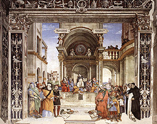
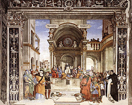

|  |
|---|
Textum Leoninum emendatum ex plagulis de prelo Taurini 1961 editum
et automato translatum a Roberto Busa SJ in taenias magneticas
denuo recognovit Enrique Alarcón atque instruxit


|  |
|---|


[27176] Contra Gentiles, lib. 4 cap. 1 n. 1 Ecce, haec ex parte dicta sunt viarum eius, et cum vix parvam stillam sermonum eius audiverimus, quis poterit tonitruum magnitudinis eius intueri. Iob, 26-14.
[27177] Contra Gentiles, lib. 4 cap. 1 n. 2 Intellectus humanus, a rebus sensibilibus connaturaliter sibi scientiam capiens, ad intuendam divinam substantiam in seipsa, quae super omnia sensibilia, immo super omnia alia entia improportionaliter elevatur, pertingere per seipsum non valet.
[27178] Contra Gentiles, lib. 4 cap. 1 n. 3 Sed quia perfectum hominis bonum est ut quoquo modo Deum cognoscat, ne tam nobilis creatura omnino in vanum esse videretur, velut finem proprium attingere non valens, datur homini quaedam via per quam in Dei cognitionem ascendere possit: ut scilicet, quia omnes rerum perfectiones quodam ordine a summo rerum vertice Deo descendunt, ipse, ab inferioribus incipiens et gradatim ascendens, in Dei cognitionem proficiat; nam et in corporalibus motibus eadem est via qua descenditur et ascenditur, ratione principii et finis distincta.
[27179] Contra Gentiles, lib. 4 cap. 1 n. 4 Praedicti autem descensus perfectionum a Deo duplex est ratio. Una quidem ex parte primae rerum originis: nam divina sapientia, ut perfectio esset in rebus, res produxit in ordine, ut creaturarum universitas ex summis rerum et infimis compleretur. Alia vero ratio ex ipsis rebus procedit. Nam cum causae sint nobiliores effectibus, prima quidem causata deficiunt a prima causa, quae Deus est, quae tamen suis effectibus praeminent; et sic deinceps quousque ad ultima rerum perveniatur.
[27180] Contra Gentiles, lib. 4 cap. 1 n. 5 Et quia in summo rerum vertice Deo perfectissima unitas invenitur; et unumquodque, quanto est magis unum, tanto est magis virtuosum et dignius: consequens est ut quantum a primo principio receditur, tanto maior diversitas et variatio inveniatur in rebus. Oportet igitur processum emanationis a Deo uniri quidem in ipso principio, multiplicari autem secundum res infimas, ad quas terminatur. Et ita, secundum diversitatem rerum, apparet viarum diversitas, quasi ab uno principio inchoatarum, et terminatarum ad diversa.
[27181] Contra Gentiles, lib. 4 cap. 1 n. 6 Per has igitur vias intellectus noster in Dei cognitionem ascendere potest, sed propter debilitatem intellectus nostri, nec ipsas vias perfecte cognoscere possumus. Nam cum sensus unde nostra cognitio incipit, circa exteriora accidentia versetur, quae sunt secundum se sensibilia, ut color et odor et huiusmodi; intellectus vix per huiusmodi exteriora potest ad perfectam notitiam inferioris naturae pervenire, etiam illarum rerum quarum accidentia sensu perfecte comprehendit. Multo igitur minus pertingere poterit ad comprehendendum naturas illarum rerum quarum pauca accidentia capimus sensu; et adhuc minus illorum quorum accidentia sensu capi non possunt, etsi per quosdam deficientes effectus percipiantur. Sed etsi ipsae naturae rerum essent nobis cognitae, ordo tamen earum, secundum quod a divina providentia et ad invicem disponuntur et diriguntur in finem, tenuiter nobis notus esse potest: cum ad cognoscendam rationem divinae providentiae non pertingamus. Si igitur ipsae viae imperfecte cognoscuntur a nobis, quomodo per eas ad perfecte cognoscendum ipsarum viarum principium poterimus pervenire? Quod quia sine proportione excedit vias praedictas, etiam si vias ipsas cognosceremus perfecte, nondum tamen perfecta principii cognitio nobis adesset.
[27182] Contra Gentiles, lib. 4 cap. 1 n. 7 Quia igitur debilis erat Dei cognitio ad quam homo per vias praedictas intellectuali quodam quasi intuitu pertingere poterat, ex superabundanti bonitate, ut firmior esset hominis de Deo cognitio, quaedam de seipso hominibus revelavit quae intellectum humanum excedunt.
[27183] Contra Gentiles, lib. 4 cap. 1 n. 8 In qua quidem revelatione, secundum congruentiam hominis, quidam ordo servatur, ut paulatim de imperfecto veniat ad perfectum: sicut in ceteris rebus mobilibus accidit. Primo igitur sic homini revelantur ut tamen non intelligantur, sed solum quasi audita credantur: quia intellectus hominis secundum hunc statum, quo sensibilibus est connexus, ad ea intuenda quae omnes proportiones sensus excedunt, omnino elevari non potest. Sed cum a sensibilium connexione fuerit liberatus, tunc elevabitur ad ea quae revelantur intuenda.
[27184] Contra Gentiles, lib. 4 cap. 1 n. 9 Est igitur triplex cognitio hominis de divinis. Quarum prima est secundum quod homo naturali lumine rationis, per creaturas in Dei cognitionem ascendit. Secunda est prout divina veritas, intellectum humanum excedens, per modum revelationis in nos descendit, non tamen quasi demonstrata ad videndum, sed quasi sermone prolata ad credendum. Tertia est secundum quod mens humana elevabitur ad ea quae sunt revelata perfecte intuenda.
[27185] Contra Gentiles, lib. 4 cap. 1 n. 10 Hanc igitur triplicem cognitionem Iob in verbis propositis insinuat. Quod enim dicit, ecce, haec ex parte dicta sunt viarum eius, ad illam cognitionem pertinet qua per vias creaturarum in Dei cognitionem noster intellectus ascendit. Et quia has vias imperfecte cognoscimus, recte adiunxit, ex parte. Ex parte enim cognoscimus: sicut apostolus dicit, 1 Cor. 13-9.
[27186] Contra Gentiles, lib. 4 cap. 1 n. 11 Quod vero subdit, et cum vix parvam stillam sermonum eius audiverimus, ad secundam cognitionem pertinet, prout divina nobis credenda per modum locutionis revelantur: fides enim, ut dicitur Rom. 10-17, est ex auditu, auditus autem per verbum Dei; de quo etiam dicitur Ioan. 17-17, sanctifica eos in veritate: sermo tuus veritas est. Sic igitur, quia revelata veritas de divinis non videnda, sed credenda proponitur, recte dicit, audiverimus. Quia vero haec imperfecta cognitio effluit ab illa perfecta cognitione qua divina veritas in seipsa videtur, dum a Deo nobis mediantibus Angelis revelatur, qui vident faciem patris, recte nominat stillam. Unde et Ioel 3-18 dicitur: in die illa stillabunt montes dulcedinem. Sed quia non omnia mysteria quae in prima veritate visa Angeli et alii beati cognoscunt, sed quaedam pauca nobis revelantur, signanter addit, parvam. Dicitur enim Eccli. 43-35 quis magnificat eum sicut est ab initio? Multa abscondita sunt maiora his: pauca enim vidimus operum eius. Et dominus discipulis dicit, Ioan. 16-12: multa habeo vobis dicere, sed non potestis portare modo. Haec etiam pauca quae nobis revelantur, sub quibusdam similitudinibus et obscuritatibus verborum nobis proponuntur: ut ad ea quomodocumque capienda soli studiosi perveniant, alii vero quasi occulta venerentur, et increduli lacerare non possint: unde dicit apostolus, I ad Cor. 13-12: videmus nunc per speculum in aenigmate. Signanter igitur addit, vix ut difficultas ostenderetur.
[27187] Contra Gentiles, lib. 4 cap. 1 n. 12 Quod vero subdit, quis poterit tonitruum magnitudinis eius intueri? Ad tertiam cognitionem pertinet, qua prima veritas cognoscetur, non sicut credita, sed sicut visa: videbimus enim eum sicuti est, ut dicitur I Ioan. 3-2. Unde dicit, intueri. Nec aliquid modicum de divinis mysteriis percipietur, sed ipsa maiestas divina videbitur, et omnis bonorum perfectio: unde dominus ad Moysen dixit, Exodi 33-19: ego ostendam tibi omne bonum. Recte ergo dicit, magnitudinis. Non autem proponetur veritas homini aliquibus velaminibus occultata, sed omnino manifesta: unde dominus discipulis suis dicit, Ioan. 16-25: venit hora cum iam non in proverbiis loquar vobis, sed palam de patre annuntiabo vobis. Signanter ergo dicit, tonitruum, ad manifestationem insinuandam.
[27188] Contra Gentiles, lib. 4 cap. 1 n. 13 Competunt autem verba praemissa nostro proposito. Nam in praecedentibus de divinis sermo est habitus secundum quod ad cognitionem divinorum naturalis ratio per creaturas pervenire potest: imperfecte tamen, et secundum proprii possibilitatem ingenii, ut sic possimus dicere cum Iob, ecce, haec ex parte dicta sunt viarum eius. Restat autem sermo habendus de his quae nobis revelata sunt divinitus ut credenda, excedentia intellectum humanum.
[27189] Contra Gentiles, lib. 4 cap. 1 n. 14 Circa quae qualiter procedendum sit, praemissa verba nos docent. Cum enim huiusmodi veritatem vix audiverimus in sermonibus sacrae Scripturae quasi stillam parvam ad nos descendentem; nec possit aliquis in huius vitae statu tonitruum magnitudinis intueri; erit hic modus servandus, ut ea quae in sermonibus sacrae Scripturae sunt tradita, quasi principia sumantur; et sic ea quae in sermonibus praedictis occulte nobis traduntur, studeamus utcumque mente capere, a laceratione infidelium defendendo; ut tamen praesumptio perfecte cognoscendi non adsit; probanda enim sunt huiusmodi auctoritate sacrae Scripturae, non autem ratione naturali. Sed tamen ostendendum est quod rationi naturali non sunt opposita, ut ab impugnatione infidelium defendantur. Qui etiam modus in principio huius operis praedeterminatus est.
[27190] Contra Gentiles, lib. 4 cap. 1 n. 15 Quia vero naturalis ratio per creaturas in Dei cognitionem ascendit, fidei vero cognitio a Deo in nos e converso divina revelatione descendit; est autem eadem via ascensus et descensus: oportet eadem via procedere in his quae supra rationem creduntur, qua in superioribus processum est circa ea quae ratione investigantur de Deo: ut primo scilicet ea tractentur quae de ipso Deo supra rationem credenda proponuntur, sicut est confessio Trinitatis. Secundo autem, de his quae supra rationem a Deo sunt facta, sicut opus incarnationis, et quae consequuntur ad ipsam. Tertio vero, ea quae supra rationem in ultimo hominum fine expectantur, sicut resurrectio et glorificatio corporum, perpetua beatitudo animarum, et quae his connectuntur.
[27192] Contra Gentiles, lib. 4 cap. 2 n. 1 Principium autem considerationis a secreto divinae generationis sumentes, quid de ea secundum sacrae Scripturae documenta teneri debeat, praemittamus. Dehinc vero ea quae contra veritatem fidei infidelitas adinvenit argumenta ponamus: quorum solutione subiecta, huius considerationis propositum consequemur.
[27193] Contra Gentiles, lib. 4 cap. 2 n. 2 Tradit igitur nobis sacra Scriptura in divinis paternitatis et filiationis nomina, Iesum Christum filium Dei contestans. Quod in Scriptura novi testamenti frequentissime invenitur. Dicitur enim Matth. 11-27: nemo novit filium nisi pater: neque patrem quis novit nisi filius. Ab hoc Marcus suum Evangelium coepit, dicens: initium Evangelii Iesu Christi, filii Dei. Ioannes etiam Evangelista hoc frequenter ostendit: dicitur enim Ioan. 3-35: pater diligit filium, et omnia dedit in manu eius; et Ioan. 5-21: sicut pater suscitat mortuos et vivificat, sic et filius quos vult vivificat. Paulus etiam apostolus haec verba frequenter interserit: dicit enim, Rom. 1, se segregatum in Evangelium Dei, (quod ante promiserat per prophetas suos in Scripturis sanctis) de filio suo; et ad Hebr. 1-1: multifariam multisque modis olim Deus loquens patribus in prophetis, novissime diebus istis locutus est nobis in filio.
[27194] Contra Gentiles, lib. 4 cap. 2 n. 3 Hoc etiam traditur, licet rarius, in Scriptura veteris testamenti. Dicitur enim Proverb. 30-4: quod nomen eius? Et quod nomen filii eius, si nosti? In Psalmo etiam legitur: dominus dixit ad me, filius meus es tu. Et iterum: ipse invocavit me, pater meus es tu.
[27195] Contra Gentiles, lib. 4 cap. 2 n. 4 Et quamvis haec duo ultima verba aliqui vellent ad sensum alium retorquere, ut quod dicitur, dominus dixit ad me, filius meus es tu, ad ipsum David referatur; quod vero dicitur, ipse invocavit me, pater meus es tu, Salomoni attribuatur: tamen ea quae coniunguntur utrique, hoc non omnino ita esse ostendunt. Neque enim David potest competere quod additur, ego hodie genui te; et quod subditur, dabo tibi gentes hereditatem tuam, et possessionem tuam terminos terrae, cum eius regnum usque ad terminos terrae non fuerit dilatatum, ut historia libri regum declarat. Neque etiam Salomoni potest omnino competere quod dicitur, ipse invocavit me, pater meus es tu: cum subdatur ponam in saeculum saeculi sedem eius, et thronum eius sicut dies caeli. Unde datur intelligi quod, quia quaedam praemissis verbis annexa David vel Salomoni possint congruere, quaedam vero nequaquam, quod de David et Salomone haec verba dicantur, secundum morem Scripturae, in alterius figuram, in quo universa compleantur.
[27196] Contra Gentiles, lib. 4 cap. 2 n. 5 Quia vero nomina patris et filii generationem aliquam consequuntur, ipsum etiam divinae generationis nomen Scriptura non tacuit. Nam in Psalmo, ut dictum est, legitur: ego hodie genui te. Et Proverb. 8, dicitur: nondum erant abyssi et ego iam concepta eram: ante omnes colles ego parturiebar; vel secundum aliam litteram: ante omnes colles generavit me dominus. Dicitur etiam Isaiae ult.: numquid ego, qui alios parere facio, ipse non pariam? Dicit dominus. Si ego, qui generationem ceteris tribuo, sterilis ero? Ait dominus Deus. Et licet dici possit hoc esse referendum ad multiplicationem filiorum Israel de captivitate revertentium in terram suam, quia praemittitur, parturivit et peperit Sion filios suos, tamen hoc proposito non obsistit. Ad quodcumque enim ratio aptetur, ipsa tamen ratio, quae ex Dei ore inducitur, firma et stabilis manet: ut, si ipse aliis generationem tribuat, sterilis non sit. Nec esset conveniens ut qui alios vere generare facit, ipse non vere, sed per similitudinem generet: cum oporteat nobilius esse aliquid in causa quam in causatis, ut ostensum est. Ioan. etiam 1 dicitur: vidimus gloriam eius quasi unigeniti a patre, et iterum: unigenitus filius, qui est in sinu patris, ipse enarravit. Et Paulus dicit, Hebr. 1-6: et cum iterum introducit primogenitum in orbem terrae, dicit: et adorent eum omnes Angeli Dei.
[27198] Contra Gentiles, lib. 4 cap. 3 n. 1 Considerandum tamen quod praedictis nominibus divina Scriptura utitur etiam ad creationem rerum ostendendam: dicitur enim Iob 38-29 quis est pluviae pater? Vel quis genuit stillas roris? De cuius utero egressa est glacies? Et gelu de caelo quis genuit? Ne igitur nihil aliud ex paternitatis, filiationis et generationis vocabulis intelligeretur quam creationis efficacia, addidit Scripturae auctoritas ut eum quem filium et genitum nominabat, etiam Deum esse non taceret, ut sic praedicta generatio aliquid amplius quam creatio intelligeretur. Dicitur enim Ioan. 1-1: in principio erat verbum, et verbum erat apud Deum, et Deus erat verbum. Et quod verbi nomine filius intelligatur, ex consequentibus ostenditur: nam subdit: verbum caro factum est, et habitavit in nobis, et vidimus gloriam eius, gloriam quasi unigeniti a patre. Et Paulus dicit, Tit. 3-4: apparuit benignitas et humanitas salvatoris nostri Dei.
[27199] Contra Gentiles, lib. 4 cap. 3 n. 2 Hoc etiam veteris testamenti Scriptura non tacuit, Christum Deum nominans. Dicitur enim in Psalmo: sedes tua, Deus, in saeculum saeculi, virga directionis virga regni tui: dilexisti iustitiam, et odisti iniquitatem. Et quod ad Christum dicatur, patet per id quod subditur: propterea unxit te Deus, Deus tuus, oleo laetitiae prae consortibus tuis. Et Isaiae 9-6 dicitur: parvulus natus est nobis, et filius datus est nobis, et factus est principatus super humerum eius; et vocabitur nomen eius admirabilis, consiliarius, Deus fortis, pater futuri saeculi, princeps pacis.
[27200] Contra Gentiles, lib. 4 cap. 3 n. 3 Sic igitur ex sacra Scriptura docemur filium Dei, a Deo genitum, Deum esse. Filium autem Dei Iesum Christum Petrus confessus est, ei dicens: tu es Christus, filius Dei vivi. Ipse igitur et unigenitus est, et Deus est.
[27202] Contra Gentiles, lib. 4 cap. 4 n. 1 Huius autem doctrinae veritatem quidam perversi homines suo sensu metiri praesumentes, de praemissis vanas et varias opiniones conceperunt.
[27203] Contra Gentiles, lib. 4 cap. 4 n. 2 Quorum quidem consideraverunt hanc esse Scripturae consuetudinem, eos qui divina gratia iustificantur, filios Dei dici: secundum illud Ioan. 1-12, dedit eis potestatem filios Dei fieri, his qui credunt in nomine eius. Et Rom. 8-16, dicitur: ipse enim spiritus testimonium reddit spiritui nostro quod sumus filii Dei. Et 1 Ioan. 3-1: videte qualem caritatem dedit nobis pater, ut filii Dei nominemur et simus. Quos etiam a Deo genitos esse Scriptura non tacet. Dicitur enim Iac. 1-18: voluntarie genuit nos verbo veritatis. Et 1 Ioan. 3-9, dicitur: omnis qui natus est ex Deo, peccatum non facit, quoniam semen ipsius in eo manet. Et, quod est mirabilius, eiusdem nomen divinitatis adscribitur. Dominus enim dixit ad Moysen: ego constitui te Deum Pharaonis. Et in Psalmo: ego dixi, dii estis, et filii excelsi omnes; et, sicut dominus dicit, Ioan. 10-35: illos dixit deos ad quos sermo Dei factus est.
[27204] Contra Gentiles, lib. 4 cap. 4 n. 3 Per hunc ergo modum, opinantes Iesum Christum purum hominem esse, et ex Maria virgine initium sumpsisse, et per beatae vitae meritum divinitatis honorem prae ceteris fuisse adeptum, aestimaverunt eum, similiter aliis hominibus, per adoptionis spiritum Dei filium; et per gratiam ab eo genitum; et per quandam assimilationem ad Deum in Scripturis dici Deum, non per naturam, sed per consortium quoddam divinae bonitatis, sicut et de sanctis dicitur II Petr. 1-4: ut efficiamini divinae consortes naturae, fugientes eius quae in mundo est concupiscentiae corruptionem.
[27205] Contra Gentiles, lib. 4 cap. 4 n. 4 Hanc autem positionem sacrae Scripturae auctoritate confirmare nitebantur.
[27206] Contra Gentiles, lib. 4 cap. 4 n. 5 Dicit enim dominus, Matth. ult.: data est mihi omnis potestas in caelo et in terra. Quod si ante tempora Deus esset, potestatem ex tempore non accepisset.
[27207] Contra Gentiles, lib. 4 cap. 4 n. 6 Item, Rom. 1, dicitur de filio quod factus est ei, scilicet Deo, ex semine David secundum carnem; et quod praedestinatus est filius Dei in virtute. Quod autem praedestinatur et factum est, videtur non esse aeternum.
[27208] Contra Gentiles, lib. 4 cap. 4 n. 7 Item. Apostolus dicit, ad Philipp. 2-8: factus est obediens usque ad mortem, mortem autem crucis: propter quod Deus exaltavit illum, et dedit illi nomen quod est super omne nomen. Ex quo videtur ostendi quod propter obedientiae et passionis meritum divino sit honore donatus, et super omnia exaltatus.
[27209] Contra Gentiles, lib. 4 cap. 4 n. 8 Petrus etiam dicit, Act. 2-36: certissime ergo sciat omnis domus Israel quia dominum eum et Christum Deus fecit hunc Iesum, quem vos crucifixistis. Videtur igitur ex tempore Deus esse factus, non ante tempora natus.
[27210] Contra Gentiles, lib. 4 cap. 4 n. 9 Adducunt etiam in fulcimentum suae opinionis ea quae in Scripturis de Christo ad defectum pertinere videntur: sicut quod femineo portatur utero, et profectum aetatis accepit, esuriem passus est, et lassitudine fatigatus, et morti subiectus; quod sapientia profecit, iudicii se nescire diem confessus est, et mortis terrore concussus est; et alia huiusmodi, quae Deo per naturam existenti convenire non possent. Unde concludunt quod per meritum honorem divinum adeptus est per gratiam, non quod esset naturae divinae.
[27211] Contra Gentiles, lib. 4 cap. 4 n. 10 Hanc autem positionem primo adinvenerunt quidam antiqui haeretici, Cerinthus et Ebion; quam postea Paulus Samosatenus instauravit; et postea a Photino est confirmata, ut qui hoc dogmatizant, Photiniani nuncupentur.
[27212] Contra Gentiles, lib. 4 cap. 4 n. 11 Diligenter autem verba sacrae Scripturae considerantibus apparet non hunc sensum in ea contineri quem praedicti homines sua opinione conceperunt. Nam cum Salomon dicat, nondum erant abyssi et ego iam concepta eram, satis ostendit hanc generationem ante omnia corporalia extitisse. Unde relinquitur quod filius a Deo genitus initium essendi a Maria non sumpsit. Et licet haec, et alia similia testimonia depravare conati fuerint perversa expositione, dicentes haec secundum praedestinationem debere intelligi, quia scilicet ante mundi conditionem dispositum fuit ut ex Maria virgine Dei filius nasceretur, non quod Dei filius fuerit ante mundum; convincantur quod non solum in praedestinatione, sed etiam realiter fuerit ante Mariam. Nam post praemissa verba Salomonis subiungitur: quando appendebat fundamenta terrae, cum eo eram cuncta componens: si autem in sola praedestinatione fuisset, nihil agere potuisset. Hoc etiam ex verbis Ioannis Evangelistae habetur: nam cum praemisisset, in principio erat verbum, quo nomine filius intelligitur, ut ostensum est; ne quis hoc secundum praedestinationem accipere possit, subdit: omnia per ipsum facta sunt, et sine ipso factum est nihil, quod verum esse non posset nisi realiter ante mundum extitisset. Item, filius Dei dicit, Ioan., 3-13: nemo ascendit in caelum nisi qui descendit de caelo, filius hominis, qui est in caelo; et iterum, Ioan. 6-38: descendi de caelo, non ut faciam voluntatem meam, sed voluntatem eius qui misit me. Apparet ergo eum fuisse antequam de caelo descenderet.
[27213] Contra Gentiles, lib. 4 cap. 4 n. 12 Praeterea. Secundum praedictam positionem, homo per vitae meritum profecit in Deum. Apostolus autem e converso ostendit quod, cum Deus esset, factus est homo. Dicit enim, ad Philipp. 2-6 cum in forma Dei esset, non rapinam arbitratus est esse se aequalem Deo: sed semetipsum exinanivit, formam servi accipiens, in similitudinem hominum factus, et habitu inventus ut homo. Repugnat igitur praedicta positio apostolicae sententiae.
[27214] Contra Gentiles, lib. 4 cap. 4 n. 13 Adhuc. Inter ceteros qui Dei gratiam habuerunt, Moyses eam habuit copiose, de quo dicitur Exod. 33-11, quod loquebatur ei dominus facie ad faciem, sicut loqui solet homo ad amicum suum. Si igitur Iesus Christus non diceretur Dei filius nisi propter gratiam adoptionis, sicut alii sancti, eadem ratione Moyses filius diceretur et Christus, licet etiam abundantiori gratia Christus fuerit dotatus: nam et inter alios sanctos, unus alio maiori gratia repletur, et tamen omnes eadem ratione filii Dei dicuntur. Moyses autem non eadem ratione dicitur filius qua Christus. Distinguit enim apostolus Christum a Moyse sicut filium a servo: dicitur enim ad Hebr. 3-5: Moyses quidem fidelis erat in tota domo eius tanquam famulus, in testimonium eorum quae dicenda erant: Christus autem tanquam filius in domo sua. Manifestum est ergo quod Christus non dicitur Dei filius per adoptionis gratiam, sicut alii sancti.
[27215] Contra Gentiles, lib. 4 cap. 4 n. 14 Similis etiam ratio ex pluribus aliis Scripturae locis colligi potest, quae quodam singulari modo Christum prae aliis Dei filium nominat, quandoque quidem, absque aliis, singulariter eum filium nominat: sicut vox patris intonuit in Baptismo, hic est filius meus dilectus, in quo mihi complacui. Quandoque eum unigenitum nominat: sicut Ioan. 1-14, vidimus eum quasi unigenitum a patre; et iterum, unigenitus, qui est in sinu patris, ipse enarravit. Si autem communi modo, sicut et alii, filius diceretur, unigenitus dici non posset. Quandoque etiam et primogenitus nominatur, ut quaedam derivatio filiationis ab eo in alios ostendatur: secundum illud Rom. 8-29: quos praescivit et praedestinavit fieri conformes imagini filii eius, ut sit ipse primogenitus in multis fratribus; et Gal. 4-4 dicitur: misit Deus filium suum ut adoptionem filiorum reciperemus. Alia ergo ratione ipse est filius, per cuius filiationis similitudinem alii filii dicuntur.
[27216] Contra Gentiles, lib. 4 cap. 4 n. 15 Amplius. Quaedam opera in Scripturis sacris ita Deo proprie attribuuntur quod alteri convenire non possunt, sicut sanctificatio animarum, et remissio peccatorum: dicitur enim Levit. 20-8: ego dominus, qui sanctifico vos; et Isaiae 43-25: ego sum qui deleo iniquitates vestras propter me. Utrumque autem horum Christo Scriptura attribuit. Dicitur enim ad Hebr. 2-11: qui sanctificat et qui sanctificantur, ex uno omnes; et ad Hebr. ult.: Iesus, ut sanctificaret per suum sanguinem populum, extra portam passus est. Ipse etiam dominus de se protestatus est quod haberet potestatem remittendi peccata, et miraculo confirmavit, ut habetur Matth. 9-6. Hoc etiam Angelus de ipso praenuntiavit, ipse, inquiens, salvum faciet populum suum a peccatis eorum. Non igitur Christus, et sanctificans et peccata remittens, sic dicitur Deus sicut dicuntur dii hi qui sanctificantur, et quorum peccata remittuntur: sed sicut virtutem et naturam divinitatis habens.
[27217] Contra Gentiles, lib. 4 cap. 4 n. 16 Illa vero Scripturae testimonia quibus ostendere nitebantur quod Christus non esset Deus per naturam, efficacia non sunt ad eorum propositum ostendendum. Confitemur enim in Christo Dei filio, post incarnationis mysterium, duas naturas, humanam scilicet et divinam. Unde de eo dicuntur et quae Dei sunt propria, ratione divinae naturae; et quae ad defectum pertinere videntur, ratione humanae naturae, ut infra plenius explanabitur. Nunc autem, ad praesentem considerationem de divina generatione, hoc sufficiat monstratum esse secundum Scripturas quod Christus Dei filius et Deus dicitur non solum sicut purus homo per gratiam adoptionis, sed propter divinitatis naturam.
[27219] Contra Gentiles, lib. 4 cap. 5 n. 1 Quia vero omnium de Deo recte sentientium haec est fixa mentis conceptio, quod non possit esse nisi unus Deus, quidam, ex Scripturis concipientes quod Christus sit vere et naturaliter Deus ac Dei filius, unum Deum esse confessi sunt Christum Dei filium et Deum patrem: nec tamen quod Deus filius dicatur secundum suam naturam aut ab aeterno, sed ex tunc filiationis nomen accepit ex quo de Maria virgine natus est per incarnationis mysterium. Et sic omnia quae Christus secundum carnem sustinuit, Deo patri attribuebant: puta esse filium virginis, conceptum et natum esse ex ipsa, passum, mortuum et resurrexisse, et alia omnia quae Scripturae de Christo secundum carnem loquuntur.
[27220] Contra Gentiles, lib. 4 cap. 5 n. 2 Hanc autem positionem confirmare nitebantur Scripturae auctoritatibus.
[27221] Contra Gentiles, lib. 4 cap. 5 n. 3 Dicitur enim Exod. 20: audi, Israel, dominus Deus tuus Deus unus est. Et Deut. 32-39: videte quod ego sum solus, et non est alius praeter me. Et Ioan. 5: pater in me manens, ipse facit opera et 14-9 qui videt me, videt et patrem; et, ego in patre, et pater in me est. Ex quibus omnibus concipiebant Deum patrem ipsum filium dici ex virgine incarnatum.
[27222] Contra Gentiles, lib. 4 cap. 5 n. 4 Haec autem fuit opinio Sabellianorum, qui et Patripassiani sunt dicti, eo quod patrem passum esse confitentur, asserentes ipsum patrem esse Christum.
[27223] Contra Gentiles, lib. 4 cap. 5 n. 5 Haec autem positio, etsi a praedicta differat quantum ad Christi divinitatem, nam haec Christum verum et naturalem Deum esse confitetur, quod prima negabat; tamen quantum ad generationem et filiationem, utraque est conformis opinio: nam sicut prima positio asserit filiationem et generationem qua Christus filius dicitur, non fuisse ante Mariam, ita et haec opinio confitetur. Neutra igitur positio generationem et filiationem ad divinam naturam refert, sed solum ad naturam humanam. Habet etiam et hoc proprium ista positio, quod, cum dicitur filius Dei, non designatur aliqua subsistens persona, sed quaedam proprietas superveniens praeexistenti personae: nam ipse pater, secundum quod carnem sumpsit ex virgine, filii nomen accepit; non quasi filius sit aliqua subsistens persona a persona patris distincta.
[27224] Contra Gentiles, lib. 4 cap. 5 n. 6 Huius autem positionis falsitas manifeste ostenditur auctoritate Scripturae. Nam Christus non solum virginis filius dicitur in Scripturis, sed etiam filius Dei: ut ex superioribus patet. Hoc autem esse non potest, ut idem sit filius sui ipsius: cum enim filius generetur a patre, generans autem det esse genito, sequeretur quod idem esset dans et accipiens esse; quod omnino esse non potest. Non est igitur Deus pater ipse filius, sed alius est filius et alius pater.
[27225] Contra Gentiles, lib. 4 cap. 5 n. 7 Item. Dominus dicit: descendi de caelo, non ut faciam voluntatem meam, sed voluntatem eius qui misit me, Ioan. 6-38; et 17-5: clarifica me, pater, apud temetipsum. Ex quibus omnibus, et similibus, ostenditur filius esse alius a patre.
[27226] Contra Gentiles, lib. 4 cap. 5 n. 8 Potest autem dici secundum hanc positionem, quod Christus dicitur filius Dei patris solum secundum humanam naturam: quia scilicet ipse Deus pater humanam naturam quam assumpsit, creavit et sanctificavit. Sic igitur ipse secundum divinitatem sui ipsius secundum humanitatem dicitur pater. Et ita etiam nihil prohibet eundem secundum humanitatem distinctum esse a seipso secundum divinitatem.
[27227] Contra Gentiles, lib. 4 cap. 5 n. 9 Sed secundum hoc sequetur quod Christus dicatur filius Dei sicut et alii homines, vel ratione creationis, vel ratione sanctificationis. Ostensum est autem quod alia ratione Christus dicitur Dei filius quam alii sancti. Non igitur modo praedicto potest intelligi quod ipse pater sit Christus et filius sui ipsius.
[27228] Contra Gentiles, lib. 4 cap. 5 n. 10 Praeterea. Ubi est unum suppositum subsistens, pluralis praedicatio non recipitur. Christus, autem de se et de patre pluraliter loquitur, dicens: ego et pater unum sumus. Non est ergo filius ipse pater.
[27229] Contra Gentiles, lib. 4 cap. 5 n. 11 Adhuc. Si filius a patre non distinguitur nisi per incarnationis mysterium, ante incarnationem omnino nulla distinctio erat. Invenitur autem ex sacra Scriptura etiam ante incarnationem filius a patre fuisse distinctus. Dicitur enim Ioan. 1-1: in principio erat verbum, et verbum erat apud Deum, et Deus erat verbum. Verbum igitur, quod apud Deum erat, aliquam distinctionem ab ipso habebat: habet enim hoc consuetudo loquendi, ut alius apud alium esse dicatur. Similiter etiam Proverb. 8-30, genitus a Deo dicit: cum eo eram componens omnia. In quo rursus associatio et quaedam distinctio designatur. Dicitur etiam Osee 1-7: domui Iuda miserebor, et salvabo eos in domino Deo suo: ubi Deus pater de salvandis in Deo filio populis loquitur quasi de persona a se distincta, quae Dei nomine digna habeatur. Dicitur etiam Gen. 1-26: faciamus hominem ad imaginem et similitudinem nostram: in quo expresse pluralitas et distinctio facientium hominem designatur. Homo autem per Scripturas a solo Deo conditus esse docetur. Et sic Dei patris et Dei filii pluralitas et distinctio fuit etiam ante Christi incarnationem. Non igitur ipse pater filius dicitur propter incarnationis mysterium.
[27230] Contra Gentiles, lib. 4 cap. 5 n. 12 Amplius. Vera filiatio ad ipsum suppositum pertinet eius qui dicitur filius: non enim manus vel pes hominis filiationis nomen proprie accipit, sed ipse homo, cuius ista sunt partes. Paternitatis autem et filiationis nomina distinctionem requirunt in illis de quibus dicuntur: sicut et generans et genitum. Oportet igitur, si aliquis vere dicitur filius, quod supposito a patre distinguatur. Christus autem vere est Dei filius: dicitur enim 1 Ioan. ult.: ut simus in vero filio eius Iesu Christo. Oportet igitur quod Christus sit supposito distinctus a patre. Non igitur ipse pater est filius. Adhuc. Post incarnationis mysterium pater de filio protestatur: hic est filius meus dilectus. Haec autem demonstratio ad suppositum refertur. Christus igitur secundum suppositum est alius a patre.
[27231] Contra Gentiles, lib. 4 cap. 5 n. 13 Ea vero quibus Sabellius suam positionem nititur confirmare, id quod intendit non ostendunt, ut infra plenius ostendetur. Non enim per hoc quod Deus est unus, vel quod pater est in filio et filius in patre, habetur quod filius et pater sit unum supposito: potest enim et duorum supposito distinctorum aliqua unitas esse.
[27233] Contra Gentiles, lib. 4 cap. 6 n. 1 Cum autem doctrinae sacrae non congruat quod filius Dei a Maria initium sumpserit, ut Photinus dicebat; neque ut is qui ab aeterno Deus fuit et pater est, per carnis assumptionem filius esse coeperit, ut Sabellius dixerat: fuerunt alii hanc de divina generatione quam Scriptura tradit opinionem sumentes, quod filius Dei ante incarnationis mysterium extiterit, et etiam ante mundi conditionem; et quia iste filius a Deo patre est alius, aestimaverunt eum non esse eiusdem naturae cum Deo patre; non enim intelligere poterant, nec credere volebant, quod aliqui duo, secundum personam distincti, habeant unam essentiam et naturam. Et quia sola natura Dei patris, secundum fidei doctrinam, aeterna creditur, crediderunt naturam filii non ab aeterno extitisse, licet fuerit filius ante alias creaturas. Et quia omne quod non est aeternum, ex nihilo factum est et a Deo creatum, filium Dei ex nihilo factum esse, et creaturam praedicabant. Sed quia auctoritate Scripturae cogebantur ut etiam filium Deum nominarent, sicut in superioribus est expressum, dicebant eum unum cum Deo patre, non quidem per naturam, sed per quandam consensus unionem, et per divinae similitudinis participationem super ceteras creaturas. Unde, cum supremae creaturae, quas Angelos dicimus, in Scripturis et dii et filii Dei nominentur, secundum illud Iob 38-4 ubi eras cum me laudarent astra matutina, et iubilarent omnes filii Dei? Et in Psalmo, Deus stetit in synagoga deorum, hunc Dei filium et Deum prae aliis dici oportebat, utpote nobiliorem inter ceteras creaturas, in tantum quod per eum Deus pater omnem aliam condiderit creaturam.
[27234] Contra Gentiles, lib. 4 cap. 6 n. 2 Hanc autem positionem confirmare nitebantur sacrae Scripturae documentis.
[27235] Contra Gentiles, lib. 4 cap. 6 n. 3 Dicit enim filius, Ioan. 17-3, ad patrem loquens: haec est vita aeterna, ut cognoscant te solum Deum verum. Solus ergo pater Deus verus est. Cum ergo filius non sit pater, filius Deus verus esse non potest.
[27236] Contra Gentiles, lib. 4 cap. 6 n. 4 Item. Apostolus dicit, I ad Tim. ult.: serves mandatum sine macula irreprehensibile usque in adventum domini nostri Iesu Christi, quem suis temporibus ostendet beatus et solus potens rex regum et dominus dominantium, qui solus habet immortalitatem et lucem habitat inaccessibilem, in quibus verbis ostenditur distinctio Dei patris ostendentis ad Christum ostensum. Solus ergo Deus pater ostendens est potens rex regum et dominus dominantium, et solus habet immortalitatem et lucem habitat inaccessibilem. Solus ergo pater Deus verus est. Non ergo filius.
[27237] Contra Gentiles, lib. 4 cap. 6 n. 5 Praeterea. Dominus dicit, Ioan. 14-28: pater maior me est; et apostolus dicit filium patri esse subiectum, I ad Cor. 15-28: cum omnia subiecta illi fuerint, tunc ipse filius subiectus erit illi, scilicet patri, qui sibi subiecit omnia. Si autem esset una natura patris et filii, esset etiam una magnitudo et maiestas: non enim filius esset minor patre, nec patri subiectus. Relinquitur ergo ex Scripturis quod filius non sit eiusdem naturae cum patre ut credebant.
[27238] Contra Gentiles, lib. 4 cap. 6 n. 6 Adhuc. Natura patris non patitur indigentiam. In filio autem indigentia invenitur: ostenditur enim ex Scripturis quod a patre recipit; recipere autem indigentis est. Dicitur enim Matth. 11-27: omnia tradita sunt mihi a patre meo, et Ioan. 3-35: pater diligit filium, et omnia dedit in manu eius. Videtur igitur filius non esse eiusdem naturae cum patre.
[27239] Contra Gentiles, lib. 4 cap. 6 n. 7 Amplius. Doceri et adiuvari indigentis est. Filius autem a patre docetur et iuvatur. Dicitur enim Ioan. 5-19: non potest filius a se facere quicquam, nisi quod viderit patrem facientem; et infra: 20 pater diligit filium, et omnia demonstrat ei quae ipse facit; et Ioan. 15-15, filius dicit discipulis: omnia quaecumque audivi a patre meo, nota feci vobis. Non igitur videtur esse eiusdem naturae filius cum patre.
[27240] Contra Gentiles, lib. 4 cap. 6 n. 8 Praeterea. Praeceptum recipere, obedire, orare, et mitti, inferioris esse videtur. Haec autem de filio leguntur. Dicit enim filius, Ioan. 14-31: sicut mandatum dedit mihi pater, sic facio. Et Philipp. 2-8: factus est obediens patri usque ad mortem. Et Ioan. 14-16: ego rogabo patrem, et alium Paracletum dabit vobis. Et Galat. 4-4, dicit apostolus: cum venit plenitudo temporis, misit Deus filium suum. Est ergo filius minor patre, et ei subiectus.
[27241] Contra Gentiles, lib. 4 cap. 6 n. 9 Item. Filius clarificatur a patre: sicut ipse dicit, Ioan. 12-28: pater, clarifica nomen tuum; et sequitur: venit vox de caelo, et clarificavi, et iterum clarificabo. Apostolus etiam dicit, ad Rom. 8-11, quod Deus suscitavit Iesum Christum a mortuis. Et Petrus dicit, Act. 2-33, quod est dextera Dei exaltatus. Ex quibus videtur quod sit patre inferior.
[27242] Contra Gentiles, lib. 4 cap. 6 n. 10 Praeterea. In natura patris nullus defectus esse potest. In filio autem invenitur defectus potestatis: dicit enim Matth. 20-23: sedere ad dexteram meam vel sinistram, non est meum dare vobis, sed quibus paratum est a patre meo. Defectus etiam scientiae: dicit enim ipse, Marc. 13-32: de die autem illa et hora nemo scit, neque Angeli in caelo, neque filius, nisi pater. Invenitur etiam in eo defectus quietae affectionis: cum in eo Scriptura asserat tristitiam fuisse, et iram, et alias huiusmodi passiones. Non igitur videtur filius esse eiusdem naturae cum patre.
[27243] Contra Gentiles, lib. 4 cap. 6 n. 11 Adhuc. Expresse in Scripturis invenitur quod filius Dei sit creatura. Dicit enim Eccli. 24-12: dixit mihi creator omnium, et qui creavit me, requievit in tabernaculo meo. Et iterum: ab initio et ante saecula creata sum. Est igitur filius creatura.
[27244] Contra Gentiles, lib. 4 cap. 6 n. 12 Praeterea. Filius creaturis connumeratur. Dicitur enim Eccli. 24-5, ex persona sapientiae: ego ex ore altissimi prodii, primogenita ante omnem creaturam. Et apostolus, ad Coloss. 1-15, dicit de filio quod est primogenitus creaturae. Videtur ergo quod filius ordinem cum creaturis habeat, quasi primum inter eas obtinens gradum.
[27245] Contra Gentiles, lib. 4 cap. 6 n. 13 Amplius. Filius dicit, Ioan. 17-22, pro discipulis ad patrem orans: ego claritatem quam dedisti mihi, dedi eis, ut sint unum, sicut et nos unum sumus. Sic igitur pater et filius unum sunt sicut discipulos unum esse volebat. Non autem volebat discipulos esse per essentiam unum. Non ergo pater et filius sunt per essentiam unum. Et sic sequitur quod sit creatura, et patri subiectus.
[27246] Contra Gentiles, lib. 4 cap. 6 n. 14 Est autem haec positio Arii et Eunomii. Et videtur a Platonicorum dictis exorta, qui ponebant summum Deum, patrem et creatorem omnium rerum, a quo primitus effluxisse dicebant quandam mentem, in qua essent omnium rerum formae, superiorem omnibus aliis rebus, quam paternum intellectum nominabant; et post hanc, animam mundi; et deinde alias creaturas. Quod ergo in Scripturis sacris de Dei filio dicitur, hoc de mente praedicta intelligebant: et praecipue quia sacra Scriptura Dei filium Dei sapientiam nominat et verbum Dei. Cui etiam opinioni consonat positio Avicennae, qui supra animam primi caeli ponit intelligentiam primam, moventem primum caelum, supra quam ulterius Deum in summo ponebat.
[27247] Contra Gentiles, lib. 4 cap. 6 n. 15 Sic igitur Ariani de Dei filio suspicati sunt quod esset quaedam creatura supereminens omnibus aliis creaturis, qua mediante Deus omnia creasset: praecipue cum etiam quidam philosophi posuerunt quodam ordine res a primo principio processisse, ita quod per primum creatum omnia alia sint creata.
[27249] Contra Gentiles, lib. 4 cap. 7 n. 1 Hanc autem positionem divinae Scripturae repugnare manifeste potest percipere, si quis sacrarum Scripturarum dicta diligenter consideret.
[27250] Contra Gentiles, lib. 4 cap. 7 n. 2 Cum enim Scriptura divina et Christum Dei filium, et Angelos Dei filios nominet, alia tamen et alia ratione: unde apostolus, Hebr. 1-5, dicit: cui dixit aliquando Angelorum, filius meus es tu, ego hodie genui te? Quod ad Christum asserit esse dictum. Secundum autem positionem praedictam, eadem ratione Angeli filii dicerentur et Christus: utrisque enim nomen filiationis competeret secundum quandam sublimitatem naturae, in qua creati sunt a Deo.
[27251] Contra Gentiles, lib. 4 cap. 7 n. 3 Nec obstat si Christus sit excellentioris naturae prae aliis Angelis: quia etiam inter Angelos ordines diversi inveniuntur, ut ex superioribus patet, et tamen omnibus eadem filiationis ratio competit. Non igitur Christus filius Dei dicitur secundum quod asserit praedicta positio.
[27252] Contra Gentiles, lib. 4 cap. 7 n. 4 Item. Cum ratione creationis nomen filiationis divinae multis conveniat, quia omnibus Angelis et sanctis; si etiam Christus eadem ratione filius diceretur, non esset unigenitus, licet, propter excellentiam suae naturae, inter ceteros primogenitus posset dici. Asserit autem eum Scriptura esse unigenitum, Ioan. 1-14: vidimus eum quasi unigenitum a patre. Non igitur ratione creationis Dei filius dicitur.
[27253] Contra Gentiles, lib. 4 cap. 7 n. 5 Amplius. Nomen filiationis proprie et vere generationem viventium consequitur, in quibus genitum ex substantia generantis procedit: alias enim nomen filiationis non secundum veritatem, sed potius secundum similitudinem accipitur, cum filios dicimus aut discipulos, aut hos quorum gerimus curam. Si igitur Christus non diceretur filius nisi ratione creationis, cum id quod creatur a Deo, non ex substantia Dei derivetur, Christus vere filius dici non posset. Dicitur autem verus filius, I Ioan. ult.: ut simus, inquit, in vero filio eius, Iesu Christo. Non igitur Dei filius dicitur, quasi a Deo creatus in quantacumque naturae excellentia, sed quasi ex Dei substantia genitus.
[27254] Contra Gentiles, lib. 4 cap. 7 n. 6 Praeterea. Si Christus ratione creationis filius dicitur, non erit verus Deus: nihil enim creatum Deus potest dici nisi per quandam similitudinem ad Deum. Ipse autem Iesus Christus est verus Deus: cum enim Ioannes dixisset, ut simus in vero filio eius, subdit: hic est verus Deus et vita aeterna. Non igitur Christus filius Dei dicitur ratione creationis.
[27255] Contra Gentiles, lib. 4 cap. 7 n. 7 Amplius. Apostolus, ad Rom. 9-5, dicit: ex quibus Christus est secundum carnem, qui est super omnia Deus benedictus in saecula, amen. Et Tit. 2-13: expectantes beatam spem, et adventum gloriae magni Dei et salvatoris nostri Iesu Christi. Et Ierem. 23 dicitur: suscitabo David germen iustum et postea subditur, et hoc est nomen quod vocabunt eum, dominus iustus noster, ubi in Hebraeo habetur nomen tetragrammaton, quod de solo Deo certum est dici. Ex quibus apparet quod filius Dei est verus Deus.
[27256] Contra Gentiles, lib. 4 cap. 7 n. 8 Praeterea. Si Christus verus filius est, de necessitate sequitur quod sit verus Deus. Non enim vere filius potest dici quod ab alio gignitur, etiam si de substantia generantis nascatur nisi in similem speciem generantis procedat: oportet enim quod filius hominis homo sit. Si igitur Christus est verus filius Dei, oportet quod sit verus Deus. Non est igitur aliquid creatum.
[27257] Contra Gentiles, lib. 4 cap. 7 n. 9 Item. Nulla creatura recipit totam plenitudinem divinae bonitatis: quia, sicut ex superioribus patet, perfectiones a Deo in creaturas per modum cuiusdam descensus procedunt. Christus autem habet in se totam plenitudinem divinae bonitatis: dicit enim apostolus, ad Coloss. 2-9: in ipso habitat omnis plenitudo divinitatis. Christus ergo non est creatura.
[27258] Contra Gentiles, lib. 4 cap. 7 n. 10 Adhuc. Licet intellectus Angeli perfectiorem cognitionem habeat quam intellectus hominis, tamen multum deficit ab intellectu divino. Intellectus autem Christi non deficit in cognitione ab intellectu divino: dicit enim apostolus, ad Coloss. 2-3, quod in Christo sunt omnes thesauri sapientiae et scientiae absconditi. Non est igitur Christus filius Dei creatura.
[27259] Contra Gentiles, lib. 4 cap. 7 n. 11 Amplius. Quicquid Deus habet in seipso, est eius essentia, ut in primo ostensum est. Omnia autem quae habet pater, sunt filii: dicit enim ipse filius, Ioan. 16-15: omnia quae habet pater, mea sunt; et Ioan. 17-10, ad patrem loquens, ait: mea omnia tua sunt, et tua mea sunt. Est ergo eadem essentia et natura patris et filii. Non est igitur filius creatura.
[27260] Contra Gentiles, lib. 4 cap. 7 n. 12 Praeterea. Apostolus dicit, Philipp. 2, quod filius, antequam exinaniret semetipsum formam servi accipiens, in forma Dei erat. Per formam autem Dei non aliud intelligitur quam natura divina: sicut per formam servi non intelligitur aliud quam humana natura. Est ergo filius in natura divina. Non est igitur creatura.
[27261] Contra Gentiles, lib. 4 cap. 7 n. 13 Item. Nihil creatum potest esse Deo aequale. Filius autem est patri aequalis. Dicitur enim Ioan. 5-18: quaerebant eum Iudaei interficere, quia non solum solvebat sabbatum, sed et patrem suum dicebat Deum, aequalem se Deo faciens. Haec est autem Evangelistae narratio, cuius testimonium verum est, quod Christus filium Dei se dicebat et Deo aequalem, et propterea eum Iudaei persequebantur. Nec dubium est alicui Christiano quin illud quod Christus de se dixit, verum sit: cum et apostolus dicat, Philipp. 2-6, hoc non fuisse rapinam, quod aequalem se esse patri arbitratus est. Est ergo filius aequalis patri. Non est igitur creatura.
[27262] Contra Gentiles, lib. 4 cap. 7 n. 14 Amplius. In Psalmo legitur non esse similitudinem alicuius ad Deum etiam inter Angelos qui filii Dei dicuntur: quis, inquit, similis Deo in filiis Dei? Et alibi: Deus, quis similis erit tibi? Quod de perfecta similitudine accipi oportet: quod patet ex his quae in primo libro tractata sunt. Christus autem perfectam sui similitudinem ad patrem ostendit etiam in vivendo: dicitur enim Ioan. 5-26: sicut pater habet vitam in semetipso, sic dedit et filio vitam habere in semetipso. Non est igitur Christus computandus inter filios Dei creatos.
[27263] Contra Gentiles, lib. 4 cap. 7 n. 15 Adhuc. Nulla substantia creata repraesentat Deum quantum ad eius substantiam: quicquid enim ex perfectione cuiuscumque creaturae apparet, minus est quam quod Deus est; unde per nullam creaturam sciri potest de Deo quid est. Filius autem repraesentat patrem: dicit enim de eo apostolus, ad Coloss. 1-15, quod est imago invisibilis Dei. Et ne aestimetur esse imago deficiens, essentiam Dei non repraesentans, per quam non possit cognosci de Deo quid est, sicut vir dicitur imago Dei, I ad Cor. 11-7; ostenditur perfecta esse imago, ipsam Dei substantiam repraesentans, Hebr. 1-3, dicente apostolo: cum sit splendor gloriae, et figura substantiae eius. Non est igitur filius creatura.
[27264] Contra Gentiles, lib. 4 cap. 7 n. 16 Praeterea. Nihil quod est in aliquo genere, est universalis causa eorum quae sunt in genere illo, sicut universalis causa hominum non est aliquis homo, nihil enim est sui ipsius causa: sed sol, qui est extra genus humanum, est universalis causa generationis humanae, et ulterius Deus. Filius autem est universalis causa creaturarum: dicitur enim Ioan. 1-3: omnia per ipsum facta sunt; et Proverb. 8-30, dicit sapientia genita: cum eo eram componens omnia, et apostolus dicit, ad Coloss. 1-16: in ipso condita sunt universa in caelo et in terra. Ipse igitur non est de genere creaturarum.
[27265] Contra Gentiles, lib. 4 cap. 7 n. 17 Item. Ex ostensis in secundo libro manifestum est quod substantiae incorporeae, quas Angelos dicimus, non possunt aliter fieri quam per creationem; et etiam ostensum est quod nulla substantia potest creare nisi solus Deus. Sed Dei filius Iesus Christus est causa Angelorum, eos in esse producens: dicit enim apostolus: sive throni, sive dominationes, sive principatus, sive potestates, omnia per ipsum et in ipso creata sunt. Ipse igitur filius non est creatura.
[27266] Contra Gentiles, lib. 4 cap. 7 n. 18 Praeterea. Cum propria actio cuiuslibet rei sequatur naturam ipsius, nulli competit propria actio alicuius rei cui non competit illius rei natura: quod enim non habet humanam speciem, nec actionem humanam habere potest. Propriae autem actiones Dei conveniunt filio: sicut creare, ut iam ostensum est; continere et conservare omnia in esse; et peccata purgare; quae propria esse Dei ex superioribus patet. Dicitur autem de filio, ad Coloss. 1-17, quod omnia in ipso constant; et ad Hebr. 1-3, dicitur quod portat omnia verbo virtutis suae, purgationem peccatorum faciens. Filius igitur Dei est naturae divinae, et non est creatura.
[27267] Contra Gentiles, lib. 4 cap. 7 n. 19 Sed quia posset Arianus dicere quod haec filius facit non tanquam principale agens, sed sicut instrumentum principalis agentis, quod per propriam virtutem non agit, sed solum per virtutem principalis agentis, hanc rationem dominus excludit, Ioan. 5-19, dicens: quaecumque pater facit haec et filius similiter facit. Sicut igitur pater per se operatur et propria virtute, ita et filius.
[27268] Contra Gentiles, lib. 4 cap. 7 n. 20 Ulterius etiam ex hoc verbo concluditur, quod sit eadem virtus et potestas filii et patris. Non solum enim dicit quod filius similiter operatur sicut et pater, sed quod eadem et similiter. Idem autem non potest esse operatum eodem modo a duobus agentibus nisi vel dissimiliter, sicut idem fit a principali agente et instrumento: vel, si similiter, oportet quod conveniant in una virtute. Quae quidem virtus quandoque congregatur ex diversis virtutibus in diversis agentibus inventis, sicut patet in multis trahentibus navem: omnes enim similiter trahunt, et quia virtus cuiuslibet imperfecta est et insufficiens ad istum effectum, ex diversis virtutibus congregatur una virtus omnium, quae sufficit ad trahendum navem. Hoc autem non potest dici in patre et filio: virtus enim Dei patris non est imperfecta, sed infinita, ut in primo ostensum est. Oportet igitur quod eadem numero sit virtus patris et filii. Et cum virtus consequatur naturam rei, oportet quod eadem numero sit natura et essentia patris et filii. Quod etiam ex praecedentibus concludi potest. Nam si in filio est natura divina, ut multipliciter ostensum est; cum natura divina multiplicari non possit, ut in primo libro ostensum est: sequitur de necessitate quod sit eadem numero natura et essentia in patre et filio.
[27269] Contra Gentiles, lib. 4 cap. 7 n. 21 Item. Ultima nostra beatitudo in solo Deo est; in quo etiam solo spes hominis debet poni; et cui soli est honor latriae exhibendus, ut in tertio libro ostensum est. Beatitudo autem nostra in Dei filio est. Dicit enim, Ioan. 17-3: haec est vita aeterna, ut cognoscant te, scilicet patrem, et quem misisti, Iesum Christum. Et I Ioan. ult., dicitur de filio quod est verus Deus et vita aeterna. Certum est autem nomine vitae aeternae in Scripturis sacris ultimam beatitudinem significari. Dicit etiam Isaias de filio, ut apostolus inducit: erit radix Iesse, et qui exurget regere gentes, in eo gentes sperabunt. Dicitur etiam in Psalmo: et adorabunt eum omnes reges, omnes gentes servient ei. Et Ioan. 5-23 dicitur: omnes honorificent filium sicut honorificant patrem. Et iterum in Psalmo dicitur: adorate eum omnes Angeli eius: quod de filio apostolus introducit Hebr. 1-6. Manifestum est igitur filium Dei verum Deum esse.
[27270] Contra Gentiles, lib. 4 cap. 7 n. 22 Ad hoc etiam ostendendum valent ea quae superius contra Photinum inducta sunt ad ostendendum Christum Deum esse non factum, sed verum.
[27271] Contra Gentiles, lib. 4 cap. 7 n. 23 Ex praemissis igitur et consimilibus sacrae Scripturae documentis Ecclesia Catholica docta, Christum verum et naturalem Dei filium confitetur, aeternum, patri aequalem, et verum Deum, eiusdem essentiae et naturae cum patre, genitum, non creatum nec factum.
[27272] Contra Gentiles, lib. 4 cap. 7 n. 24 Unde patet quod sola Ecclesiae Catholicae fides vere confitetur generationem in Deo, dum ipsam generationem filii ad hoc refert quod filius accepit divinam naturam a patre. Alii vero haeretici ad aliquam extraneam naturam hanc generationem referunt: Photinus quidem et Sabellius ad humanam; Arius autem non ad humanam, sed ad quandam naturam creatam digniorem ceteris creaturis. Differt etiam Arius a Sabellio et Photino quod hic generationem praedictam asserit ante mundum fuisse; illi vero eam fuisse negant ante nativitatem ex virgine. Sabellius tamen a Photino differt in hoc, quod Sabellius Christum verum Deum confitetur et naturalem, non autem Photinus neque Arius: sed Photinus purum hominem; Arius autem quasi commixtum ex quadam excellentissima creatura divina et humana. Hi tamen aliam esse personam patris et filii confitentur, quod Sabellius negat.
[27273] Contra Gentiles, lib. 4 cap. 7 n. 25 Fides ergo Catholica, media via incedens, confitetur, cum Ario et Photino, contra Sabellium, aliam personam patris et filii, et filium genitum, patrem vero omnino ingenitum: cum Sabellio vero, contra Photinum et Arium, Christum verum et naturalem Deum et eiusdem naturae cum patre, licet non eiusdem personae. Ex quo etiam indicium veritatis Catholicae sumi potest: nam vero, ut philosophus dicit, etiam falsa attestantur: falsa vero non solum a veris, sed etiam ab invicem distant.
[27275] Contra Gentiles, lib. 4 cap. 8 n. 1 Quia vero veritas veritati contraria esse non potest, manifestum est ea quae ex Scripturis veritatis ab Arianis introducta sunt ad suum errorem confirmandum, eorum sententiae accommoda non esse. Cum enim ex Scripturis divinis ostensum sit patris et filii eandem numero essentiam esse et naturam divinam, secundum quam uterque verus dicitur Deus, oportet patrem et filium non duos deos, sed unum Deum esse. Si enim plures dii essent, oporteret per consequens divinitatis essentiam in utroque partitam esse sicut in duobus hominibus est alia et alia humanitas numero: et praecipue cum non sit aliud divina natura et aliud ipse Deus, ut supra ostensum est; ex quo de necessitate consequitur quod, existente una natura divina in patre et filio, quod sint pater et filius unus Deus. Licet ergo patrem confiteamur Deum, et filium Deum, non tamen recedimus a sententia qua ponitur unus solus Deus, quam in primo et rationibus et auctoritatibus firmavimus. Unde, etsi sit unus solus verus Deus, tamen hoc et de patre et de filio praedicari confiteamur.
[27276] Contra Gentiles, lib. 4 cap. 8 n. 2 Cum ergo dominus, ad patrem loquens, dicit, ut cognoscant te solum Deum verum, non sic intelligendum est quod solus pater sit verus Deus, quasi filius non sit verus Deus, quod tamen manifeste Scripturae testimonio probatur: sed quod illa quae est una sola vera deitas patri conveniat, ita tamen quod non excludatur inde et filius. Unde signanter non dicit dominus, ut cognoscant solum Deum verum, quasi solus ipse sit Deus; sed dixit, ut cognoscant te, et addit solum verum Deum, ut ostenderet patrem, cuius se filium protestabatur, esse Deum in quo invenitur illa quae sola est vera divinitas. Et quia oportet verum filium eiusdem naturae esse cum patre, magis sequitur quod illa quae sola est vera divinitas filio conveniat, quam ab ea filius excludatur. Unde et Ioannes, in fine primae suae canonicae, quasi haec verba domini exponens, utrumque istorum vero filio attribuit quae hic dominus dicit de patre, scilicet quod sit verus Deus, et quod in eo sit vita aeterna, dicens: ut cognoscamus verum Deum, et simus in vero filio eius. Hic est verus Deus, et vita aeterna. Si tamen confessus esset filius quod solus pater esset verus Deus, non propter hoc a vera divinitate filius excludi intelligendus esset: nam quia pater et filius sunt unus Deus, ut ostensum est, quicquid ratione divinitatis de patre dicitur, idem est ac si de filio diceretur, et e converso. Non enim propter hoc quod dominus dicit, Matth. 11-27, nemo novit filium nisi pater, neque patrem quis novit nisi filius, intelligitur vel pater a sui cognitione excludi, vel filius.
[27277] Contra Gentiles, lib. 4 cap. 8 n. 3 Ex quo etiam patet quod vera filii divinitas non excluditur ex verbis apostoli quibus dicit, quem suis temporibus ostendet beatus et solus potens, rex regum et dominus dominantium. Non enim in his verbis pater nominatur, sed id quod est commune patri et filio. Nam quod et filius sit rex regum et dominus dominantium, manifeste ostenditur Apoc. 19-13, ubi dicitur: vestitus erat veste aspersa sanguine, et vocabatur nomen eius: verbum Dei et postea subditur: et habet in vestimento et in femore suo scriptum: rex regum et dominus dominantium. Nec ab hoc quod subditur, qui solus habet immortalitatem, excluditur filius: cum et sibi credentibus immortalitatem conferat; unde dicitur Ioan. 11-26: qui credit in me, non morietur in aeternum. Sed et hoc quod subditur, quem nemo hominum vidit, sed nec videre potest, certum est filio convenire: cum dominus dicat, Matth. 11-27: nemo novit filium nisi pater. Cui non obstat quod visibilis apparuit: hoc enim secundum carnem factum est. Est autem invisibilis secundum deitatem, sicut et pater: unde apostolus, in eadem epistola, dicit: manifeste magnum est pietatis sacramentum, quod manifestatum est in carne. Nec cogit quod haec de solo patre dicta intelligamus quia dicitur quasi oporteat alium esse ostendentem et alium ostensum. Nam et filius seipsum ostendit: dicit enim ipse, Ioan. 14-21: qui diligit me, diligetur a patre meo, et ego diligam eum, et manifestabo ei meipsum. Unde et ei dicimus: ostende faciem tuam, et salvi erimus.
[27278] Contra Gentiles, lib. 4 cap. 8 n. 4 Quod autem dominus dicit, pater maior me est, qualiter sit intelligendum, apostolus docet. Cum enim maius referatur ad minus, oportet intelligi hoc dici de filio secundum quod est minoratus. Ostendit autem apostolus eum esse minoratum secundum assumptionem formae servilis, ita tamen quod Deo patri aequalis existat secundum formam divinam: dicit enim, ad Philipp. 2-6 cum in forma Dei esset, non rapinam arbitratus est esse se aequalem Deo, sed semetipsum exinanivit, formam servi accipiens. Nec est mirum si ex hoc pater eo maior dicatur, cum etiam ab Angelis eum minoratum apostolus dicat, Hebr. 2-9: eum inquit, qui modico ab Angelis minoratus est, vidimus Iesum, propter passionem mortis, gloria et honore coronatum. Ex quo etiam patet quod secundum eandem rationem dicitur filius esse patri subiectus, scilicet secundum humanam naturam. Quod ex ipsa circumstantia litterae apparet. Praemiserat enim apostolus: per hominem mors, et per hominem resurrectio mortuorum; et postea subiunxerat quod unusquisque resurget in suo ordine: primum Christus, deinde ii qui sunt Christi; et postea addit, deinde finis, cum tradiderit regnum Deo et patri; et ostenso quale sit hoc regnum, quia scilicet oportet ei omnia esse subiecta consequenter subiungit: cum subiecta illi fuerint omnia, tunc ipse filius subiectus erit ei qui subiecit sibi omnia. Ipse ergo contextus litterae, ostendit hoc de Christo debere intelligi secundum quod est homo: sic enim mortuus est et resurrexit. Nam secundum divinitatem, cum omnia faciat quae facit pater ut ostensum est, etiam ipse sibi subiecit omnia: unde apostolus dicit ad Philipp. 3-20 salvatorem expectamus dominum Iesum Christum, qui reformabit corpus humilitatis nostrae configuratum corpori claritatis suae, secundum operationem qua possit sibi subiicere omnia.
[27279] Contra Gentiles, lib. 4 cap. 8 n. 5 Ex eo autem quod pater filio dare dicitur in Scripturis, ex quo sequitur ipsum recipere, non potest ostendi aliqua indigentia esse in ipso, sed hoc requiritur ad hoc quod filius sit: non enim filius dici posset nisi a patre genitus esset; omne autem genitum a generante naturam recipit generantis. Per hoc ergo quod pater filio dare dicitur, nihil aliud intelligitur quam filii generatio, secundum quam pater filio dedit suam naturam. Et hoc ipsum ex eo quod datur, intelligi potest. Dicit, enim dominus, Ioan. 10-29: pater quod dedit mihi, maius omnibus est. Id autem quod maius omnibus est, divina natura est, in qua filius est patri aequalis. Quod ipsa verba domini ostendunt. Praemiserat enim quod oves suas nullus de manu eius rapere posset; ad cuius probationem inducit verbum propositum, scilicet quod id quod est sibi a patre datum, maius omnibus sit, et quia de manu patris, ut subiungit, nemo rapere potest. Ex hoc sequitur quod nec etiam de manu filii. Non autem sequeretur nisi per id quod est sibi a patre datum, esset patri aequalis. Unde, ad hoc clarius explicandum, subdit: ego et pater unum sumus. Similiter etiam apostolus, ad Philipp. 2-9, dicit: et dedit illi nomen quod est super omne nomen, ut in nomine Iesu omne genu flectatur, caelestium, terrestrium et Infernorum. Nomen autem omnibus nominibus altius, quod omnis creatura veneratur, non est aliud quam nomen divinitatis. Ex hac ergo datione generatio ipsa intelligitur, secundum quam pater filio veram divinitatem dedit. Idem etiam ostenditur ex hoc quod omnia sibi dicit esse data a patre. Non autem essent sibi data omnia, nisi omnis plenitudo divinitatis, quae est in patre, esset in filio. Sic igitur ex hoc quod sibi patrem dedisse asserit, se verum filium confitetur, contra Sabellium. Ex magnitudine vero eius quod datur, patri se confitetur esse aequalem, ut Arius confundatur. Patet igitur quod talis donatio indigentiam in filio non designat. Non enim ante fuit filius quam sibi daretur: cum generatio eius sit ipsa donatio. Neque plenitudo dati hoc patitur, ut indigere possit ille cui constat esse donatum. Nec obviat praedictis quod ex tempore filio pater dedisse legitur in Scripturis: sicut dominus post resurrectionem dicit discipulis, data est mihi omnis potestas in caelo et in terra; et apostolus, ad Philipp. 2, dicit quod propter hoc Deus Christum exaltavit et dedit illi nomen quod est super omne nomen, quia factus fuerat obediens usque ad mortem, quasi hoc nomen non habuerit ab aeterno. Est enim consuetus Scripturae modus ut aliqua dicantur esse vel fieri quando innotescunt. Hoc autem quod filius ab aeterno universalem potestatem et nomen divinum acceperit, post resurrectionem, praedicantibus discipulis, mundo est manifestatum. Et hoc etiam verba domini ostendunt. Dicit enim dominus, Ioan. 17-5: clarifica me, pater, apud temetipsum, claritate quam habui priusquam mundus fieret. Petit enim ut sua gloria, quam ab aeterno a patre recepit ut Deus, in eo iam homine facto esse declaretur.
[27280] Contra Gentiles, lib. 4 cap. 8 n. 6 Ex hoc autem manifestum est quomodo filius doceatur, cum non sit ignorans. Ostensum est enim in primo libro quod intelligere et esse in Deo idem sunt. Unde communicatio divinae naturae est etiam intelligentiae communicatio. Communicatio autem intelligentiae demonstratio, vel locutio, sive doctrina potest dici. Per hoc ergo quod filius sua nativitate a patre naturam divinam acceperit, dicitur vel a patre audivisse, vel pater ei demonstrasse, vel si quid aliud simile legitur in Scripturis: non quod prius filius ignorans aut nesciens fuerit, et postmodum eum pater docuerit. Confitetur enim apostolus, I ad Cor. 1-24, Christum Dei virtutem et Dei sapientiam: non est autem possibile quod sapientia sit ignorans, neque quod virtus infirmetur. Ideo etiam quod dicitur, non potest filius a se facere quicquam, nullam infirmitatem agendi demonstrat in filio: sed quia, cum Deo non sit aliud agere quam esse, nec sua actio sit aliud quam sua essentia ut supra probatum est, ita dicitur quod filius non possit a se agere sed agat a patre, sicut quod non potest a se esse, sed solum a patre: si enim a se esset, iam filius non esset. Sicut ergo filius non potest non esse filius, ita a se agere non potest. Quia vero eandem naturam accipit filius quam pater, et ex consequenti eandem virtutem, licet filius a se non sit nec a se operetur, tamen per se est et per se operatur: quia sicut est per propriam naturam, quam accepit a patre, ita per propriam naturam, a patre acceptam, operatur. Unde postquam dominus dixerat, non potest filius a se facere quicquam, ut ostenderet quod, licet non a se, tamen per se filius operatur, subiungit: quaecumque ille fecerit, scilicet pater, haec et filius similiter facit.
[27281] Contra Gentiles, lib. 4 cap. 8 n. 7 Ex praemissis etiam apparet qualiter pater praecipiat filio; aut filius obediat patri; aut patrem oret; aut mittatur a patre. Haec enim omnia filio conveniunt secundum quod est patri subiectus, quod non est nisi secundum humanitatem assumptam, ut ostensum est. Pater ergo filio praecipit ut subiecto sibi secundum humanam naturam. Et hoc etiam verba domini manifestant. Nam cum dominus dicat: ut cognoscat mundus quia diligo patrem, et sicut mandatum dedit mihi pater, sic facio, quod sit istud mandatum ostenditur per id quod subditur, surgite, eamus hinc: hoc enim dixit ad passionem accedens, mandatum autem patiendi manifestum est filio non competere nisi secundum humanam naturam. Similiter, ubi ait, si praecepta mea servaveritis, manebitis in dilectione mea: sicut et ego praecepta patris mei servavi, et maneo in eius dilectione, manifestum est haec praecepta ad filium pertinere prout a patre diligebatur ut homo, sicut ipse discipulos ut homines diligebat. Et quod praecepta patris ad filium accipienda sint secundum humanam naturam a filio assumptam, apostolus ostendit, dicens filium obedientem patri fuisse in his quae pertinent ad humanam naturam: dicit enim, ad Philipp. 2-8: factus est obediens patri usque ad mortem. Ostendit etiam apostolus quod orare filio conveniat secundum humanam naturam. Dicit enim, ad Hebr. 5-7, quod in diebus carnis suae preces supplicationesque ad eum qui possit eum salvum a morte facere, cum clamore valido et lacrimis offerens, exauditus est pro sua reverentia. Secundum quid etiam missus a patre dicatur, apostolus ostendit, ad Gal. 4-4, dicens: misit Deus filium suum factum ex muliere. Eo ergo dicitur missus quo est factus ex muliere: quod quidem secundum carnem assumptam certum est sibi convenire. Patet igitur quod per haec omnia non potest ostendi filius patri esse subiectus nisi secundum humanam naturam. Sed tamen sciendum est quod filius mitti a patre dicitur etiam invisibiliter inquantum Deus, sine praeiudicio aequalitatis quam habet ad patrem: ut infra ostendetur, cum agetur de missione spiritus sancti.
[27282] Contra Gentiles, lib. 4 cap. 8 n. 8 Similiter etiam patet quod per hoc quod filius a patre clarificatur; vel suscitatur; vel exaltatur, non potest ostendi quod filius sit minor patre, nisi secundum humanam naturam. Non enim filius clarificatione indiget quasi de novo claritatem accipiens, cum eam profiteatur se ante mundum habuisse: sed oportebat quod sua claritas, quae sub infirmitate carnis erat occultata, per carnis glorificationem et miraculorum operationem manifestaretur in fide credentium populorum. Unde de eius occultatione dicitur Isaiae 53-3: vere absconditus est vultus eius. Unde nec reputavimus eum. Similiter autem secundum hoc Christus suscitatus est quod est passus et mortuus, idest secundum carnem. Dicitur enim I Petr. 4-1: Christo passo in carne, et vos eadem cogitatione armamini. Exaltari etiam eum oportuit secundum hoc quod fuit humiliatus. Nam et apostolus dicit, Philipp. 2-8: humiliavit semetipsum factus obediens usque ad mortem, propter quod Deus exaltavit illum. Sic ergo per hoc quod pater clarificat filium, suscitat et exaltat, filius non ostenditur minor patre, nisi secundum humanam naturam. Nam secundum divinam naturam, qua est patri aequalis, est eadem virtus patris et filii, et eadem operatio. Unde et ipse filius propria virtute se exaltat: secundum illud Psalmi: exaltare, domine, in virtute tua. Ipse seipsum suscitat: quia de se dicit, Ioan. 10-18: potestatem habeo ponendi animam meam, et iterum sumere eam. Ipse etiam non solum seipsum clarificat, sed etiam patrem: dicit enim Ioan. 17-1: clarifica filium tuum, ut et filius tuus clarificet te; non quod pater velamine carnis assumptae sit occultatus, sed suae invisibilitate naturae. Quo etiam modo filius est occultus secundum divinam naturam: nam patri et filio commune est quod dicitur Isaiae 45-15: vere tu es Deus absconditus, sanctus Israel, salvator. Filius autem patrem clarificat, non claritatem ei dando, sed eum mundo manifestando: nam et ipse ibidem dicit: manifestavi nomen tuum hominibus.
[27283] Contra Gentiles, lib. 4 cap. 8 n. 9 Non est autem credendum quod in Dei filio sit aliquis potestatis defectus: cum ipse dicat: data est mihi omnis potestas in caelo et in terra. Unde quod ipse dicit: sedere ad dexteram meam vel sinistram non est meum dare vobis, sed quibus paratum est a patre meo, non ostendit quod filius distribuendarum caelestium sedium potestatem non habeat: cum per huiusmodi sessionem participatio vitae aeternae intelligatur, cuius collationem ad se pertinere ostendit cum dicit, Ioan. 10-27 oves meae vocem meam audiunt, et ego cognosco eas, et sequuntur me, et ego vitam aeternam do eis. Dicitur etiam Ioan. 5-22, quod pater omne iudicium dedit filio; ad iudicium autem pertinet ut pro meritis aliqui in caelesti gloria collocentur: unde et Matth. 25-33 dicitur quod filius hominis statuet oves a dextris et haedos a sinistris. Pertinet ergo ad potestatem filii statuere aliquem vel a dextris vel a sinistris: sive utrumque referatur ad differentem gloriae participationem; sive unum referatur ad gloriam, et alterum referatur ad poenam. Oportet igitur ut verbi propositi sensus ex praemissis sumatur. Praemittitur namque quod mater filiorum Zebedaei accesserat ad Iesum petens ut unus filiorum eius sederet ad dextram et alius ad sinistram: et ad hoc petendum mota videbatur ex quadam fiducia propinquitatis carnalis quam habebat ad hominem Christum. Dominus ergo sua responsione non dixit quod ad eius potestatem non pertineret dare quod petebatur, sed quod ad eum non pertinebat illis dare pro quibus rogabatur. Non enim dixit, sedere ad dextram meam vel sinistram non est meum dare alicui: quin potius ostendit quod suum erat hoc dare illis quibus erat paratum a patre suo. Non enim hoc dare ad eum pertinebat secundum quod erat filius virginis, sed secundum quod erat filius Dei. Et ideo non erat suum hoc dare aliquibus propter hoc quod ad eum pertinebant secundum quod erat filius virginis, scilicet secundum propinquitatem carnalem: sed propter hoc quod pertinebant ad eum secundum quod erat filius Dei, quibus scilicet paratum erat a patre per praedestinationem aeternam. Sed quod etiam haec praeparatio ad potestatem filii pertineat, ipse dominus confitetur dicens, Ioan. 14-2: in domo patris mei mansiones multae sunt. Si quo minus, dixissem vobis: quia vado parare vobis locum. Mansiones autem multae sunt diversi gradus participandae beatitudinis, qui ab aeterno a Deo in praedestinatione praeparati sunt. Cum ergo dominus dicit, quod si in aliquo minus esset, idest, si deficerent praeparatae mansiones hominibus ad beatitudinem introducendis; et subdit, dixissem, quia vado parare vobis locum; ostendit huiusmodi praeparationem ad suam potestatem pertinere. Neque etiam potest intelligi quod filius horam adventus sui ignoret: cum in eo sint omnes thesauri sapientiae et scientiae absconditi, ut apostolus dicit; et cum id quod maius est perfecte cognoscat, scilicet patrem. Sed hoc intelligendum est quia filius, inter homines homo constitutus, ad modum ignorantis se habuit, dum discipulis non revelavit. Est enim consuetus modus loquendi in Scripturis ut Deus dicatur aliquid cognoscere si illud cognoscere facit: sicut habetur Gen. 22-12: nunc cognovi quod timeas dominum idest, nunc cognoscere feci. Et sic, per oppositum, filius nescire dicitur quod non facit nos scire. Tristitia vero et timor, et alia huiusmodi, manifestum est ad Christum pertinere secundum quod homo. Unde per hoc nulla minoratio potest in divinitate filii deprehendi.
[27284] Contra Gentiles, lib. 4 cap. 8 n. 10 Quod autem dicitur sapientia esse creata primo quidem, potest intelligi, non de sapientia quae est filius Dei, sed de sapientia quam Deus indidit creaturis. Dicitur enim Eccli. 1-9 ipse creavit eam, scilicet sapientiam, spiritu sancto, et effudit illam super omnia opera sua. Potest etiam referri ad naturam creatam assumptam a filio: ut sit sensus, ab initio et ante saecula creata sum, idest, praevisa sum creaturae uniri. Vel, per hoc quod sapientia et creata et genita nuncupatur, modus divinae generationis nobis insinuatur. In generatione enim quod generatur accipit naturam generantis, quod perfectionis est: sed in generationibus quae sunt apud nos, generans ipse mutatur, quod imperfectionis est. In creatione vero creans non mutatur, sed creatum non recipit naturam creantis. Dicitur ergo simul filius creatus et genitus, ut ex creatione accipiatur immutabilitas patris, et ex generatione unitas naturae in patre et filio. Et sic huiusmodi Scripturae intellectum synodus exposuit: ut per Hilarium patet.
[27285] Contra Gentiles, lib. 4 cap. 8 n. 11 Quod vero filius dicitur primogenitus creaturae, non ex hoc est quod filius sit in ordine creaturarum: sed quia filius est a patre et a patre accipit, a quo sunt et accipiunt creaturae. Sed filius accipit a patre eandem naturam: non autem creaturae. Unde et filius non solum primogenitus dicitur, sed etiam unigenitus, propter singularem modum accipiendi.
[27286] Contra Gentiles, lib. 4 cap. 8 n. 12 Per hoc autem quod dominus ad patrem dicit de discipulis, ut sint unum sicut et nos unum sumus, ostenditur quidem quod pater et filius sunt unum eo modo quo discipulos unum esse oportet, scilicet per amorem: hic tamen unionis modus non excludit essentiae unitatem, sed magis eam demonstrat. Dicitur enim Ioan. 3-35: pater diligit filium, et omnia dedit in manu eius: per quod plenitudo divinitatis ostenditur esse in filio, ut dictum est.
[27287] Contra Gentiles, lib. 4 cap. 8 n. 13 Sic igitur patet quod testimonia Scripturarum quae Ariani pro se assumebant, non repugnant veritati quam fides Catholica confitetur.
[27289] Contra Gentiles, lib. 4 cap. 9 n. 1 Ex his autem consideratis, apparet quod nec ea quae Photinus et Sabellius pro suis opinionibus ex sacris Scripturis adducebant, eorum errores confirmare possunt.
[27290] Contra Gentiles, lib. 4 cap. 9 n. 2 Nam quod dominus post resurrectionem dicit, Matth. ult., data est mihi omnis potestas in caelo et in terra, non ideo dicitur quia tunc de novo hanc potestatem acceperat: sed quia potestas quam filius Dei ab aeterno acceperat, in eodem homine facto apparere incoeperat per victoriam quam de morte habuerat resurgendo.
[27291] Contra Gentiles, lib. 4 cap. 9 n. 3 Quod vero apostolus dicit, ad Rom. 1 de filio loquens, qui factus est ei ex semine David, manifeste ostenditur qualiter sit intelligendum, ex eo quod additur, secundum carnem. Non enim dixit quod filius Dei esset simpliciter factus: sed quod factus esset ex semine David secundum carnem, per assumptionem humanae naturae; sicut Ioan. dicitur, verbum caro factum est. Unde etiam patet quod hoc quod sequitur, qui praedestinatus est filius Dei in virtute, secundum humanam naturam ad filium pertinet. Quod enim humana natura filio Dei uniretur, ut sic homo possit dici filius Dei, non fuit ex humanis meritis, sed ex gratia Dei praedestinantis.
[27292] Contra Gentiles, lib. 4 cap. 9 n. 4 Similiter etiam quod idem apostolus, ad Philipp. dicit, quod Deus Christum propter passionis meritum exaltavit, ad humanam naturam referendum est, in qua fuerat humilitas passionis. Unde et quod subditur, dedit illi nomen quod est super omne nomen, ad hoc referendum est quod nomen conveniens filio ex nativitate aeterna, manifestandum esset in fide populorum convenire filio incarnato.
[27293] Contra Gentiles, lib. 4 cap. 9 n. 5 Per quod et manifestum est, quod id quod dicit Petrus, quod Deus Iesum et Christum et dominum fecit, ad filium referendum est secundum humanam naturam, in qua incoepit id habere ex tempore quod in natura divinitatis habuit ab aeterno.
[27294] Contra Gentiles, lib. 4 cap. 9 n. 6 Quod etiam Sabellius introducit de unitate deitatis, audi, Israel dominus Deus tuus, Deus unus est; et, videte quod ego sim solus, et non sit alius Deus praeter me sententiae Catholicae fidei non repugnat, quae patrem et filium non duos deos, sed unum Deum esse confitetur, ut dictum est. Similiter etiam quod dicitur, pater in me manens, ipse facit opera, et ego in patre, et pater in me est, non ostendit unitatem personae, ut volebat Sabellius, sed unitatem essentiae, quam Arius negabat. Si enim esset una persona patris et filii, non congrue diceretur pater esse in filio et filius in patre: cum non dicatur proprie idem suppositum in seipso esse, sed solum ratione partium; quia enim partes in toto sunt, et quod convenit partibus solet attribui toti, quandoque dicitur aliquod totum esse in seipso. Hic autem modus loquendi non competit in divinis, in quibus partes esse non possunt, ut in primo ostensum est. Relinquitur igitur, cum pater in filio et filius in patre esse dicatur quod pater et filius non sint idem supposito. Sed ex hoc ostenditur quod patris et filii sit essentia una. Hoc enim posito, manifeste apparet qualiter pater est in filio et filius in patre. Nam cum pater sit sua essentia, quia in Deo non est aliud essentia et essentiam habens, ut in primo ostensum est, relinquitur quod in quocumque sit essentia patris, sit pater: et eadem ratione, in quocumque est essentia filii, est filius. Unde, cum essentia patris sit in filio, et essentia filii in patre, eo quod una est essentia utriusque, ut fides Catholica docet; sequitur manifeste quod pater sit in filio et filius sit in patre. Et sic eodem verbo et Sabellii et Arii error confutatur.
[27296] Contra Gentiles, lib. 4 cap. 10 n. 1 Omnibus igitur diligenter consideratis, manifeste apparet hoc nobis de generatione divina in sacris Scripturis proponi credendum, quod pater et filius, etsi personis distinguantur, sunt tamen unus Deus, et unam habent essentiam seu naturam. Quia vero a creaturarum natura hoc invenitur valde remotum, ut aliqua duo supposito distinguantur et tamen eorum sit una essentia; humana ratio ex creaturarum proprietatibus procedens, multipliciter in hoc secreto divinae generationis patitur difficultatem.
[27297] Contra Gentiles, lib. 4 cap. 10 n. 2 Nam cum generatio nobis nota mutatio quaedam sit, cui opponitur corruptio, difficile videtur in Deo generationem ponere, qui est immutabilis, incorruptibilis, et aeternus, ut ex superioribus patet.
[27298] Contra Gentiles, lib. 4 cap. 10 n. 3 Amplius. Si generatio mutatio est, oportet omne quod generatur, mutabile esse. Quod autem mutatur, exit de potentia in actum: nam motus est actus existentis in potentia secundum quod huiusmodi. Si igitur filius Dei est genitus, videtur quod neque aeternus sit, tanquam de potentia in actum exiens; neque verus Deus, ex quo non est actus purus, sed aliquid potentialitatis habens.
[27299] Contra Gentiles, lib. 4 cap. 10 n. 4 Adhuc. Genitum naturam accipit a generante. Si ergo filius genitus est a Deo patre, oportet quod naturam quam habet, a patre acceperit. Non est autem possibile quod acceperit a patre aliam naturam numero quam pater habet et similem specie, sicut fit in generationibus univocis, ut cum homo generat hominem, et ignis ignem: supra enim ostensum est quod impossibile est esse plures numero deitates. Videtur etiam esse impossibile quod receperit eandem naturam numero quam pater habet. Quia si recipit partem eius, sequitur divinam naturam esse divisibilem; si autem totam, videtur sequi quod natura divina, si sit tota transfusa in filium, desinat esse in patre; et sic pater generando corrumpitur. Neque iterum potest dici quod natura divina per quandam exuberantiam effluat a patre in filium, sicut aqua fontis effluit in rivum et fons non evacuatur: quia natura divina, sicut non potest dividi, ita nec augeri. Videtur ergo reliquum esse quod filius naturam a patre acceperit, non eandem numero nec specie quam pater habet, sed omnino alterius generis: sicut accidit in generatione aequivoca, ut, cum animalia ex putrefactione nata virtute solis generantur, ad huius speciem non attingunt. Sequitur ergo quod Dei filius neque verus filius sit, cum non habeat speciem patris: neque verus Deus, cum non recipiat divinam naturam.
[27300] Contra Gentiles, lib. 4 cap. 10 n. 5 Item. Si filius recipit naturam a Deo patre, oportet quod in eo aliud sit recipiens, et aliud natura recepta: nihil enim recipit seipsum. Filius igitur non est sua essentia vel natura. Non est igitur verus Deus.
[27301] Contra Gentiles, lib. 4 cap. 10 n. 6 Praeterea. Si filius non est aliud quam essentia divina; cum essentia divina sit subsistens, ut in primo probatum est; constat autem quod etiam pater est ipsa essentia divina: videtur relinqui quod pater et filius conveniant in eadem re subsistente. Res autem subsistens in intellectualibus naturis vocatur persona. Sequitur igitur, si filius est ipsa divina essentia, quod pater et filius conveniant in persona. Si autem filius non est ipsa divina essentia, non est verus Deus: hoc enim de Deo probatum est in primo libro. Videtur igitur quod vel filius non sit verus Deus, ut dicebat Arius: vel non sit alius personaliter a patre, ut Sabellius asserebat.
[27302] Contra Gentiles, lib. 4 cap. 10 n. 7 Adhuc. Illud quod est principium individuationis in unoquoque, impossibile est inesse alteri quod supposito distinguatur ab eo: quod enim in multis est, non est individuationis principium. Ista autem essentia Dei est per quam Deus individuatur: non enim essentia Dei est forma in materia, ut per materiam individuari posset. Non est igitur aliud in Deo patre per quod individuetur, quam sua essentia. Eius igitur essentia in nullo alio supposito esse potest. Aut igitur non est in filio: et sic filius non est verus Deus, secundum Arium. Aut filius non est alius supposito a patre: et sic est eadem persona utriusque, secundum Sabellium.
[27303] Contra Gentiles, lib. 4 cap. 10 n. 8 Amplius. Si pater et filius sunt duo supposita, sive duae personae, et tamen sunt in essentia unum, oportet in eis esse aliquid praeter essentiam per quod distinguantur: nam essentia communis utrique ponitur; quod autem commune est, non potest esse distinctionis principium. Oportet igitur id quo distinguuntur pater et filius, esse aliud ab essentia divina. Est ergo persona filii composita ex duobus, et similiter persona patris: scilicet ex essentia communi, et ex principio distinguente. Uterque igitur est compositus. Neuter ergo est verus Deus.
[27304] Contra Gentiles, lib. 4 cap. 10 n. 9 Si quis autem dicat quod distinguuntur sola relatione, prout unus est pater et alius filius; quae autem relative praedicantur, non aliquid videntur praedicare in eo de quo dicuntur, sed magis ad aliquid; et sic per hoc compositio non inducitur:- videtur quod haec responsio non sit sufficiens ad praedicta inconvenientia vitanda.
[27305] Contra Gentiles, lib. 4 cap. 10 n. 10 Nam relatio non potest esse absque aliquo absoluto: in quolibet enim relativo oportet intelligi quod ad se dicitur, praeter id quod ad aliud dicitur; sicut servus aliquid est absolute, praeter id quod ad dominum dicitur. Relatio igitur illa per quam pater et filius distinguuntur, oportet quod habeat aliquod absolutum in quo fundetur. Aut igitur illud absolutum est unum tantum: aut sunt duo absoluta. Si est unum tantum, in eo non potest fundari duplex relatio: nisi forte sit relatio identitatis, quae distinctionem operari non potest, sicut dicitur idem eidem idem. Si ergo sit talis relatio quae distinctionem requirat, oportet quod praeintelligatur absolutorum distinctio. Non ergo videtur possibile quod personae patris et filii solis relationibus distinguantur.
[27306] Contra Gentiles, lib. 4 cap. 10 n. 11 Praeterea. Oportet dicere quod relatio illa quae filium distinguit a patre, aut sit res aliqua: aut sit in solo intellectu. Si autem sit res aliqua; non autem videtur esse illa res quae est divina essentia, quia divina essentia communis est patri et filio; erit ergo in filio aliqua res quae non est eius essentia. Et sic non est verus Deus: ostensum est enim in primo quod nihil est in Deo quod non sit sua essentia. Si autem illa relatio sit in intellectu tantum, non ergo potest personaliter distinguere filium a patre: quae enim personaliter distinguuntur, realiter oportet distingui.
[27307] Contra Gentiles, lib. 4 cap. 10 n. 12 Item. Omne relativum dependet a suo correlativo. Quod autem dependet ab altero, non est verus Deus. Si igitur personae patris et filii relationibus distinguantur, neuter erit verus Deus.
[27308] Contra Gentiles, lib. 4 cap. 10 n. 13 Adhuc. Si pater est Deus et filius est Deus, oportet quod hoc nomen Deus de patre et filio substantialiter praedicetur: cum divinitas accidens esse non possit. Praedicatum autem substantiale est vere ipsum de quo praedicatur: nam cum dicitur, homo est animal, quod vere homo est, animal est; et similiter, cum dicitur, Socrates est homo, quod vere Socrates est, homo est. Ex quo videtur sequi quod impossibile sit ex parte subiectorum inveniri pluralitatem, cum unitas sit ex parte substantialis praedicati: non enim Socrates et Plato sunt unus homo, licet sint unum in humanitate; neque homo et asinus sunt unum animal, licet sint unum in animali. Si ergo pater et filius sunt duae personae, impossibile videtur quod sint unus Deus.
[27309] Contra Gentiles, lib. 4 cap. 10 n. 14 Amplius. Opposita praedicata pluralitatem ostendunt in eo de quo praedicantur. De Deo autem patre et de Deo filio opposita praedicantur: nam pater est Deus ingenitus et generans, filius autem est Deus genitus. Non igitur videtur esse possibile quod pater et filius sint unus Deus.
[27310] Contra Gentiles, lib. 4 cap. 10 n. 15 Haec igitur et similia sunt ex quibus aliqui, divinorum mysteria propria ratione metiri volentes, divinam generationem impugnare nituntur. Sed quia veritas in seipsa fortis est et nulla impugnatione convellitur, oportet intendere ad ostendendum quod veritas fidei ratione superari non possit.
[27312] Contra Gentiles, lib. 4 cap. 11 n. 1 Principium autem huius intentionis hinc sumere oportet, quod secundum diversitatem naturarum diversus emanationis modus invenitur in rebus: et quanto aliqua natura est altior, tanto id quod ex ea emanat, magis ei est intimum.
[27313] Contra Gentiles, lib. 4 cap. 11 n. 2 In rebus enim omnibus inanimata corpora infimum locum tenent: in quibus emanationes aliter esse non possunt nisi per actionem unius eorum in aliquod alterum. Sic enim ex igne generatur ignis, dum ab igne corpus extraneum alteratur, et ad qualitatem et speciem ignis perducitur.
[27314] Contra Gentiles, lib. 4 cap. 11 n. 3 Inter animata vero corpora proximum locum tenent plantae, in quibus iam emanatio ex interiori procedit inquantum scilicet humor plantae intraneus in semen convertitur, et illud semen, terrae mandatum, crescit in plantam. Iam ergo hic primus gradus vitae invenitur: nam viventia sunt quae seipsa movent ad agendum; illa vero quae non nisi exteriora movere possunt, omnino sunt vita carentia. In plantis vero hoc indicium vitae est, quod id quod in ipsis est, movet ad aliquam formam. Est tamen vita plantarum imperfecta: quia emanatio in eis licet ab interiori procedat, tamen paulatim ab interioribus exiens quod emanat, finaliter omnino extrinsecum invenitur. Humor enim arboris primo ab arbore egrediens fit flos; et tandem fructus ab arboris cortice discretus, sed ei colligatus; perfecto autem fructu, omnino ab arbore separatur, et in terram cadens, sementina virtute producit aliam plantam. Si quis etiam diligenter consideret, primum huius emanationis principium ab exteriori sumitur: nam humor intrinsecus arboris per radices a terra sumitur, de qua planta suscipit nutrimentum.
[27315] Contra Gentiles, lib. 4 cap. 11 n. 4 Ultra plantarum vero vitam, altior gradus vitae invenitur, qui est secundum animam sensitivam: cuius emanatio propria, etsi ab exteriori incipiat, in interiori terminatur; et quanto emanatio magis processerit, tanto magis ad intima devenitur. Sensibile enim exterius formam suam exterioribus sensibus ingerit; a quibus procedit in imaginationem; et ulterius in memoriae thesaurum. In quolibet tamen huius emanationis processu, principium et terminus pertinent ad diversa: non enim aliqua potentia sensitiva in seipsam reflectitur. Est ergo hic gradus vitae tanto altior quam vita plantarum, quanto operatio huius vitae magis in intimis continetur: non tamen est omnino vita perfecta, cum emanatio semper fiat ex uno in alterum.
[27316] Contra Gentiles, lib. 4 cap. 11 n. 5 Est igitur supremus et perfectus gradus vitae qui est secundum intellectum: nam intellectus in seipsum reflectitur, et seipsum intelligere potest. Sed et in intellectuali vita diversi gradus inveniuntur. Nam intellectus humanus, etsi seipsum cognoscere possit, tamen primum suae cognitionis initium ab extrinseco sumit: quia non est intelligere sine phantasmate, ut ex superioribus patet. Perfectior igitur est intellectualis vita in Angelis, in quibus intellectus ad sui cognitionem non procedit ex aliquo exteriori, sed per se cognoscit seipsum. Nondum tamen ad ultimam perfectionem vita ipsorum pertingit: quia, licet intentio intellecta sit eis omnino intrinseca, non tamen ipsa intentio intellecta est eorum substantia; quia non est idem in eis intelligere et esse, ut ex superioribus patet. Ultima igitur perfectio vitae competit Deo, in quo non est aliud intelligere et aliud esse, ut supra ostensum est, et ita oportet quod intentio intellecta in Deo sit ipsa divina essentia.
[27317] Contra Gentiles, lib. 4 cap. 11 n. 6 Dico autem intentionem intellectam id quod intellectus in seipso concipit de re intellecta. Quae quidem in nobis neque est ipsa res quae intelligitur; neque est ipsa substantia intellectus; sed est quaedam similitudo concepta in intellectu de re intellecta, quam voces exteriores significant; unde et ipsa intentio verbum interius nominatur, quod est exteriori verbo significatum. Et quidem quod praedicta intentio non sit in nobis res intellecta, inde apparet quod aliud est intelligere rem, et aliud est intelligere ipsam intentionem intellectam, quod intellectus facit dum super suum opus reflectitur: unde et aliae scientiae sunt de rebus, et aliae de intentionibus intellectis. Quod autem intentio intellecta non sit ipse intellectus in nobis, ex hoc patet quod esse intentionis intellectae in ipso intelligi consistit: non autem esse intellectus nostri, cuius esse non est suum intelligere.
[27318] Contra Gentiles, lib. 4 cap. 11 n. 7 Cum ergo in Deo sit idem esse et intelligere, intentio intellecta in ipso est ipse eius intellectus. Et quia intellectus in eo est res intellecta, intelligendo enim se intelligit omnia alia, ut in primo ostensum est; relinquitur quod in Deo intelligente seipsum sit idem intellectus, et res quae intelligitur, et intentio intellecta.
[27319] Contra Gentiles, lib. 4 cap. 11 n. 8 His igitur consideratis, utcumque concipere possumus qualiter sit divina generatio accipienda. Patet enim quod non est possibile sic accipi generationem divinam sicut in rebus inanimatis generatio invenitur, in quibus generans imprimit suam speciem in exteriorem materiam. Oportet enim, secundum positionem fidei, quod filius a Deo genitus veram habeat deitatem, et sit verus Deus. Ipsa autem deitas non est forma materiae inhaerens; neque Deus est ex materia existens; ut in primo probatum est. Similiter autem non potest accipi divina generatio ad modum generationis quae in plantis invenitur, et etiam in animalibus, quae communicant cum plantis in nutritiva et generativa virtute. Separatur enim aliquid quod erat in planta vel animali, ad generationem similis in specie, quod in fine generationis est omnino extra generantem. A Deo autem, cum indivisibilis sit, non potest aliquid separari. Ipse etiam filius a Deo genitus non est extra patrem generantem, sed in eo: sicut ex superioribus auctoritatibus patet. Neque etiam potest generatio divina intelligi secundum modum emanationis quae invenitur in anima sensitiva. Non enim Deus ab aliquo exteriori accipit ut in alterum influere possit: non enim esset primum agens. Operationes etiam animae sensitivae non complentur sine corporalibus instrumentis: Deum autem manifestum est incorporeum esse. Relinquitur igitur quod generatio divina secundum intellectualem emanationem sit intelligenda.
[27320] Contra Gentiles, lib. 4 cap. 11 n. 9 Hoc autem sic manifestari oportet. Manifestum est enim ex his quae in primo declarata sunt, quod Deus seipsum intelligit. Omne autem intellectum, inquantum intellectum, oportet esse in intelligente: significat enim ipsum intelligere apprehensionem eius quod intelligitur per intellectum; unde etiam intellectus noster, seipsum intelligens, est in seipso, non solum ut idem sibi per essentiam, sed etiam ut a se apprehensum intelligendo. Oportet igitur quod Deus in seipso sit ut intellectum in intelligente. Intellectum autem in intelligente est intentio intellecta et verbum. Est igitur in Deo intelligente seipsum verbum Dei quasi Deus intellectus: sicut verbum lapidis in intellectu est lapis intellectus. Hinc est quod Ioan. 1-1 dicitur: verbum erat apud Deum.
[27321] Contra Gentiles, lib. 4 cap. 11 n. 10 Quia vero intellectus divinus non exit de potentia in actum, sed semper est actu existens, ut in primo probatum est; ex necessitate oportet quod semper seipsum intellexerit. Ex hoc autem quod se intelligit, oportet quod verbum ipsius in ipso sit, ut ostensum est. Necesse est igitur semper verbum eius in Deo extitisse. Est igitur coaeternum Deo verbum ipsius, nec accedit ei ex tempore, sicut intellectui nostro accedit ex tempore verbum interius conceptum, quod est intentio intellecta. Hinc est quod Ioan. 1-1 dicitur: in principio erat verbum.
[27322] Contra Gentiles, lib. 4 cap. 11 n. 11 Cum autem intellectus divinus non solum sit semper in actu, sed etiam sit ipse actus purus, ut in primo probatum est; oportet quod substantia intellectus divini sit ipsum suum intelligere, quod est actus intellectus; esse autem verbi interius concepti, sive intentionis intellectae, est ipsum suum intelligi. Idem ergo esse est verbi divini, et intellectus divini; et per consequens ipsius Dei, qui est suus intellectus. Esse autem Dei est eius essentia vel natura, quae idem est quod ipse Deus, ut in primo ostensum est. Verbum igitur Dei est ipsum esse divinum et essentia eius, et ipse verus Deus. Non autem sic est de verbo intellectus humani. Cum enim intellectus noster seipsum intelligit, aliud est esse intellectus, et aliud ipsum eius intelligere: substantia enim intellectus erat in potentia intelligens antequam intelligeret actu. Sequitur ergo quod aliud sit esse intentionis intellectae, et aliud intellectus ipsius: cum intentionis intellectae esse sit ipsum intelligi. Unde oportet quod in homine intelligente seipsum, verbum interius conceptum non sit homo verus, naturale hominis esse habens; sed sit homo intellectus tantum, quasi quaedam similitudo hominis veri ab intellectu apprehensa. Ipsum vero verbum Dei, ex hoc ipso quod est Deus intellectus, est verus Deus, habens naturaliter esse divinum: eo quod non est aliud naturale esse Dei et aliud eius intelligere, ut dictum est. Hinc est quod Ioan. 1-1 dicitur: Deus erat verbum. Quod quia absolute dicitur, demonstrat verbum Dei verum Deum debere intelligi. Verbum enim hominis non posset dici simpliciter et absolute homo, sed secundum quid, scilicet homo intellectus: unde haec falsa esset, homo est verbum; sed haec vera potest esse, homo intellectus est verbum. Cum ergo dicitur, Deus erat verbum, ostenditur verbum divinum non solum esse intentionem intellectam, sicut verbum nostrum; sed etiam rem in natura existentem et subsistentem. Deus enim verus res subsistens est: cum maxime sit per se ens.
[27323] Contra Gentiles, lib. 4 cap. 11 n. 12 Non sic autem natura Dei est in verbo ut sit una specie et numero differens. Sic enim verbum habet naturam Dei sicut intelligere Dei est ipsum esse eius, ut dictum est. Intelligere autem est ipsum esse divinum. Verbum igitur habet ipsam essentiam divinam non solum specie, sed numero eandem. Item, natura quae est una secundum speciem, non dividitur in plura secundum numerum nisi propter materiam. Divina autem natura omnino immaterialis est. Impossibile est igitur quod natura divina sit una specie et numero differens. Verbum igitur Dei in eadem natura numero communicat cum Deo. Propter quod verbum Dei, et Deus cuius est verbum, non sunt duo dii, sed unus Deus. Nam quod apud nos duo habentes humanam naturam sint duo homines, ex hoc contingit quod natura humana numero dividitur in duobus. Ostensum est autem in primo libro ea quae in creaturis divisa sunt, in Deo simpliciter unum esse: sicut in creatura aliud est essentia et esse; et in quibusdam est etiam aliud quod subsistit in sua essentia, et eius essentia sive natura, nam hic homo non est sua humanitas nec suum esse; sed Deus est sua essentia et suum esse.
[27324] Contra Gentiles, lib. 4 cap. 11 n. 13 Et quamvis haec in Deo unum sint verissime, tamen in Deo est quicquid pertinet ad rationem vel subsistentis, vel essentiae, vel ipsius esse: convenit enim ei non esse in aliquo, inquantum est subsistens; esse quid, inquantum est essentia; et esse in actu, ratione ipsius esse. Oportet igitur, cum in Deo sit idem intelligens, et intelligere, et intentio intellecta, quod est verbum ipsius; quod verissime in Deo sit et quod pertinet ad rationem intelligentis; et quod pertinet ad rationem eius quod est intelligere; et quod pertinet ad rationem intentionis intellectae, sive verbi. Est autem de ratione interioris verbi, quod est intentio intellecta, quod procedat ab intelligente secundum suum intelligere, cum sit quasi terminus intellectualis operationis: intellectus enim intelligendo concipit et format intentionem sive rationem intellectam, quae est interius verbum. Oportet igitur quod a Deo secundum ipsum suum intelligere procedat verbum ipsius. Comparatur igitur verbum Dei ad Deum intelligentem, cuius est verbum, sicut ad eum a quo est: hoc enim est de ratione verbi. Cum igitur in Deo intelligens, intelligere, et intentio intellecta, sive verbum, sint per essentiam unum, et per hoc necesse sit quod quodlibet horum sit Deus; remanet tamen sola distinctio relationis, prout verbum refertur ad concipientem ut a quo est. Hinc est quod Evangelista, quia dixerat, Deus erat verbum; ne omnino distinctio sublata intelligeretur verbi a Deo dicente sive concipiente verbum, subiunxit: hoc erat in principio apud Deum: quasi dicat: hoc verbum, quod Deum esse dixi, aliquo modo distinctum est a Deo dicente, ut sic possit dici apud Deum esse.
[27325] Contra Gentiles, lib. 4 cap. 11 n. 14 Verbum autem interius conceptum est quaedam ratio et similitudo rei intellectae. Similitudo autem alicuius in altero existens vel habet rationem exemplaris, si se habeat ut principium: vel habet potius rationem imaginis, si se habeat ad id cuius est similitudo sicut ad principium. Utriusque autem exemplum in nostro intellectu perspicitur. Quia enim similitudo artificiati existens in mente artificis est principium operationis per quam artificiatum constituitur, comparatur ad artificiatum ut exemplar ad exemplatum: sed similitudo rei naturalis in nostro intellectu concepta comparatur ad rem cuius similitudo existit ut ad suum principium, quia nostrum intelligere a sensibus principium accipit, qui per res naturales immutantur. Cum autem Deus et seipsum intelligat et alia, ut in primo ostensum est, eius intelligere principium est rerum intellectarum ab ipso, cum ab eo causentur per intellectum et voluntatem: sed ad intelligibile quod est ipse, comparatur ut ad principium; est enim hoc intelligibile idem cum intellectu intelligente, cuius quaedam emanatio est verbum conceptum. Oportet igitur quod verbum Dei comparetur ad res alias intellectas a Deo sicut exemplar; et ad ipsum Deum, cuius est verbum, sicut eius imago. Hinc est quod de verbo Dei dicitur, Coloss. 1-15, quod est imago invisibilis Dei.
[27326] Contra Gentiles, lib. 4 cap. 11 n. 15 Est autem differentia inter intellectum et sensum: nam sensus apprehendit rem quantum ad exteriora eius accidentia, quae sunt color, sapor, quantitas, et alia huiusmodi; sed intellectus ingreditur ad interiora rei. Et quia omnis cognitio perficitur secundum similitudinem quae est inter cognoscens et cognitum, oportet quod in sensu sit similitudo rei sensibilis quantum ad eius accidentia: in intellectu vero sit similitudo rei intellectae quantum ad eius essentiam. Verbum igitur in intellectu conceptum est imago vel exemplar substantiae rei intellectae. Cum ergo verbum Dei sit imago Dei, ut ostensum est, necesse est quod sit imago Dei quantum ad eius essentiam. Hinc est quod apostolus dicit, Hebr. 1-3, quod est figura substantiae Dei.
[27327] Contra Gentiles, lib. 4 cap. 11 n. 16 Imago autem alicuius rei est duplex. Est enim aliqua imago quae non communicat in natura cum eo cuius est imago: sive sit imago eius quantum ad exteriora accidentia, sicut statua aenea est imago hominis, nec tamen est homo; sive sit imago quantum ad substantiam rei; ratio enim hominis in intellectu non est homo, nam, ut philosophus dicit, lapis non est in anima sed species lapidis. Imago autem alicuius rei quae eandem naturam habet cum re cuius est imago, est sicut filius regis, in quo imago patris apparet et est eiusdem naturae cum ipso. Ostensum est autem quod verbum Dei est imago dicentis quantum ad ipsam eius essentiam; et quod in eadem natura cum dicente communicat. Relinquitur igitur quod verbum Dei non solum sit imago, sed etiam filius. Non enim sic esse imaginem alicuius ut eiusdem naturae cum illo sit, in aliquo invenitur qui filius dici non possit, dummodo hoc in viventibus accipiatur: nam quod procedit ex aliquo vivente in similitudinem speciei, dicitur filius eius. Hinc est quod in Psalmo dicitur: dominus dixit ad me, filius meus es tu.
[27328] Contra Gentiles, lib. 4 cap. 11 n. 17 Rursus considerandum est quod, cum in qualibet natura processio filii a patre sit naturalis, ex quo verbum Dei filius Dei dicitur, oportet quod naturaliter a patre procedat. Et hoc quidem supra dictis convenit: ut ex his quae in intellectu nostro accidunt, perspici potest. Intellectus enim noster aliqua naturaliter cognoscit: sicut prima intelligibilium principia, quorum intelligibiles conceptiones, quae verba interiora dicuntur, naturaliter in ipso existunt et ex eo procedunt. Sunt etiam quaedam intelligibilia quae non naturaliter intellectus noster cognoscit, sed in eorum cognitionem ratiocinando pertingit: et horum conceptiones in intellectu nostro naturaliter non existunt, sed cum studio quaeruntur. Manifestum est autem quod Deus seipsum naturaliter intelligit, sicut et naturaliter est: suum enim intelligere est suum esse, ut in primo probatum est. Verbum igitur Dei seipsum intelligentis naturaliter ab ipso procedit. Et cum verbum Dei sit eiusdem naturae cum Deo dicente, et sit similitudo ipsius; sequitur quod hic naturalis processus sit in similitudinem eius a quo est processio cum identitate naturae. Haec est autem verae generationis ratio in rebus viventibus, quod id quod generatur, a generante procedat ut similitudo ipsius et eiusdem naturae cum ipso. Est ergo verbum Dei genitum vere a Deo dicente: et eius processio generatio vel nativitas dici potest. Hinc est quod in Psalmo dicitur: ego hodie genui te: idest, in aeternitate, quae semper est praesens, et nulla est in ea ratio praeteriti et futuri. Unde patet falsum esse quod Ariani dixerunt, quod pater genuit filium voluntate. Quae enim voluntate sunt, non naturalia sunt.
[27329] Contra Gentiles, lib. 4 cap. 11 n. 18 Considerandum est etiam quod id quod generatur, quandiu in generante manet, dicitur esse conceptum. Verbum autem Dei ita est a Deo genitum quod tamen ab ipso non recedit, sed in eo manet, ut ex superioribus patet. Recte ergo verbum Dei potest dici a Deo conceptum. Hinc est quod Proverb. 8-24, Dei sapientia dicit: nondum erant abyssi, et ego iam concepta eram. Est autem differentia inter conceptionem verbi Dei, et materialem conceptionem quae apud nos in animalibus invenitur. Nam proles, quandiu concepta est et in utero clauditur, nondum habet ultimam perfectionem, ut per se subsistat a generante secundum locum distinctum: unde oportet quod in corporali generatione animalium aliud sit genitae prolis conceptio, atque aliud partus ipsius, secundum quem etiam loco separatur proles genita a generante, ab utero generantis egrediens. Verbum autem Dei, in ipso Deo dicente existens, est perfectum, in se subsistens, distinctum a Deo dicente: non enim expectatur ibi localis distinctio, sed sola relatione distinguuntur, ut dictum est. Idem est ergo in generatione verbi Dei et conceptio et partus. Et ideo, postquam ex ore sapientiae dictum est, ego iam concepta eram, post pauca subditur: ante colles ego parturiebar. Sed quia conceptio et partus in rebus corporalibus cum motu sunt, oportet in eis quandam successionem esse: cum conceptionis terminus sit esse concepti in concipiente; terminus autem partus sit esse eius qui paritur distinctum a pariente. Necesse est igitur in corporalibus quod id quod concipitur, nondum sit; et id quod parturitur, in parturiendo non sit a parturiente distinctum. Conceptio autem et partus intelligibilis verbi non est cum motu, nec cum successione: unde simul dum concipitur, est; et simul dum parturitur, distinctum est; sicut quod illuminatur, simul dum illuminatur, illuminatum est, eo quod in illuminatione successio nulla est. Et cum hoc inveniatur in intelligibili verbo nostro, multo magis competit verbo Dei: non solum quia intelligibilis conceptio et partus est; sed quia in aeternitate existit utrumque, in qua prius et posterius esse non possunt. Hinc est quod, postquam ex ore sapientiae dictum est, ante colles ego parturiebar; ne intelligeretur quod, dum parturiretur, non esset, subditur: quando praeparabat caelos, aderam: ut sic, cum in generatione carnali animalium prius aliquid concipiatur, deinde parturiatur, et deinde conveniat sibi adesse parturienti, quasi sibi consociatum ut ab eo distinctum; haec omnia in divina generatione simul esse intelligantur; nam verbum Dei simul concipitur, parturitur et adest. Et quia quod paritur, ex utero procedit, sicut generatio verbi Dei, ad insinuandam perfectam distinctionem eius a generante, dicitur partus, simili ratione dicitur generatio ex utero, secundum illud Psalmi: ex utero ante Luciferum genui te. Quia tamen non est talis distinctio verbi a dicente quae impediat verbum esse in dicente, ut ex dictis patet; sicut ad insinuandam distinctionem verbi, dicitur parturiri, vel ex utero genitum esse; ita, ad ostendendum quod talis distinctio non excludit verbum esse in dicente, dicitur Ioan. 1-18, quod est in sinu patris.
[27330] Contra Gentiles, lib. 4 cap. 11 n. 19 Attendendum est autem quod generatio carnalis animalium perficitur per virtutem activam et passivam: et ab activa quidem virtute dicitur pater, a passiva vero dicitur mater. Unde eorum quae ad generationem prolis requiruntur, quaedam conveniunt patri, quaedam conveniunt matri: dare enim naturam et speciem prolis competit patri; concipere autem et parturire competit matri, tanquam patienti et recipienti. Cum autem processio verbi secundum hoc dicta sit esse quod Deus seipsum intelligit; ipsum autem divinum intelligere non est per aliquam virtutem passivam, sed quasi activam, quia intellectus divinus non est in potentia, sed actu tantum: in generatione verbi Dei non competit ratio matris, sed solum patris. Unde quae in generatione carnali distinctim patri et matri conveniunt, omnia in generatione verbi patri attribuuntur in sacris Scripturis: dicitur enim pater et dare filio vitam, et concipere et parturire.
[27332] Contra Gentiles, lib. 4 cap. 12 n. 1 Quia vero ea quae de sapientia divina dicuntur, ad generationem verbi adduximus, consequens est ostendere quod per divinam sapientiam, ex cuius persona, praemissa verba proponuntur, verbum Dei intelligi possit.
[27333] Contra Gentiles, lib. 4 cap. 12 n. 2 Et ut a rebus humanis ad divinorum cognitionem perveniamus, considerare oportet quod sapientia in homine dicitur habitus quidam quo mens nostra perficitur in cognitione altissimorum: et huiusmodi sunt divina. Cum vero secundum sapientiae habitum in intellectu nostro aliqua formatur conceptio de divinis, ipsa conceptio intellectus, quae est interius verbum, sapientiae nomen accipere solet: secundum illum modum loquendi quo actus et effectus nominibus habituum a quibus procedunt, nominantur; quod enim iuste fit, interdum iustitia dicitur; et quod fit fortiter, fortitudo; et generaliter quod virtuose fit, virtus dicitur. Et per hunc modum, quod sapienter excogitatur, dicitur sapientia alicuius.
[27334] Contra Gentiles, lib. 4 cap. 12 n. 3 In Deo autem sapientiam quidem oportet dici, ex eo quod seipsum cognoscit: sed quia non cognoscit se per aliquam speciem nisi per essentiam suam, quinimmo et ipsum eius intelligere est eius essentia, sapientia Dei habitus esse non potest, sed est ipsa Dei essentia. Manifestum est autem ex dictis quod Dei filius est verbum et conceptio Dei intelligentis seipsum. Sequitur igitur quod ipsum Dei verbum, tanquam sapienter mente divina conceptum, proprie concepta seu genita sapientia dicatur: unde apostolus Christum Dei sapientiam nominat, I ad Cor. 1-24.
[27335] Contra Gentiles, lib. 4 cap. 12 n. 4 Ipsum autem sapientiae verbum mente conceptum est quaedam manifestatio sapientiae intelligentis: sicut et in nobis omnes habitus per actus manifestantur. Quia ergo divina sapientia lux dicitur, prout in puro actu cognitionis consistit; lucis autem manifestatio splendor ipsius est ab ea procedens: convenienter et verbum divinae sapientiae splendor lucis nominatur, secundum illud apostoli de filio dicentis: cum sit splendor gloriae. Unde et filius manifestationem patris sibi adscribit, Ioan. 17-6, dicens: pater, manifestavi nomen tuum hominibus.
[27336] Contra Gentiles, lib. 4 cap. 12 n. 5 Sed tamen, licet filius, qui est Dei verbum, proprie sapientia concepta dicatur; nomen tamen sapientiae absolute dictum oportet esse commune patri et filio: cum sapientia quae per verbum resplendet sit patris essentia, ut dictum est essentia vero patris sit sibi et filio communis.
[27338] Contra Gentiles, lib. 4 cap. 13 n. 1 Quia vero Deus, intelligendo seipsum omnia alia intelligit, ut in primo ostensum est; seipsum autem uno et simplici intuitu intelligit, cum suum intelligere sit suum esse necesse est verbum Dei esse unicum tantum. Cum autem in divinis nihil aliud sit filii generatio quam verbi conceptio, sequitur quod una sola sit generatio in divinis, et unicus filius solus a patre genitus. Unde Ioan. 1-14 dicitur: vidimus eum quasi unigenitum a patre; et iterum: unigenitus, qui est in sinu patris, ipse nobis enarravit.
[27339] Contra Gentiles, lib. 4 cap. 13 n. 2 Videtur tamen ex praemissis sequi quod et verbi divini sit aliud verbum, et filii sit alius filius. Ostensum est enim quod verbum Dei sit verus Deus. Oportet igitur omnia quae Deo conveniunt, verbo Dei convenire. Deus autem ex necessitate seipsum intelligit. Et verbum igitur Dei seipsum intelligit. Si igitur ex hoc quod Deus seipsum intelligit, verbum ab eo genitum in Deo ponitur, consequi videtur quod etiam et verbo, inquantum seipsum intelligit, aliud verbum attribuatur. Et sic verbi erit verbum, et filii filius; et illud verbum, si Deus est, iterum seipsum intelliget et habebit aliud verbum; et sic in infinitum generatio divina procedet.
[27340] Contra Gentiles, lib. 4 cap. 13 n. 3 Huius autem solutio ex praemissis haberi potest. Cum enim ostensum sit quod verbum Dei sit Deus, ostensum tamen est quod non est alius Deus a Deo cuius est verbum, sed unus omnino, hoc solo ab eo distinctum quod ab eo est ut verbum procedens. Sicut autem verbum non est alius Deus, ita nec est alius intellectus, et per consequens nec aliud intelligere: unde nec aliud verbum. Nec tamen sequitur quod sit verbum sui ipsius, secundum quod verbum seipsum intelligit. Nam in hoc solo verbum a dicente distinguitur, ut dictum est, quod est ab ipso. Omnia ergo alia communiter attribuenda sunt Deo dicenti, qui est pater, et verbo, quod est filius, propter hoc quod etiam verbum est Deus: sed hoc solum, ut ab eo sit verbum, adscribendum est proprie patri; et hoc quod est esse a Deo dicente, attribuendum est proprie filio.
[27341] Contra Gentiles, lib. 4 cap. 13 n. 4 Ex quo etiam patet quod filius non est impotens, etsi generare filium non possit, cum tamen pater generet filium. Nam eadem potentia est patris et filii, sicut et eadem divinitas. Et cum generatio in divinis sit intelligibilis verbi conceptio, secundum scilicet quod Deus intelligit seipsum, oportet quod potentia ad generandum in Deo sit sicut potentia ad intelligendum seipsum. Et cum intelligere seipsum in Deo sit unum et simplex, oportet et potentiam intelligendi seipsum, quae non est aliud quam suus actus, esse unam tantum. Ex eadem ergo potentia est et quod verbum concipiatur et quod dicens verbum concipiat. Unde ex eadem potentia est quod pater generet, et quod filius generetur. Nullam ergo potentiam habet pater quam non habeat filius; sed pater habet ad generare generativam potentiam, filius autem ad generari; quae sola relatione differre ex dictis patet.
[27342] Contra Gentiles, lib. 4 cap. 13 n. 5 Sed quia apostolus filium Dei dicit verbum habere, ex quo sequi videtur quod filii sit filius, et verbi verbum; considerandum est qualiter verba apostoli hoc dicentis sint intelligenda. Dicit enim Hebr. 1-2 diebus istis locutus est nobis in filio, et postea: qui, cum sit splendor gloriae et figura substantiae eius, portans omnia verbo virtutis suae, et cetera. Huius autem intellectum sumere oportet ex his quae iam dicta sunt. Dictum est enim quod conceptio sapientiae, quae est verbum, sapientiae sibi vindicat nomen. Ulterius autem procedentibus apparet quod etiam exterior effectus ex conceptione sapientiae proveniens sapientia dici potest, per modum quo effectus nomen causae sibi assumit: dicitur enim sapientia alicuius esse non solum id quod sapienter excogitat, sed etiam id quod sapienter facit. Ex quo contingit ut etiam explicatio divinae sapientiae per opus in rebus creatis Dei sapientia dicatur: secundum illud Eccli. 1-9 ipse creavit illam, scilicet sapientiam, spiritu sancto et postea dicit, et effudit illam super omnia opera sua. Sic igitur et id quod ex verbo efficitur, verbi accipit nomen: nam et in nobis expressio interioris verbi per vocem, dicitur verbum, quasi sit verbum verbi, quia est interioris verbi ostensivum. Sic igitur non solum divini intellectus conceptio dicitur verbum, quod est filius, sed etiam explicatio divini conceptus per opera exteriora, verbum verbi nominatur. Et sic oportet intelligi quod filius portet omnia verbo virtutis suae, sicut et id quod in Psalmo legitur: ignis, grando, nix, glacies, spiritus procellarum, quae faciunt verbum eius: quia scilicet per virtutes creaturarum explicantur divinae conceptionis effectus in rebus.
[27343] Contra Gentiles, lib. 4 cap. 13 n. 6 Cum vero Deus, intelligendo seipsum, omnia alia intelligat, ut dictum est, oportet quod verbum in Deo conceptum ex eo quod seipsum intelligit, sit etiam verbum omnium rerum. Non tamen eodem modo est verbum Dei, et aliarum rerum. Nam Dei quidem verbum est ex eo procedens: aliarum autem rerum, non sicut ex eis procedens, non enim Deus a rebus scientiam sumit, sed magis per suam scientiam res in esse producit, ut supra ostensum est. Oportet igitur quod verbum Dei omnium quae facta sunt, ratio perfecta existat. Qualiter autem singulorum ratio esse possit, ex his quae in primo libro tractata sunt, manifestum est, ubi ostensum est quod Deus omnium propriam cognitionem habet.
[27344] Contra Gentiles, lib. 4 cap. 13 n. 7 Quicumque autem facit aliquid per intellectum, operatur per rationem rerum factarum quam apud se habet: domus enim quae est in materia, fit ab aedificatore per rationem domus quam habet in mente. Ostensum est autem supra quod Deus res in esse produxit, non naturali necessitate, sed quasi per intellectum et voluntatem agens. Fecit igitur Deus omnia per verbum suum, quod est ratio rerum factarum ab ipso. Hinc est quod dicitur Ioan. 1-3: omnia per ipsum facta sunt. Cui consonat quod Moyses, mundi originem describens, in singulis operibus tali utitur modo loquendi, dixit Deus, fiat lux, et facta est lux; dixit Deus, fiat firmamentum; et sic de aliis. Quae omnia Psalmista comprehendit, dicens, dixit, et facta sunt: dicere enim est verbum producere. Sic ergo intelligendum est quod Deus dixit et facta sunt, quia verbum produxit, per quod res in esse produxit, sicut per earum rationem perfectam.
[27345] Contra Gentiles, lib. 4 cap. 13 n. 8 Sed quia idem est causa conservationis rerum et productionis ipsarum, sicut omnia per verbum facta sunt, ita omnia per Dei verbum conservantur in esse. Unde Psalmista dicit: verbo domini caeli firmati sunt; et apostolus dicit, ad Hebr. 1-3, de filio, quod portat omnia verbo virtutis suae; quod quidem qualiter accipi oporteat, iam dictum est.
[27346] Contra Gentiles, lib. 4 cap. 13 n. 9 Sciendum tamen quod verbum Dei in hoc differt a ratione quae est in mente artificis, quia verbum Dei Deus subsistens est: ratio autem artificiati in mente artificis non est res subsistens, sed solum intelligibilis forma. Formae autem non subsistenti non competit proprie ut agat, agere enim rei perfectae et subsistentis est: sed est eius ut ea agatur, est enim forma principium actionis quo agens agit. Ratio igitur domus in mente artificis non agit domum: sed artifex per eam domum facit. Verbum autem Dei, quod est ratio rerum factarum a Deo, cum sit subsistens, agit, non solum per ipsum aliquid agitur. Et ideo Dei sapientia loquitur, Proverb. 8-30: cum eo eram cuncta componens; et Ioan. 5-17, dominus dicit: pater meus operatur, et ego operor.
[27347] Contra Gentiles, lib. 4 cap. 13 n. 10 Considerandum est etiam quod res facta per intellectum praeexistit in ratione intellecta ante etiam quam sit in seipsa: prius enim domus est in ratione artificis quam perducatur in actum, verbum autem Dei est ratio omnium eorum quae a Deo sunt facta, ut ostensum est. Oportet igitur quod omnia quae sunt facta a Deo, praeextiterint in verbo Dei antequam sint etiam in propria natura. Quod autem est in aliquo est in eo per modum eius in quo est, et non per proprium modum: domus enim in mente artificis intelligibiliter et immaterialiter existit. Res igitur intelligendae sunt in verbo Dei praeextitisse secundum modum verbi ipsius. Est autem modus ipsius verbi quod sit unum, simplex, immateriale, et non solum vivens, sed etiam vita: cum sit suum esse. Oportet igitur quod res factae a Deo praeextiterint in verbo Dei ab aeterno, immaterialiter, et absque omni compositione, et quod nihil aliud in eo sint quam ipsum verbum, quod est vita. Propter quod dicitur Ioan. 1-3 quod factum est, in ipso vita erat, idest, in verbo.
[27348] Contra Gentiles, lib. 4 cap. 13 n. 11 Sicut autem operans per intellectum per rationem quam apud se habet, res in esse producit; ita etiam qui alium docet, per rationem quam apud se habet, scientiam causat in illo: cum scientia discipuli sit deducta a scientia docentis, sicut imago quaedam ipsius. Deus autem non solum est causa per intellectum suum omnium quae naturaliter subsistunt, sed etiam omnis intellectualis cognitio ab intellectu divino derivatur, sicut ex superioribus patet. Oportet igitur quod per verbum Dei, quod est ratio intellectus divini, causetur omnis intellectualis cognitio. Propter quod dicitur Ioan. 1-4: vita erat lux hominum: quia scilicet ipsum verbum, quod vita est, et in quo omnia vita sunt, manifestat, ut lux quaedam, mentibus hominum veritatem. Nec est ex defectu verbi quod non omnes homines ad veritatis cognitionem perveniunt, sed aliqui tenebrosi existunt. Provenit autem hoc ex defectu hominum, qui ad verbum non convertuntur, nec eum plene capere possunt: unde adhuc in hominibus tenebrae remanent, vel maiores vel minores, secundum quod magis et minus convertuntur ad verbum et capiunt ipsum. Unde Ioannes, ut omnem defectum a manifestativa verbi virtute excludat, cum dixisset quod vita est lux hominum, subiungit quod in tenebris lucet, et tenebrae eam non comprehenderunt. Non enim tenebrae sunt ex hoc quod verbum non luceat, sed ex hoc quod aliqui lucem verbi non capiunt: sicut, luce corporei solis per orbem diffusa, tenebrae sunt ei qui oculos vel clausos vel debiles habet.
[27349] Contra Gentiles, lib. 4 cap. 13 n. 12 Haec igitur sunt quae de generatione divina, et de virtute unigeniti filii Dei, ex sacris Scripturis edocti, utcumque concipere possumus.
[27351] Contra Gentiles, lib. 4 cap. 14 n. 1 Quia vero veritas omnem falsitatem excludit et dubietatem dissolvit, in promptu iam fit ea dissolvere quae circa generationem divinam difficultatem afferre videbantur.
[27352] Contra Gentiles, lib. 4 cap. 14 n. 2 Iam enim ex dictis patet quod in Deo generationem intelligibilem ponimus, non autem talem qualis est in materialibus rebus, quarum generatio mutatio quaedam est, corruptioni opposita: quia neque verbum in intellectu nostro cum aliqua mutatione concipitur, neque habet oppositam corruptionem; cui quidem conceptioni similem esse filii Dei generationem, iam patet ex dictis.
[27353] Contra Gentiles, lib. 4 cap. 14 n. 3 Similiter etiam verbum quod in mente nostra concipitur, non exit de potentia in actum nisi quatenus intellectus noster procedit de potentia in actum. Nec tamen verbum oritur ex intellectu nostro nisi prout existit in actu: simul autem cum in actu existit, est in eo verbum conceptum. Intellectus autem divinus nunquam est in potentia, sed solum in actu ut supra ostensum est. Generatio igitur verbi ipsius non est secundum exitum de potentia in actum: sed sicut oritur actus ex actu, ut splendor ex luce, et ratio intellecta ex intellectu in actu. Unde etiam apparet quod generatio non prohibet Dei filium esse verum Deum, aut ipsum esse aeternum. Quin magis necesse est ipsum esse coaeternum Deo, cuius est verbum: quia intellectus in actu nunquam est sine verbo.
[27354] Contra Gentiles, lib. 4 cap. 14 n. 4 Et quia filii Dei generatio non est materialis, sed intelligibilis, stulte iam dubitatur si pater totam naturam dedit aut partem. Manifestum est enim quod, si Deus se intelligit, oportet quod tota plenitudo ipsius contineatur in verbo. Nec tamen substantia filio data desinit esse in patre: quia nec etiam apud nos desinit esse propria natura in re quae intelligitur, ex hoc quod verbum nostri intellectus ex ipsa re intellecta habet ut intelligibiliter eandem naturam contineat.
[27355] Contra Gentiles, lib. 4 cap. 14 n. 5 Ex hoc etiam quod divina generatio non est materialis, manifestum est quod non oportet in filio Dei esse aliud recipiens, et aliud naturam receptam. Hoc enim in materialibus generationibus accidere necesse est inquantum materia generati recipit formam generantis. In generatione autem intelligibili non sic est. Non enim sic verbum ab intellectu exoritur quod pars eius praeintelligatur ut recipiens, et pars eius ab intellectu effluat, sed totaliter verbum ab intellectu originem habet: sicut et in nobis totaliter unum verbum ex aliis oritur, ut conclusio ex principiis. Ubi autem totaliter aliquid ex alio oritur, non est assignare recipiens et receptum, sed totum quod exoritur ab eo est a quo oritur.
[27356] Contra Gentiles, lib. 4 cap. 14 n. 6 Similiter etiam patet quod non excluditur divinae generationis veritas ex hoc quod in Deo plurium subsistentium distinctio esse non possit. Essentia enim divina, etsi subsistens sit, non tamen potest separari a relatione quam oportet in Deo intelligi ex hoc quod verbum conceptum divinae mentis est ab ipso Deo dicente. Nam et verbum est divina essentia, ut ostensum est; et Deus dicens, a quo est verbum, est etiam divina essentia; non alia et alia, sed eadem numero. Huiusmodi autem relationes non sunt accidentia in Deo, sed res subsistentes: Deo enim nihil accidere potest, ut supra probatum est. Sunt igitur plures res subsistentes, si relationes considerentur: est autem una res subsistens, si consideretur essentia. Et propter hoc dicimus unum Deum, quia est una essentia subsistens: et plures personas, propter distinctionem subsistentium relationum. Personarum enim distinctio, etiam in rebus humanis, non attenditur secundum essentiam speciei, sed secundum ea quae sunt naturae speciei adiuncta: in omnibus enim personis hominum est una speciei natura, sunt tamen plures personae, propter hoc quod distinguuntur homines in his quae sunt adiuncta naturae. Non ergo in divinis dicenda est una persona propter unitatem essentiae subsistentis: sed plures, propter relationes.
[27357] Contra Gentiles, lib. 4 cap. 14 n. 7 Ex hoc autem patet quod id quod est quasi individuationis principium, non sequitur esse in alio: nam neque essentia divina est in alio Deo, neque paternitas est in filio.
[27358] Contra Gentiles, lib. 4 cap. 14 n. 8 Quamvis autem duae personae, patris scilicet et filii, non distinguantur essentia, sed relatione, non tamen relatio est aliud quam essentia secundum rem: cum relatio in Deo accidens esse non possit. Nec hoc impossibile reputabitur si quis diligenter consideret ea quae in primo determinata sunt, ubi ostensum est quod in Deo sunt omnium entium perfectiones, non secundum compositionem aliquam, sed secundum simplicis essentiae unitatem. Nam diversae perfectiones quas res creata per multas obtinet formas, Deo competunt secundum unam et simplicem eius essentiam. Homo enim aliquis per aliam formam vivit, et per aliam est sapiens, et per aliam est iustus: quae omnia Deo per essentiam suam conveniunt. Sicut igitur sapientia et iustitia in homine quidem sunt accidentia, in Deo autem sunt idem quod divina essentia: sic aliqua relatio, puta paternitatis et filiationis, etsi in hominibus sit accidens, in Deo est divina essentia.
[27359] Contra Gentiles, lib. 4 cap. 14 n. 9 Non autem ideo dicitur quod divina sapientia sit eius essentia, cum in nobis sapientia super essentiam addat, quasi divina sapientia a nostra sapientia deficiat: sed quia eius essentia nostram essentiam excedit, ita quod id ad quod essentia nostra non sufficit, scilicet scire et iustum esse, Deus secundum suam essentiam habet perfecte. Oportet igitur quod quicquid nobis convenit secundum essentiam et sapientiam distinctum, simul Deo secundum essentiam suam attribuatur. Et similis ratio in aliis est observanda. Cum igitur divina essentia sit ipsa paternitatis vel filiationis relatio, oportet quod quicquid est paternitatis proprium Deo conveniat, licet paternitas sit ipsa essentia. Est autem hoc proprium paternitatis, ut a filiatione distinguatur: dicitur enim pater ad filium quasi ad alium, et haec est ratio patris ut sit filii pater. Licet ergo Deus pater sit divina essentia, et similiter Deus filius, ex hoc tamen quod est pater, distinguitur a filio, licet sint unum ex hoc quod uterque est divina essentia.
[27360] Contra Gentiles, lib. 4 cap. 14 n. 10 Ex hoc etiam patet quod relatio in divinis non est absque absoluto. Aliter tamen comparatur ad absolutum in Deo quam in rebus creatis. Nam in rebus creatis comparatur relatio ad absolutum sicut accidens ad subiectum: non autem in Deo, sed per modum identitatis, sicut est et de aliis quae de Deo dicuntur. Idem autem subiectum non potest oppositas relationes in se habere, ut sit idem homo pater et filius. Sed essentia divina, propter omnimodam eius perfectionem, idem est et sapientiae et iustitiae et aliis huiusmodi, quae apud nos in diversis generibus continentur. Et similiter nihil prohibet unam essentiam esse idem et paternitati et filiationi, et patrem et filium unum Deum esse, licet pater non sit filius: eadem enim essentia est quae est res habens esse naturaliter, et verbum intelligibile sui ipsius.
[27361] Contra Gentiles, lib. 4 cap. 14 n. 11 Ex his etiam quae dicta sunt, potest esse manifestum quod relationes in Deo sunt secundum rem, et non solo intellectu. Omnis enim relatio quae consequitur propriam operationem alicuius rei, aut potentiam aut quantitatem aut aliquid huiusmodi, realiter in eo existit: aliter enim esset in eo solo intellectu, sicut apparet de scientia et scibili. Relatio enim scientiae ad scibile consequitur actionem scientis, non autem actionem scibilis, scibile enim eodem modo se habet, quantum in se est, et quando intelligitur et quando non intelligitur: et ideo relatio in sciente realiter est, in scibili autem secundum intellectum tantum; dicitur enim quod intelligitur scibile ad scientiam relative ex eo quod scientia refertur ad ipsum. Simile quoque apparet in dextro et sinistro. In animalibus enim distinctae sunt virtutes ex quibus relatio dextri et sinistri consurgit: propter quod talis relatio vere et realiter in animali existit; unde, qualitercumque vertatur animal, semper relatio eodem modo manet, nunquam enim pars dextra sinistra dicetur. Res vero inanimatae, quae praedictis virtutibus carent, non habent in se huiusmodi relationem realiter existentem sed nominantur secundum relationem dextri aut sinistri ex eo quod animalia aliquo modo se habent ad ipsam: unde eadem columna nunc dextra, nunc sinistra dicitur, secundum quod animal ex diverso situ ei comparatur. Relatio autem verbi ad Deum dicentem, cuius est verbum, in Deo ponitur ex hoc quod Deus seipsum intelligit, quae quidem operatio in Deo est, vel magis est ipse Deus, ut supra ostensum est. Relinquitur igitur praedictas relationes in Deo esse vere et realiter, et non solum secundum intellectum nostrum.
[27362] Contra Gentiles, lib. 4 cap. 14 n. 12 Quamvis autem in Deo ponatur esse relatio, non tamen sequitur quod in Deo sit aliquid habens esse dependens. In nobis enim relationes habent esse dependens, quia earum esse est aliud ab esse substantiae: unde habent proprium modum essendi secundum propriam rationem, sicut et in aliis accidentibus contingit. Quia enim omnia accidentia sunt formae quaedam substantiae superadditae, et a principiis substantiae causatae; oportet quod eorum esse sit superadditum supra esse substantiae, et ab ipso dependens; et tanto uniuscuiusque eorum esse est prius vel posterius, quanto forma accidentalis, secundum propriam rationem, fuerit propinquior substantiae vel magis perfecta. Propter quod et relatio realiter substantiae adveniens et postremum et imperfectissimum esse habet: postremum quidem, quia non solum praeexigit esse substantiae, sed etiam esse aliorum accidentium, ex quibus causatur relatio, sicut unum in quantitate causat aequalitatem, et unum in qualitate similitudinem; imperfectissimum autem, quia propria relationis ratio consistit in eo quod est ad alterum, unde esse eius proprium, quod substantiae superaddit, non solum dependet ab esse substantiae, sed etiam ab esse alicuius exterioris. Haec autem in divinis locum non habent: quia non est in Deo aliquod aliud esse quam substantiae; quicquid enim in Deo est, substantia est. Sicut igitur esse sapientiae in Deo non est esse dependens a substantia, quia esse sapientiae est esse substantiae; ita nec esse relationis est esse dependens neque a substantia, neque ab alio exteriori, quia etiam esse relationis est esse substantiae. Non igitur per hoc quod relatio in Deo ponitur, sequitur quod sit in eo aliquod esse dependens; sed solum quod in Deo sit respectus aliquis, in quo ratio relationis consistit; sicut ex hoc quod sapientia in Deo ponitur, non sequitur quod sit in eo aliquid accidentale, sed solum perfectio quaedam in qua ratio sapientiae consistit. Per quod etiam patet quod ex imperfectione quae in relationibus creatis esse videtur, non sequitur quod personae divinae sint imperfectae, quae relationibus distinguuntur: sed sequitur quod divinarum personarum minima sit distinctio.
[27363] Contra Gentiles, lib. 4 cap. 14 n. 13 Patet etiam ex praedictis quod, licet Deus de patre et filio substantialiter praedicetur, non tamen sequitur, si pater et filius sint plures quidam, quod sint plures dii. Sunt enim plures propter distinctionem subsistentium relationum: sed tamen sunt unus Deus propter unitatem essentiae subsistentis. Hoc autem in hominibus non contingit, ut plures aliqui sint unus homo: quia essentia humanitatis non est una numero in utroque; neque essentia humanitatis est subsistens, ut humanitas sit homo.
[27364] Contra Gentiles, lib. 4 cap. 14 n. 14 Ex hoc autem quod in Deo est essentiae unitas et relationum distinctio, manifestum fit quod nihil prohibet in uno Deo opposita quaedam inveniri: illa dumtaxat opposita quae relationis distinctionem consequuntur, ut generans et genitum, quae opponuntur relative, et genitum et ingenitum, quae opponuntur ut affirmatio et negatio. Ubicumque enim est aliqua distinctio, oportet inveniri negationis et affirmationis oppositionem. Quae enim secundum nullam affirmationem et negationem differunt, penitus indistincta sunt: oportet enim quod quantum ad omnia unum esset quod et alterum, et sic essent penitus idem, et nullo modo distincta.
[27365] Contra Gentiles, lib. 4 cap. 14 n. 15 Haec igitur de generatione divina dicta sufficiant.
[27367] Contra Gentiles, lib. 4 cap. 15 n. 1 Divinae autem Scripturae auctoritas non solum nobis in divinis patrem et filium annuntiat, sed his duobus spiritum sanctum connumerat. Dicit enim dominus, Matthaei ult.: euntes docete omnes gentes, baptizantes eos in nomine patris et filii et spiritus sancti; et I Ioannis 5-7: tres sunt qui testimonium dant in caelo, pater, verbum et spiritus sanctus. Huius etiam spiritus sancti processionem quandam sacra Scriptura commemorat. Dicit enim Ioannis 15-26: cum venerit Paraclitus, quem ego mittam vobis a patre, spiritum veritatis, qui a patre procedit, ille testimonium perhibebit de me.
[27369] Contra Gentiles, lib. 4 cap. 16 n. 1 Opinati sunt autem quidam spiritum sanctum creaturam esse, aliis creaturis excelsiorem: ad cuius assertionem sacrae Scripturae testimoniis utebantur.
[27370] Contra Gentiles, lib. 4 cap. 16 n. 2 Dicitur enim Amos 4-13, secundum litteram Septuaginta: ecce formans montes, et creans spiritum, et annuntians homini verbum eius. Et Zach. 12-1: dicit dominus, extendens caelum, et fundans terram, et creans spiritum hominis in eo. Videtur igitur quod spiritus sanctus sit creatura.
[27371] Contra Gentiles, lib. 4 cap. 16 n. 3 Adhuc. Dicit dominus, Ioan. 16-13, de spiritu sancto loquens: non loquetur a semetipso, sed quaecumque audiet, loquetur: ex quo videtur quod nihil ultroneae potestatis auctoritate loquatur, sed iubenti per ministerium famuletur; loqui enim quae quis audit, famulantis esse videtur. Videtur igitur spiritus sanctus esse creatura Deo subiecta.
[27372] Contra Gentiles, lib. 4 cap. 16 n. 4 Item. Mitti inferioris esse videtur: cum in mittente importetur auctoritas. Spiritus autem sanctus a patre et filio mittitur. Dicit enim dominus, Ioan. 14-26: Paraclitus spiritus sanctus, quem mittet pater in nomine meo, ille vos docebit omnia; et Ioan. 15-26: cum venerit Paraclitus, quem ego mittam vobis a patre. Spiritus ergo sanctus et patre et filio minor esse videtur.
[27373] Contra Gentiles, lib. 4 cap. 16 n. 5 Adhuc. Scriptura divina, filium patri associans in his quae divinitatis esse videntur, de spiritu sancto mentionem non facit: ut patet Matth. 11-27, cum dominus dicit: nemo novit filium nisi pater, neque patrem quis novit nisi filius, de spiritu sancto mentione non facta. Et Ioan. 17-3 dicitur: haec est vita aeterna, ut cognoscant te, solum Deum verum, et quem misisti, Iesum Christum, ubi etiam de spiritu sancto mentio non fit. Apostolus etiam, ad Rom. 1-7, dicit: gratia vobis et pax a Deo patre nostro, et domino Iesu Christo; et I ad Cor. 8-6: nobis unus Deus pater, ex quo omnia et nos in illo et unus dominus Iesus Christus, per quem omnia et nos per ipsum: in quibus etiam nihil de spiritu sancto dicitur. Videtur igitur spiritus sanctus Deus non esse.
[27374] Contra Gentiles, lib. 4 cap. 16 n. 6 Amplius. Omne quod movetur creatum est: ostensum est enim in primo Deum immobilem esse. Spiritui autem sancto Scriptura divina motum attribuit. Dicitur enim Gen. 1-2: spiritus domini ferebatur super aquas. Et Ioel. 2-28: effundam de spiritu meo super omnem carnem. Videtur igitur spiritus sanctus creatura esse.
[27375] Contra Gentiles, lib. 4 cap. 16 n. 7 Praeterea. Omne quod potest augeri vel dividi, mutabile est et creatum. Haec autem spiritui sancto in Scripturis sacris attribui videntur. Dicit enim dominus, Num. 11, ad Moysen: congrega mihi septuaginta viros de senioribus Israel, et auferam de spiritu tuo, tradamque eis. Et IV Reg. 2, dicitur quod Eliseus ab Elia petiit, obsecro quod fiat spiritus tuus duplex in me et Elias respondit, si videris quando tollar a te, erit quod petisti. Videtur ergo spiritus sanctus esse mutabilis, et non esse Deus.
[27376] Contra Gentiles, lib. 4 cap. 16 n. 8 Item. In Deum tristitia cadere non potest: cum tristitia passio quaedam sit, Deus autem impassibilis est. Cadit autem tristitia in spiritum sanctum. Unde apostolus dicit, Ephes. 4-30: nolite contristare spiritum sanctum Dei. Et Isaiae 63-10 dicitur: ipsi ad iracundiam provocaverunt, et afflixerunt spiritum sanctum eius. Videtur igitur spiritus sanctus Deus non esse.
[27377] Contra Gentiles, lib. 4 cap. 16 n. 9 Adhuc. Deo non convenit orare, sed magis orari. Spiritui autem sancto orare convenit: dicitur enim ad Rom. 8-26: ipse spiritus postulat pro nobis gemitibus inenarrabilibus. Spiritus ergo sanctus non esse Deus videtur.
[27378] Contra Gentiles, lib. 4 cap. 16 n. 10 Amplius. Nullus congrue donat nisi id cuius habet dominium. Sed Deus pater dat spiritum sanctum, et similiter filius. Dicit enim dominus, Lucae 11-13: pater vester de caelo dabit spiritum bonum petentibus se; et Act. 5-32, Petrus dicit quod Deus spiritum sanctum dedit obedientibus sibi. Ex his igitur videtur quod spiritus sanctus Deus non sit.
[27379] Contra Gentiles, lib. 4 cap. 16 n. 11 Item. Si spiritus sanctus verus Deus est, oportet quod naturam divinam habeat: et sic, cum spiritus sanctus a patre procedat, ut dicitur Ioan. 15-26, necesse est quod ab eo naturam divinam accipiat. Quod autem accipit naturam eius a quo producitur, ab eo generatur: proprium enim est geniti ut in similem speciem sui principii producatur. Spiritus ergo sanctus genitus erit, et per consequens filius. Quod sanae fidei repugnat.
[27380] Contra Gentiles, lib. 4 cap. 16 n. 12 Praeterea. Si spiritus sanctus naturam divinam a patre accipit et non quasi genitus, oportet divinam naturam duobus modis communicari: scilicet per modum generationis, quo procedit filius; et per illum modum quo procedit spiritus sanctus. Hoc autem uni naturae competere non videtur, ut duobus modis communicetur, si quis universas naturas inspiciat. Oportet igitur, ut videtur, cum spiritus sanctus, naturam per generationem non accipiat quod nullo modo accipiat eam. Et sic videtur non esse verus Deus.
[27381] Contra Gentiles, lib. 4 cap. 16 n. 13 Fuit autem haec positio Arii, qui filium et spiritum sanctum dixit esse creaturas; filium tamen maiorem spiritu sancto, et spiritum sanctum eius ministrum; sicut et filium minorem patre esse dicebat. Quem etiam quantum ad spiritum sanctum secutus est Macedonius, qui de patre et filio recte sensit quod unius eiusdemque substantiae sint, sed hoc de spiritu sancto credere noluit, creaturam eum esse dicens. Unde quidam Macedonianos Semiarianos vocant, eo quod cum Arianis in parte conveniunt, et in parte differunt ab eisdem.
[27383] Contra Gentiles, lib. 4 cap. 17 n. 1 Ostenditur autem evidentibus Scripturae testimoniis quod spiritus sanctus sit Deus. Nulli enim templum consecratur nisi Deo: unde et in Psalmo dicitur: Deus in templo sancto suo. Deputatur autem templum spiritui sancto: dicit enim apostolus, I ad Cor. 6-19: an nescitis quoniam membra vestra templum sunt spiritus sancti? Spiritus ergo sanctus Deus est. Et praecipue cum membra nostra, quae templum spiritus sancti esse dicit, sint membra Christi: nam supra praemiserat: nescitis quoniam corpora vestra membra sunt Christi? Inconveniens autem esset, cum Christus sit verus Deus, ut ex superioribus patet, quod membra Christi templum spiritus sancti essent, nisi spiritus sanctus Deus esset.
[27384] Contra Gentiles, lib. 4 cap. 17 n. 2 Item. A sanctis latriae servitus non nisi vero Deo exhibetur: dicitur enim Deut. 6-13: dominum Deum tuum timebis, et illi soli servies. Serviunt autem sancti spiritui sancto: dicit enim apostolus, Philipp. 3-3: nos sumus circumcisio, qui spiritui Deo servimus. Et licet quidam libri habeant, qui spiritu domini servimus, tamen Graeci libri, et antiquiores Latini, habent, qui spiritui Deo servimus. Et ex ipso Graeco apparet quod hoc de servitute latriae intelligendum est, quae soli Deo debetur. Est igitur spiritus sanctus verus Deus, cui latria debetur.
[27385] Contra Gentiles, lib. 4 cap. 17 n. 3 Adhuc. Sanctificare homines proprium Dei opus est: dicitur enim Levit. 22-32: ego dominus, qui sanctifico vos. Est autem spiritus sanctus qui sanctificat: dicit enim apostolus, I Cor. 6-11: abluti estis, sanctificati estis, iustificati estis, in nomine domini nostri Iesu Christi, et in spiritu Dei nostri; et II ad Thess. 2-13, dicitur: elegit nos Deus primitias in salutem in sanctificatione spiritus et fide veritatis. Oportet igitur spiritum sanctum Deum esse.
[27386] Contra Gentiles, lib. 4 cap. 17 n. 4 Amplius. Sicut vita naturae corporis est per animam, ita vita iustitiae ipsius animae est per Deum: unde dominus dicit, Ioan. 6-58: sicut misit me vivens pater, et ego vivo propter patrem, et qui manducat me, et ipse vivet propter me. Huiusmodi autem vita est per spiritum sanctum: unde ibidem subditur: spiritus est qui vivificat; et ad Rom. 8-13, dicit apostolus: si spiritu facta carnis mortificaveritis, vivetis. Spiritus ergo sanctus divinae naturae est.
[27387] Contra Gentiles, lib. 4 cap. 17 n. 5 Praeterea. Dominus, in argumentum suae divinitatis contra Iudaeos, qui sustinere non poterant ut se Deo aequalem faceret, asserit in se esse resuscitandi virtutem: dicens, Ioan. 5-21: sicut pater suscitat mortuos et vivificat, sic et filius quos vult vivificat. Virtus autem resuscitativa ad spiritum sanctum pertinet: dicit enim apostolus, Rom. 8-11: si spiritus eius qui suscitavit Iesum Christum a mortuis, habitat in vobis, qui suscitavit Iesum Christum a mortuis, vivificabit et mortalia corpora vestra, propter inhabitantem spiritum eius in vobis. Spiritus ergo sanctus est divinae naturae.
[27388] Contra Gentiles, lib. 4 cap. 17 n. 6 Item. Creatio solius Dei opus est, ut supra ostensum est. Pertinet autem creatio ad spiritum sanctum: dicitur enim in Psalmo: emitte spiritum tuum, et creabuntur; et Iob 33-4, dicitur: spiritus Dei fecit me; et Eccli. 1-9, dicitur de Deo: ipse creavit illam, scilicet sapientiam, spiritu sancto. Est ergo spiritus sanctus divinae naturae.
[27389] Contra Gentiles, lib. 4 cap. 17 n. 7 Adhuc. Apostolus dicit, I ad Cor. 2-10 spiritus omnia scrutatur, etiam profunda Dei. Quis enim scit quae sunt hominis nisi spiritus hominis, qui in ipso est? Ita et quae Dei sunt nemo cognovit nisi spiritus Dei. Comprehendere autem omnia profunda Dei non est alicuius creaturae: quod patet ex hoc quod dominus dicit, Matth. 11-27: nemo novit filium nisi pater, neque patrem quis novit nisi filius. Et Isaiae 24-16, ex persona Dei, dicitur: secretum meum mihi. Ergo spiritus sanctus non est creatura.
[27390] Contra Gentiles, lib. 4 cap. 17 n. 8 Praeterea. Secundum praedictam apostoli comparationem, spiritus sanctus se habet ad Deum sicut spiritus hominis ad hominem. Spiritus autem hominis intrinsecus est homini, et non est extraneae naturae ab ipso, sed est aliquid eius. Igitur et spiritus sanctus non est naturae extraneae a Deo.
[27391] Contra Gentiles, lib. 4 cap. 17 n. 9 Amplius. Si quis conferat verba apostoli praemissa verbis Isaiae prophetae, manifeste percipiet spiritum sanctum Deum esse. Dicitur enim Isaiae 64-4: oculus non vidit, Deus, absque te, quae praeparasti expectantibus te. Quae quidem verba apostolus cum introduxisset, subiungit verba praemissa scilicet quod spiritus scrutatur profunda Dei. Unde manifestum est quod spiritus sanctus illa profunda Dei cognoscit quae praeparavit expectantibus eum. Si ergo haec nullus vidit praeter Deum, ut Isaias dicit, manifestum est spiritum sanctum Deum esse.
[27392] Contra Gentiles, lib. 4 cap. 17 n. 10 Item. Isaiae 6 dicitur: audivi vocem Dei dicentis: quem mittam, et quis ibit nobis? Et dixi: ecce ego sum, mitte me. Et dixit: vade, et dices populo huic: audite audientes et nolite intelligere. Haec autem verba Paulus spiritui sancto attribuit: unde dicitur Act. ult., quod Paulus dixit Iudaeis: bene spiritus sanctus locutus est per Isaiam prophetam dicens: vade ad populum istum et dic ad eos: aure audietis et non intelligetis. Manifestum est ergo spiritum sanctum Deum esse.
[27393] Contra Gentiles, lib. 4 cap. 17 n. 11 Adhuc. Ex sacris Scripturis apparet Deum esse qui locutus est per prophetas: dicitur enim Num. 12-6, ex ore Dei: si quis fuerit inter vos propheta domini, in visione apparebo ei, vel per somnium loquar ad illum; et in Psalmo dicitur: audiam quid loquatur in me dominus Deus. Manifeste autem ostenditur spiritum sanctum locutum esse in prophetis. Dicitur enim Act. 1-16: oportet enim impleri Scripturam quam praedixit spiritus sanctus per os David. Et Matth. 22, dominus dicit: quomodo dicunt Scribae Christum filium David esse? Ipse enim dicebat in spiritu sancto: dixit dominus domino meo, sede a dextris meis. Et II Petr. 1-21 dicitur: non enim voluntate humana allata est aliquando prophetia, sed spiritu sancto inspirati locuti sunt sancti Dei homines. Manifeste ergo ex Scripturis colligitur spiritum sanctum Deum esse.
[27394] Contra Gentiles, lib. 4 cap. 17 n. 12 Item. Revelatio mysteriorum proprium opus Dei ostenditur in Scripturis: dicitur enim Dan. 2-28: est Deus in caelo revelans mysteria. Mysteriorum autem revelatio opus spiritus sancti ostenditur: dicitur enim I ad Cor. 2-10: nobis revelavit Deus per spiritum suum; et 14-2 dicitur: spiritus loquitur mysteria. Spiritus ergo sanctus Deus est.
[27395] Contra Gentiles, lib. 4 cap. 17 n. 13 Praeterea. Interius docere proprium opus Dei est: dicitur enim in Psalmo de Deo: qui docet hominem scientiam; et Dan. 2-21: dat sapientiam sapientibus, et scientiam intelligentibus disciplinam. Hoc autem proprium opus spiritus sancti esse manifestum est: dicit enim dominus, Ioan. 14-26: Paraclitus spiritus sanctus, quem mittet pater in nomine meo, ille vos docebit omnia. Spiritus ergo sanctus est divinae naturae.
[27396] Contra Gentiles, lib. 4 cap. 17 n. 14 Adhuc. Quorum est eadem operatio, oportet esse eandem naturam. Est autem eadem operatio filii et spiritus sancti. Quod enim Christus in sanctis loquatur, apostolus ostendit, II ad Cor. ult., dicens: an experimentum quaeritis eius qui in me loquitur, Christus? Hoc etiam opus spiritus sancti esse manifeste apparet: dicitur enim Matth. 10-20: non vos estis qui loquimini, sed spiritus patris vestri, qui loquitur in vobis. Est ergo eadem natura filii et spiritus sancti, et per consequens patris: cum ostensum sit patrem et filium unam esse naturam.
[27397] Contra Gentiles, lib. 4 cap. 17 n. 15 Amplius. Inhabitare mentes sanctorum proprium Dei est: unde apostolus dicit, II ad Cor. 6-16: vos estis templum Dei vivi, sicut dicit dominus. Quoniam inhabitabo in illis. Hoc autem idem apostolus spiritui sancto attribuit: dicit enim, I ad Cor. 3-16: nescitis quia templum Dei estis, et spiritus sanctus habitat in vobis? Est ergo spiritus sanctus Deus.
[27398] Contra Gentiles, lib. 4 cap. 17 n. 16 Item. Esse ubique proprium Dei est, qui dicit Ier. 23-24: caelum et terram ego impleo. Hoc spiritui sancto convenit. Dicitur enim Sap. 1-7: spiritus domini replevit orbem terrarum; et in Psalmo: quo ibo a spiritu tuo? Et quo a facie tua fugiam? Si ascendero in caelum, tu illic es, et cetera. Dominus etiam discipulis dicit, Act. 1-8: accipietis virtutem supervenientis spiritus sancti in vos, et eritis mihi testes in Ierusalem, et in omni Iudaea et Samaria, et usque ad ultimum terrae. Ex quo patet quod spiritus sanctus ubique est, qui ubicumque existentes inhabitat. Spiritus ergo sanctus Deus est.
[27399] Contra Gentiles, lib. 4 cap. 17 n. 17 Praeterea. Expresse in Scriptura spiritus sanctus Deus nominatur. Dicit enim Petrus, Act. 5-3: Anania, cur tentavit Satanas cor tuum mentiri te spiritui sancto? Et postea subdit: non es mentitus hominibus, sed Deo. Spiritus ergo sanctus est Deus.
[27400] Contra Gentiles, lib. 4 cap. 17 n. 18 Item. I ad Cor. 14-2 dicitur: qui loquitur lingua, non hominibus loquitur, sed Deo: nemo enim audit, spiritus autem loquitur mysteria, ex quo dat intelligere quod spiritus sanctus loquebatur in his qui variis linguis loquebantur. Postmodum autem dicit: in lege scriptum est: quoniam in aliis linguis et labiis aliis loquar populo huic, et nec sic exaudiet me, dicit dominus. Spiritus ergo sanctus, qui loquitur mysteria diversis labiis et linguis, Deus est.
[27401] Contra Gentiles, lib. 4 cap. 17 n. 19 Adhuc. Post pauca subditur: si omnes prophetent, intret autem quis infidelis vel idiota, convincitur ab omnibus, diiudicatur ab omnibus: occulta enim cordis eius manifesta fiunt, et ita, cadens in faciem, adorabit Deum, pronuntians quod vere Deus in vobis sit. Patet autem per id quod praemisit, quod spiritus loquitur mysteria, quod manifestatio occultorum cordis a spiritu sancto sit. Quod est proprium divinitatis signum: dicitur enim Ierem. 17-9 pravum est cor hominis et inscrutabile: quis cognoscet illud? Ego dominus, scrutans corda et probans renes. Unde ex hoc indicio etiam infidelis perpendere dicitur quod ille qui haec occulta cordium loquitur, sit Deus. Ergo spiritus sanctus Deus est.
[27402] Contra Gentiles, lib. 4 cap. 17 n. 20 Item. Parum post dicit: spiritus prophetarum prophetis subiecti sunt; non enim est dissensionis Deus, sed pacis. Gratiae autem prophetarum, quas spiritus prophetarum nominavit, a spiritu sancto sunt. Spiritus ergo sanctus, qui huiusmodi gratias sic distribuit ut ex eis non dissensio, sed pax sequatur, Deus esse ostenditur in hoc quod dicit, non est dissensionis Deus, sed pacis.
[27403] Contra Gentiles, lib. 4 cap. 17 n. 21 Amplius. Adoptare in filios Dei non potest esse opus alterius nisi Dei. Nulla enim creatura spiritualis dicitur filius Dei per naturam, sed per adoptionis gratiam: unde et hoc opus filio Dei, qui verus Deus est, apostolus attribuit, ad Gal. 4, dicens: misit Deus filium suum, ut adoptionem filiorum reciperemus. Spiritus autem sanctus est adoptionis causa: dicit enim apostolus, ad Rom. 8-15: accepistis spiritum adoptionis filiorum, in quo clamamus, abba (pater). Ergo spiritus sanctus non est creatura, sed Deus.
[27404] Contra Gentiles, lib. 4 cap. 17 n. 22 Item. Si spiritus sanctus non est Deus, oportet quod sit aliqua creatura. Planum est autem quod non est creatura corporalis. Nec etiam spiritualis. Nulla enim creatura spirituali creaturae infunditur: cum creatura non sit participabilis sed magis participans. Spiritus autem sanctus infunditur sanctorum mentibus, quasi ab eis participatus: legitur enim et Christus eo plenus fuisse, et etiam apostoli. Non est ergo spiritus sanctus creatura, sed Deus.
[27405] Contra Gentiles, lib. 4 cap. 17 n. 23 Si quis autem dicat praedicta opera, quae sunt Dei, spiritui sancto attribui non per auctoritatem ut Deo, sed per ministerium quasi creaturae: expresse hoc esse falsum apparet ex his quae apostolus dicit, I Cor. 12-6, dicens: divisiones operationum sunt, idem vero Deus qui operatur omnia in omnibus; et postea, connumeratis diversis donis Dei, subdit: haec omnia operatur unus atque idem spiritus, dividens singulis prout vult. Ubi manifeste expressit spiritum sanctum Deum esse: tum ex eo quod spiritum sanctum operari dicit quae supra dixerat Deum operari; tum ex hoc quod eum pro suae voluntatis arbitrio operari confitetur. Manifestum est igitur spiritum sanctum Deum esse.
[27407] Contra Gentiles, lib. 4 cap. 18 n. 1 Sed quia quidam spiritum sanctum asserunt non esse personam subsistentem, sed vel ipsam divinitatem patris et filii, ut quidam Macedoniani dixisse perhibentur; vel etiam aliquam accidentalem perfectionem mentis a Deo nobis donatam, puta sapientiam vel caritatem, vel aliquid huiusmodi, quae participantur a nobis sicut quaedam accidentia creata: contra hoc ostendendum est spiritum sanctum non esse aliquid huiusmodi.
[27408] Contra Gentiles, lib. 4 cap. 18 n. 2 Non enim formae accidentales proprie operantur, sed magis habens eas pro suae arbitrio voluntatis: homo enim sapiens utitur sapientia cum vult. Sed spiritus sanctus operatur pro suae arbitrio voluntatis, ut ostensum est. Non igitur est aestimandus spiritus sanctus velut aliqua accidentalis perfectio mentis.
[27409] Contra Gentiles, lib. 4 cap. 18 n. 3 Item. Spiritus sanctus, ut ex Scripturis docemur, causa est omnium perfectionum humanae mentis. Dicit enim apostolus, ad Rom. 5-5: caritas Dei diffusa est in cordibus nostris per spiritum sanctum, qui datus est nobis; et I ad Cor. 12-8 alii per spiritum datur sermo sapientiae, alii sermo scientiae, secundum eundem spiritum, et sic de aliis. Non ergo spiritus sanctus est aestimandus quasi aliqua accidentalis perfectio mentis humanae, cum ipse omnium huiusmodi perfectionum causa existat.
[27410] Contra Gentiles, lib. 4 cap. 18 n. 4 Quod autem in nomine spiritus sancti designetur essentia patris et filii, ut sic a neutro personaliter distinguatur, repugnat his quae divina Scriptura de spiritu sancto tradit. Dicitur enim Ioan. 15-26, quod spiritus sanctus procedit a patre; et Ioan. 16-14, quod accipit a filio: quod non potest de divina essentia intelligi, cum essentia divina a patre non procedat, nec a filio accipiat. Oportet igitur dicere quod spiritus sanctus sit subsistens persona.
[27411] Contra Gentiles, lib. 4 cap. 18 n. 5 Item. Sacra Scriptura manifeste de spiritu sancto loquitur tanquam de persona divina subsistente: dicitur enim Act. 13-2: ministrantibus illis domino et ieiunantibus, dicit illis spiritus sanctus: segregate mihi Barnabam et Saulum in opus ad quod assumpsi eos; et infra: et ipsi quidem, missi a spiritu sancto, abierunt; et Act. 15-28, dicunt apostoli: visum est spiritui sancto et nobis nihil ultra imponere oneris vobis etc.; quae de spiritu sancto non dicerentur nisi esset subsistens persona. Est igitur spiritus sanctus subsistens persona.
[27412] Contra Gentiles, lib. 4 cap. 18 n. 6 Amplius. Cum pater et filius sint personae subsistentes et divinae naturae, spiritus sanctus non connumeraretur eisdem nisi et ipse esset persona subsistens in divina natura. Connumeratur autem eisdem: ut patet Matth. ult., dicente domino discipulis, euntes docete omnes gentes, baptizantes eos in nomine patris et filii et spiritus sancti; et II ad Cor. ult., gratia domini nostri Iesu Christi, et caritas Dei, et communicatio sancti spiritus, sit semper cum omnibus vobis; et I Ioan. ult., tres sunt qui testimonium dant in caelo, pater, verbum et spiritus sanctus, et hi tres unum sunt. Ex quo manifeste ostenditur quod non solum sit persona subsistens, sicut pater et filius, sed etiam cum eis essentiae habeat unitatem.
[27413] Contra Gentiles, lib. 4 cap. 18 n. 7 Posset autem aliquis contra praedicta calumniari, dicens aliud esse spiritum Dei, et aliud spiritum sanctum. Nam in quibusdam praemissarum auctoritatum nominatur spiritus Dei, in quibusdam vero spiritus sanctus. Sed quod idem sit spiritus Dei et spiritus sanctus, manifeste ostenditur ex verbis apostoli dicentis, I ad Cor. 2-10, ubi, cum praemisisset, nobis revelavit Deus per spiritum sanctum, ad huius confirmationem inducit: spiritus enim omnia scrutatur, etiam profunda Dei; et postea concludit: ita et quae sunt Dei, nemo novit nisi spiritus Dei; ex quo manifeste apparet quod idem sit spiritus sanctus et spiritus Dei. Idem apparet ex hoc quod Matth. 10-20, dominus dicit: non estis vos qui loquimini, sed spiritus patris vestri qui loquitur in vobis. Loco autem horum verborum Marcus dicit: non estis vos loquentes, sed spiritus sanctus. Manifestum est igitur idem esse spiritum sanctum et spiritum Dei.
[27414] Contra Gentiles, lib. 4 cap. 18 n. 8 Sic ergo, cum ex praemissis auctoritatibus multipliciter appareat spiritum sanctum non esse creaturam, sed verum Deum; manifestum est quod non cogimur dicere eodem modo esse intelligendum quod spiritus sanctus mentes sanctorum impleat et eos inhabitet, sicut Diabolus aliquos implere vel inhabitare dicitur: habetur enim Ioan. 13-27, de Iuda, quod post bucellam introivit in eo Satanas; et Act. 5-3 dicit Petrus, ut quidam libri habent: Anania, cur implevit Satanas cor tuum? Cum enim Diabolus creatura sit, ut ex superioribus est manifestum, non implet aliquem participatione sui; neque potest mentem inhabitare per suam substantiam; sed dicitur aliquos implere per effectum suae malitiae, unde et Paulus dicit ad quendam, Act. 13-10: o plene omni dolo et omni fallacia. Spiritus autem sanctus, cum Deus sit, per suam substantiam mentem inhabitat, et sui participatione bonos facit: ipse enim est sua bonitas, cum sit Deus; quod de nulla creatura verum esse potest. Nec tamen per hoc removetur quin per effectum suae virtutis sanctorum impleat mentes.
[27416] Contra Gentiles, lib. 4 cap. 19 n. 1 Sanctarum igitur Scripturarum testimoniis edocti, hoc firmiter de spiritu sancto tenemus, quod verus sit Deus, subsistens, et personaliter distinctus a patre et filio. Oportet autem considerare qualiter huiusmodi veritas utcumque accipi debeat, ut ab impugnationibus infidelium defendatur.
[27417] Contra Gentiles, lib. 4 cap. 19 n. 2 Ad cuius evidentiam praemitti oportet quod in qualibet intellectuali natura oportet inveniri voluntatem. Intellectus enim fit in actu per formam intelligibilem inquantum est intelligens, sicut res naturalis fit actu in esse naturali per propriam formam. Res autem naturalis per formam qua perficitur in sua specie, habet inclinationem in proprias operationes et proprium finem, quem per operationes consequitur: quale enim est unumquodque, talia operatur, et in sibi convenientia tendit. Unde etiam oportet quod ex forma intelligibili consequatur in intelligente inclinatio ad proprias operationes et proprium finem. Haec autem inclinatio in intellectuali natura voluntas est, quae est principium operationum quae in nobis sunt, quibus intelligens propter finem operatur: finis enim et bonum est voluntatis obiectum. Oportet igitur in quolibet intelligente inveniri etiam voluntatem.
[27418] Contra Gentiles, lib. 4 cap. 19 n. 3 Cum autem ad voluntatem plures actus pertinere videantur, ut desiderare, delectari, odire, et huiusmodi, omnium tamen amor et unum principium et communis radix invenitur. Quod ex his accipi potest. Voluntas enim, ut dictum est, sic se habet in rebus intellectualibus sicut naturalis inclinatio in rebus naturalibus, quae et naturalis appetitus dicitur. Ex hoc autem oritur inclinatio naturalis, quod res naturalis habet affinitatem et convenientiam secundum formam, quam diximus esse inclinationis principium, cum eo ad quod movetur, sicut grave cum loco inferiori. Unde etiam hinc oritur omnis inclinatio voluntatis, quod per formam intelligibilem aliquid apprehenditur ut conveniens vel afficiens. Affici autem ad aliquid, inquantum huiusmodi, est amare ipsum. Omnis igitur inclinatio voluntatis, et etiam appetitus sensibilis, ex amore originem habet. Ex hoc enim quod aliquid amamus, desideramus illud si absit, gaudemus autem cum adest, et tristamur cum ab eo impedimur, et odimus quae nos ab amato impediunt, et irascimur contra ea.
[27419] Contra Gentiles, lib. 4 cap. 19 n. 4 Sic igitur quod amatur non solum est in intellectu amantis, sed etiam in voluntate ipsius: aliter tamen et aliter. In intellectu enim est secundum similitudinem suae speciei: in voluntate autem amantis est sicut terminus motus in principio motivo proportionato per convenientiam et proportionem quam habet ad ipsum. Sicut in igne quodammodo est locus sursum ratione levitatis, secundum quam habet proportionem et convenientiam ad talem locum: ignis vero generatus est in igne generante per similitudinem suae formae.
[27420] Contra Gentiles, lib. 4 cap. 19 n. 5 Quia igitur ostensum est quod in omni natura intellectuali est voluntas; Deus autem intelligens est, ut in primo ostensum est: oportet quod in ipso sit voluntas: non quidem quod voluntas Dei sit aliquid eius essentiae superveniens, sicut nec intellectus, ut supra ostensum est, sed voluntas Dei est ipsa eius substantia. Et cum intellectus etiam Dei sit ipsa eius substantia, sequitur quod una res sint in Deo intellectus et voluntas. Qualiter autem quae in aliis rebus plures res sunt, in Deo sint una res, ex his quae in primo dicta sunt, potest esse manifestum.
[27421] Contra Gentiles, lib. 4 cap. 19 n. 6 Et quia ostensum est in primo quod operatio Dei sit ipsa eius essentia; et essentia Dei sit eius voluntas: sequitur quod in Deo non est voluntas secundum potentiam vel habitum, sed secundum actum. Ostensum est autem quod omnis actus voluntatis in amore radicatur. Unde oportet quod in Deo sit amor.
[27422] Contra Gentiles, lib. 4 cap. 19 n. 7 Et quia, ut in primo ostensum est, proprium obiectum divinae voluntatis est eius bonitas, necesse est quod Deus primo et principaliter suam bonitatem et seipsum amet. Cum autem ostensum sit quod amatum necesse est aliqualiter esse in voluntate amantis; ipse autem Deus seipsum amat: necesse est quod ipse Deus sit in sua voluntate ut amatum in amante. Est autem amatum in amante secundum quod amatur; amare autem quoddam velle est; velle autem Dei est eius esse, sicut et voluntas eius est eius esse; esse igitur Dei in voluntate sua per modum amoris, non est esse accidentale, sicut in nobis, sed essentiale. Unde oportet quod Deus, secundum quod consideratur ut in sua voluntate existens, sit vere et substantialiter Deus.
[27423] Contra Gentiles, lib. 4 cap. 19 n. 8 Quod autem aliquid sit in voluntate ut amatum in amante, ordinem quendam habet ad conceptionem qua ab intellectu concipitur, et ad ipsam rem cuius intellectualis conceptio dicitur verbum: non enim amaretur aliquid nisi aliquo modo cognosceretur; nec solum amati cognitio amatur, sed secundum quod in se bonum est. Necesse est igitur quod amor quo Deus est in voluntate divina ut amatum in amante, et a verbo Dei, et a Deo cuius est verbum, procedat.
[27424] Contra Gentiles, lib. 4 cap. 19 n. 9 Cum autem ostensum sit quod amatum in amante non est secundum similitudinem speciei, sicut intellectum in intelligente; omne autem quod procedit ab altero per modum geniti, procedit secundum similitudinem speciei a generante: relinquitur quod processus rei ad hoc quod sit in voluntate sicut amatum in amante, non sit per modum generationis, sicut processus rei ad hoc quod sit in intellectu habet rationem generationis, ut supra ostensum est. Deus igitur procedens per modum amoris, non procedit ut genitus. Neque igitur filius dici potest.
[27425] Contra Gentiles, lib. 4 cap. 19 n. 10 Sed quia amatum in voluntate existit ut inclinans, et quodammodo impellens intrinsecus amantem in ipsam rem amatam; impulsus autem rei viventis ab interiori ad spiritum pertinet: convenit Deo per modum amoris procedenti ut spiritus dicatur eius, quasi quadam spiratione existente.
[27426] Contra Gentiles, lib. 4 cap. 19 n. 11 Hinc est quod apostolus spiritui et amori impulsum quendam attribuit: dicit enim, Rom. 8-14: qui spiritu Dei aguntur, hi filii Dei sunt; et II ad Cor. 5-14. Caritas Christi urget nos.
[27427] Contra Gentiles, lib. 4 cap. 19 n. 12 Quia vero omnis intellectualis motus a termino denominatur; amor autem praedictus est quo Deus ipse amatur: convenienter Deus per modum amoris procedens dicitur spiritus sanctus; ea enim quae Deo dicata sunt, sancta dici consueverunt.
[27429] Contra Gentiles, lib. 4 cap. 20 n. 1 Oportet autem, secundum convenientiam praedictorum, considerare effectus quos spiritui sancto sacra Scriptura attribuit.
[27430] Contra Gentiles, lib. 4 cap. 20 n. 2 Ostensum est enim in superioribus quod bonitas Dei est eius ratio volendi quod alia sint, et per suam voluntatem res in esse producit. Amor igitur quo suam bonitatem amat, est causa creationis rerum; unde et quidam antiqui philosophi amorem deorum causam omnium esse posuerunt, ut patet in I Metaph.; et Dionysius dicit, IV cap. de Div. Nom., quod divinus amor non permisit ipsum sine germine esse. Habitum est autem ex praemissis quod spiritus sanctus procedit per modum amoris quo Deus amat seipsum. Igitur spiritus sanctus est principium creationis rerum. Et hoc significatur in Psalmo: emitte spiritum tuum et creabuntur.
[27431] Contra Gentiles, lib. 4 cap. 20 n. 3 Ex hoc etiam quod spiritus sanctus per modum amoris procedit; amor autem vim quandam impulsivam et motivam habet: motus qui est a Deo in rebus, spiritui sancto proprie attribui videtur. Prima autem mutatio in rebus a Deo existens intelligitur secundum quod ex materia creata informi species diversas produxit. Unde hoc opus spiritui sancto sacra Scriptura attribuit: dicitur enim Gen. 1-2: spiritus domini ferebatur super aquas. Vult enim Augustinus per aquas intelligi materiam primam super quam spiritus domini ferri dicitur, non quasi ipse moveatur, sed quia est motionis principium.
[27432] Contra Gentiles, lib. 4 cap. 20 n. 4 Rursus. Rerum gubernatio a Deo secundum quandam motionem esse intelligitur, secundum quod Deus omnia dirigit et movet in proprios fines. Si igitur impulsus et motio ad spiritum sanctum ratione amoris pertinet, convenienter rerum gubernatio et propagatio spiritui sancto attribuitur. Unde Iob 33-4 dicitur: spiritus domini fecit me et in Psalmo: spiritus tuus bonus deducet me in terram rectam.
[27433] Contra Gentiles, lib. 4 cap. 20 n. 5 Et quia gubernare subditos proprius actus domini est, convenienter spiritui sancto dominium attribuitur. Dicit enim apostolus, II ad Cor. 3-17: spiritus autem dominus est. Et in symbolo fidei dicitur: credo in spiritum sanctum dominum.
[27434] Contra Gentiles, lib. 4 cap. 20 n. 6 Item. Vita maxime in motu manifestatur: moventia enim seipsa vivere dicimus, et universaliter quaecumque a seipsis aguntur ad operandum. Si igitur ratione amoris spiritui sancto impulsio et motio competit, convenienter etiam sibi attribuitur vita. Dicitur enim Ioan. 6-64: spiritus est qui vivificat; et Ezech. 37-6: dabo vobis spiritum et vivetis, et in symbolo fidei nos in spiritum sanctum vivificantem credere profitemur. Quod etiam et nomini spiritus consonat: nam etiam corporalis vita animalium est per spiritum vitalem a principio vitae in cetera membra diffusum.
[27436] Contra Gentiles, lib. 4 cap. 21 n. 1 Considerandum est etiam, quantum ad effectus quos proprie in natura rationali facit, quod ex hoc quod divinae perfectioni utcumque assimilamur, huiusmodi perfectio a Deo nobis dari dicitur: sicut sapientia a Deo nobis donatur secundum quod divinae sapientiae utcumque assimilamur. Cum igitur spiritus sanctus procedat per modum amoris quo Deus seipsum amat, ut ostensum est; ex hoc quod huic amori assimilamur Deum amantes, spiritus sanctus a Deo nobis dari dicitur. Unde apostolus dicit, Rom. 5-5: caritas Dei diffusa est in cordibus nostris per spiritum sanctum, qui datus est nobis.
[27437] Contra Gentiles, lib. 4 cap. 21 n. 2 Sciendum tamen est quod ea quae a Deo in nobis sunt, reducuntur in Deum sicut in causam efficientem et exemplarem. In causam quidem efficientem, inquantum virtute operativa divina aliquid in nobis efficitur. In causam quidem exemplarem, secundum quod id quod in nobis a Deo est, aliquo modo Deum imitatur. Cum ergo eadem virtus sit patris et filii et spiritus sancti, sicut et eadem essentia; oportet quod omne id quod Deus in nobis efficit, sit, sicut a causa efficiente, simul a patre et filio et spiritu sancto. Verbum tamen sapientiae, quo Deum cognoscimus, nobis a Deo immissum, est proprie repraesentativum filii. Et similiter amor quo Deum diligimus, est proprium repraesentativum spiritus sancti. Et sic caritas quae in nobis est, licet sit effectus patris et filii et spiritus sancti, tamen quadam speciali ratione dicitur esse in nobis per spiritum sanctum. Quia vero effectus divini non solum divina operatione esse incipiunt, sed etiam per eam tenentur in esse, ut ex superioribus patet, nihil autem operari potest ubi non est, oportet enim operans et operatum in actu esse simul, sicut movens et motum: necesse est ut, ubicumque est aliquis effectus Dei, ibi sit ipse Deus effector. Unde, cum caritas, qua Deum diligimus, sit in nobis per spiritum sanctum, oportet quod ipse etiam spiritus sanctus in nobis sit, quandiu caritas in nobis est. Unde apostolus dicit, I Cor. 3-16: nescitis quoniam templum Dei estis, et spiritus sanctus habitat in vobis? Cum igitur per spiritum sanctum Dei amatores efficiamur; omne autem amatum in amante est, inquantum huiusmodi: necesse est quod per spiritum sanctum pater etiam et filius in nobis habitent. Unde dominus dicit, Ioan. 14-23: ad eum veniemus, scilicet diligentem Deum, et mansionem apud eum faciemus. Et I Ioan. 3-24, dicitur: in hoc scimus quoniam manet in nobis de spiritu quem dedit nobis.
[27438] Contra Gentiles, lib. 4 cap. 21 n. 3 Rursus. Manifestum est quod Deus maxime amat illos quos sui amatores per spiritum sanctum constituit, non enim tantum bonum nisi amando conferret, unde Proverb. 8-17 dicitur ex persona domini: ego diligentes me diligo; non quasi nos prius dilexerimus Deum, sed quoniam ipse prior dilexit nos, ut dicitur I Ioan. 4-10. Omne autem amatum in amante est. Necesse est igitur quod per spiritum sanctum non solum Deus sit in nobis, sed etiam nos in Deo. Unde dicitur I Ioan. 4-16: qui manet in caritate in Deo manet, et Deus in eo; et iterum: in hoc intelligimus quoniam in eo manemus, et ipse in nobis, quoniam de spiritu suo dedit nobis.
[27439] Contra Gentiles, lib. 4 cap. 21 n. 4 Est autem hoc amicitiae proprium, quod amico aliquis sua secreta revelet. Cum enim amicitia coniungat affectus, et duorum faciat quasi cor unum, non videtur extra cor suum aliquis illud protulisse quod amico revelat: unde et dominus dicit discipulis, Ioan. 15-15: iam non dicam vos servos, sed amicos meos: quia omnia quae audivi a patre meo, nota feci vobis. Quia igitur per spiritum sanctum amici Dei constituimur, convenienter per spiritum sanctum hominibus dicuntur revelari divina mysteria. Unde apostolus dicit, I ad Cor. 2-9 scriptum est quod oculus non vidit, nec auris audivit, nec in cor hominis ascendit, quae praeparavit Deus diligentibus se; nobis autem revelavit Deus per spiritum sanctum. Et quia ex his quae homo novit, formatur eius loquela, convenienter etiam per spiritum sanctum homo loquitur divina mysteria: secundum illud I Cor. 14-2: spiritu loquitur mysteria; et Matth. 10-20: non enim vos estis qui loquimini, sed spiritus patris vestri qui loquitur in vobis. Et de prophetis dicitur II Petr. 1-21, quod spiritu sancto inspirati locuti sunt sancti Dei homines. Unde etiam in symbolo fidei dicitur de spiritu sancto: qui locutus est per prophetas.
[27440] Contra Gentiles, lib. 4 cap. 21 n. 5 Non solum autem est proprium amicitiae quod amico aliquis revelet sua secreta propter unitatem affectus, sed eadem unitas requirit quod etiam ea quae habet, amico communicet: quia, cum homo amicum habeat ut se alterum, necesse est quod ei subveniat sicut et sibi sua ei communicans; unde et proprium amicitiae esse ponitur velle et facere bonum amico; secundum illud I Ioan. 3-17: qui habuerit substantiam huius mundi, et viderit fratrem suum necessitatem habentem, et clauserit viscera sua ab eo: quomodo caritas Dei manet in eo? Hoc autem maxime in Deo habet locum, cuius velle est efficax ad effectum. Et ideo convenienter omnia dona Dei per spiritum sanctum nobis donari dicuntur: secundum illud I Cor. 12-8: alii datur per spiritum sermo sapientiae; alii autem sermo scientiae secundum eundem spiritum; et postea, multis enumeratis: haec omnia operatur unus atque idem spiritus, dividens singulis prout vult.
[27441] Contra Gentiles, lib. 4 cap. 21 n. 6 Manifestum est autem quod, sicut ad hoc quod corpus aliquod ad locum ignis perveniat, oportet quod igni assimiletur levitatem acquirens, ex qua motu ignis proprio moveatur; ita ad hoc quod homo ad beatitudinem divinae fruitionis, quae Deo propria est secundum suam naturam, perveniat, necesse est, primo quidem quod per spirituales perfectiones Deo assimiletur; et deinde secundum eas operetur; et sic tandem praedictam beatitudinem consequetur. Dona autem spiritualia nobis per spiritum sanctum dantur, ut ostensum est. Et sic per spiritum sanctum Deo configuramur; et per ipsum ad bene operandum habiles reddimur; et per eundem ad beatitudinem nobis via paratur. Quae tria apostolus insinuat nobis, II Cor. 1, dicens: unxit nos Deus; et signavit nos; et dedit pignus spiritus in cordibus nostris. Et Ephes. 1-13 signati estis spiritu promissionis sancto, qui est pignus hereditatis nostrae. Signatio enim ad similitudinem configurationis pertinere videtur; unctio autem ad habilitatem hominis ad perfectas operationes; pignus autem ad spem qua ordinamur in caelestem hereditatem, quae est beatitudo perfecta.
[27442] Contra Gentiles, lib. 4 cap. 21 n. 7 Et quia ex benevolentia quam quis habet ad aliquem, contingit quod eum sibi adoptat in filium, ut sic ad eum hereditas adoptantis pertineat; convenienter spiritui sancto adoptio filiorum Dei attribuitur; secundum illud Rom. 8-15: accepistis spiritum adoptionis filiorum, in quo clamamus, abba (pater).
[27443] Contra Gentiles, lib. 4 cap. 21 n. 8 Per hoc autem quod aliquis alterius amicus constituitur, omnis offensa removetur, amicitiae enim offensa contrariatur: unde dicitur Proverb. 10-12: universa delicta operit caritas. Cum igitur per spiritum sanctum Dei amici constituamur, consequens est quod per ipsum nobis a Deo remittantur peccata: et ideo dominus dicit discipulis, Ioan. 20-22: accipite spiritum sanctum: quorum remiseritis peccata, remittentur. Et ideo Matth. 12-31, blasphemantibus in spiritum sanctum peccatorum remissio denegatur, quasi non habentibus illud per quod homo remissionem consequitur peccatorum.
[27444] Contra Gentiles, lib. 4 cap. 21 n. 9 Inde etiam est quod per spiritum sanctum dicimur renovari, et purgari, sive lavari: secundum illud Psalmi: emitte spiritum tuum et creabuntur, et renovabis faciem terrae; et Ephes. 4-23: renovamini spiritu mentis vestrae; et Isaiae 4-4: si abluerit dominus sordes filiorum Sion, et sanguinem filiarum laverit de medio eius, in spiritu iudicii et spiritu ardoris.
[27446] Contra Gentiles, lib. 4 cap. 22 n. 1 His igitur consideratis quae per spiritum sanctum in sacris Scripturis nobis a Deo fieri dicuntur, oportet considerare quomodo per spiritum sanctum moveamur in Deum.
[27447] Contra Gentiles, lib. 4 cap. 22 n. 2 Et primo quidem, hoc videtur esse amicitiae maxime proprium, simul conversari ad amicum. Conversatio autem hominis ad Deum est per contemplationem ipsius: sicut et apostolus dicebat, Philipp. 3-20: nostra conversatio in caelis est. Quia igitur spiritus sanctus nos amatores Dei facit, consequens est quod per spiritum sanctum Dei contemplatores constituamur. Unde apostolus dicit, II Cor. 3-18: nos autem omnes, revelata facie gloriam Dei speculantes, in eandem imaginem transformamur a claritate in claritatem, tanquam a domini spiritu.
[27448] Contra Gentiles, lib. 4 cap. 22 n. 3 Est autem et amicitiae proprium quod aliquis in praesentia amici delectetur, et in eius verbis et factis gaudeat, et in eo consolationem contra omnes anxietates inveniat: unde in tristitiis maxime ad amicos consolationis causa confugimus. Quia igitur spiritus sanctus Dei nos amicos constituit, et eum in nobis habitare facit et nos in ipso, ut ostensum est, consequens est ut per spiritum sanctum gaudium de Deo et consolationem habeamus contra omnes mundi adversitates et impugnationes. Unde et in Psalmo dicitur: redde mihi laetitiam salutaris tui, et spiritu principali confirma me; et Rom. 14-17: regnum Dei est iustitia et pax et gaudium in spiritu sancto, et Act. 9-31 dicitur: Ecclesia habebat pacem et aedificabatur, ambulans in timore Dei, et consolatione spiritus sancti replebatur. Et ideo dominus spiritum sanctum Paraclitum, idest consolatorem, nominat, Ioan. 14-26: Paraclitus autem spiritus sanctus, et cetera.
[27449] Contra Gentiles, lib. 4 cap. 22 n. 4 Similiter autem et amicitiae proprium est consentire amico in his quae vult. Voluntas autem Dei nobis per praecepta ipsius explicatur. Pertinet igitur ad amorem quo Deum diligimus, ut eius mandata impleamus: secundum illud Ioan. 14-15: si diligitis me, mandata mea servate. Unde, cum per spiritum sanctum Dei amatores constituamur, per ipsum etiam quodammodo agimur ut praecepta Dei impleamus: secundum illud apostoli, Rom. 8-14: qui spiritu Dei aguntur, hi filii Dei sunt.
[27450] Contra Gentiles, lib. 4 cap. 22 n. 5 Considerandum tamen est quod a spiritu sancto filii Dei aguntur non sicut servi, sed sicut liberi. Cum enim liber sit qui sui causa est, illud libere agimus quod ex nobis ipsis agimus. Hoc vero est quod ex voluntate agimus: quod autem agimus contra voluntatem, non libere, sed serviliter agimus; sive sit violentia absoluta, ut quando totum principium est extra, nihil conferente vim passo, puta cum aliquis vi impellitur ad motum; sive sit violentia voluntario mixta, ut cum aliquis vult facere vel pati quod minus est contrarium voluntati, ut evadat quod magis voluntati contrariatur. Spiritus autem sanctus sic nos ad agendum inclinat ut nos voluntarie agere faciat, inquantum nos amatores Dei constituit. Filii igitur Dei libere a spiritu sancto aguntur ex amore, non serviliter ex timore. Unde apostolus, Rom. 8-15, dicit: non accepistis spiritum servitutis iterum in timore, sed spiritum adoptionis filiorum.
[27451] Contra Gentiles, lib. 4 cap. 22 n. 6 Cum autem voluntas ordinetur in id quod est vere bonum, sive propter passionem sive propter malum habitum aut dispositionem homo ab eo quod est vere bonum avertatur, serviliter agit, inquantum a quodam extraneo inclinatur, si consideretur ipse ordo naturalis voluntatis. Sed si consideretur actus voluntatis ut inclinatae in apparens bonum, libere agit cum sequitur passionem aut habitum corruptum; serviliter autem agit si, tali voluntate manente, propter timorem legis in contrarium positae, abstinet ab eo quod vult. Cum igitur spiritus sanctus per amorem voluntatem inclinet in verum bonum, in quod naturaliter ordinatur, tollit et servitutem qua, servus passionis et peccati effectus, contra ordinem voluntatis agit; et servitutem qua, contra motum suae voluntatis, secundum legem agit, quasi legis servus, non amicus. Propter quod apostolus dicit, II Cor. 3-17: ubi spiritus domini, ibi libertas; et Galat. 5-18: si spiritu ducimini, non estis sub lege.
[27452] Contra Gentiles, lib. 4 cap. 22 n. 7 Hinc est quod spiritus sanctus facta carnis mortificare dicitur, secundum quod per passionem carnis a vero bono non avertimur, in quod spiritus sanctus per amorem nos ordinat: secundum illud Rom. 8-13: si spiritu facta carnis mortificaveritis, vivetis.
[27454] Contra Gentiles, lib. 4 cap. 23 n. 1 Restat autem solvere supra positas rationes, quibus concludi videbatur quod spiritus sanctus sit creatura, et non Deus.
[27455] Contra Gentiles, lib. 4 cap. 23 n. 2 Circa quod considerandum est primo, quod nomen spiritus a respiratione animalium sumptum videtur, in qua aer cum quodam motu infertur et emittitur. Unde nomen spiritus ad omnem impulsum et motum vel cuiuscumque aerei corporis trahitur: et sic ventus dicitur spiritus, secundum illud Psalmi, ignis, grando, nix, glacies, spiritus procellarum, quae faciunt verbum eius. Sic etiam vapor tenuis diffusus per membra ad eorum motus, spiritus vocatur. Rursus, quia aer invisibilis est, translatum est ulterius spiritus nomen ad omnes virtutes et substantias invisibiles et motivas. Et propter hoc et anima sensibilis, et anima rationalis, et Angeli, et Deus, spiritus dicuntur: et proprie Deus per modum amoris procedens, quia amor virtutem quandam motivam insinuat. Sic igitur quod Amos dicit, creans spiritum, de vento intelligit: ut nostra translatio expressius habet; quod etiam consonat ei quod praemittitur, formans montes. Quod vero Zacharias de Deo dicit, quod est creans, vel fingens spiritum hominis in eo, de anima humana intelligit. Unde concludi non potest quod spiritus sanctus sit creatura.
[27456] Contra Gentiles, lib. 4 cap. 23 n. 3 Similiter autem nec ex hoc quod dominus dicit de spiritu sancto, non loquetur a semetipso, sed quaecumque audiet loquetur, concludi potest quod sit creatura. Ostensum est enim quod spiritus sanctus est Deus de Deo procedens. Unde oportet quod essentiam suam ab alio habeat: sicut et de filio Dei dictum est supra. Et sic, cum in Deo et scientia et virtus et operatio Dei sit eius essentia, omnis filii et spiritus sancti scientia et virtus et operatio est ab alio: sed filii a patre tantum, spiritus autem sancti a patre et filio. Quia igitur una de operationibus spiritus sancti est quod loquatur in sanctis viris, ut ostensum est, propter hoc dicitur quod non loquitur a semetipso, quia a se non operatur. Audire autem ipsius est accipere scientiam, sicut et essentiam, a patre et filio, eo quod nos per auditum scientiam accipimus: est enim consuetum in Scriptura ut divina per modum humanorum tradantur. Nec movere oportet quod dicit, audiet, quasi de futuro loquens, cum accipere spiritum sanctum sit aeternum: nam aeterno verba cuiuslibet temporis aptari possunt, eo quod aeternitas totum tempus complectitur.
[27457] Contra Gentiles, lib. 4 cap. 23 n. 4 Secundum eadem etiam apparet quod missio qua spiritus sanctus mitti dicitur a patre et filio, non potest concludere eum esse creaturam. Dictum est enim supra quod filius Dei secundum hoc missus fuisse dicitur, quod in carne visibili hominibus apparuit, et sic novo quodam modo fuit in mundo, quo prius non fuerat, scilicet visibiliter, in quo tamen fuerat semper invisibiliter ut Deus. Quod autem hoc filius ageret, ei a patre fuit: unde et secundum hoc a patre dicitur missus. Sic autem et spiritus sanctus visibiliter apparuit: vel in specie columbae super Christum in Baptismo; vel in linguis igneis super apostolos. Et licet non fuerit factus columba vel ignis, sicut filius factus est homo; tamen sicut in signis quibusdam ipsius in huiusmodi visibilibus speciebus apparuit; et sic etiam ipse quodam novo modo, scilicet visibiliter, in mundo fuit. Et hoc ei fuit a patre et filio: unde et ipse a patre et filio dicitur missus. Quod non minorationem in ipso, sed processionem ostendit.
[27458] Contra Gentiles, lib. 4 cap. 23 n. 5 Est tamen et alius modus quo tam filius quam spiritus sanctus invisibiliter mitti dicuntur. Patet enim ex dictis quod filius procedit a patre per modum notitiae, qua Deus cognoscit seipsum; et spiritus sanctus procedit a patre et filio per modum amoris, quo Deus amat seipsum. Unde, sicut dictum est, cum aliquis per spiritum sanctum amator Dei efficitur, spiritus sanctus est inhabitator ipsius: et sic quodam novo modo in homine est, scilicet secundum novum proprium effectum ipsum inhabitans. Et quod hunc effectum in homine faciat spiritus sanctus, est ei a patre et filio: et propter hoc a patre et filio invisibiliter dicitur mitti. Et pari ratione, in mente hominis filius dicitur mitti invisibiliter, cum aliquis sic in divina cognitione constituitur quod ex tali cognitione Dei amor procedat in homine. Unde patet quod nec iste etiam modus missionis in filio aut spiritu sancto minorationem inducit, sed solum processionem ab alio.
[27459] Contra Gentiles, lib. 4 cap. 23 n. 6 Similiter etiam nec spiritum sanctum a divinitate excludit quod pater et filius interdum connumerantur, non facta mentione de spiritu sancto: sicut nec filium a divinitate excludit quod interdum fit mentio de patre, non facta mentione de filio. Per hoc enim tacite Scriptura insinuat quod quicquid, ad divinitatem pertinens, de uno trium dicitur, de omnibus est intelligendum, eo quod sunt unus Deus. Nec etiam potest Deus pater sine verbo et amore intelligi, nec e converso: et propter hoc in uno trium omnes tres intelliguntur. Unde et interdum fit mentio de solo filio, in eo quod commune est tribus: sicut est illud Matth. 11-27, neque patrem quis novit nisi filius: cum tamen et pater et spiritus sanctus patrem cognoscant. Similiter etiam de spiritu sancto dicitur I Cor. 2-11: quae sunt Dei, nemo novit nisi spiritus Dei, cum tamen certum sit quod ab hac cognitione divinorum neque pater neque filius excludantur.
[27460] Contra Gentiles, lib. 4 cap. 23 n. 7 Patet etiam quod non potest ostendi spiritus sanctus esse creatura per hoc quod de ipso in Scriptura sacra aliqua ad motum pertinentia dicta inveniuntur. Sunt enim accipienda metaphorice. Sic enim et Deo aliquando Scriptura sacra motum attribuit: ut est illud Gen. 3-8, cum audissent vocem domini deambulantis in Paradiso; et 18-21, descendam, et videbo utrum clamorem opere compleverint. Quod ergo dicitur, spiritus domini ferebatur super aquas, intelligendum est eo modo dictum esse sicut dicitur quod voluntas fertur in volitum, et amor in amatum. Quamvis et hoc quidam non de spiritu sancto, sed de aere intelligere velint, qui habet naturalem locum super aquam, unde ad eius multimodas transmutationes significandas, dictum est quod ferebatur super aquas. Quod etiam dicitur, effundam de spiritu meo super omnem carnem, ea ratione dictum esse oportet intelligi qua spiritus sanctus dicitur mitti hominibus a patre vel filio, ut dictum est. In verbo autem effusionis abundantia effectus spiritus sancti intelligitur; et quod non stabit in uno, sed ad plures deveniet, a quibus etiam quodammodo in alios derivetur, sicut patet in his quae corporaliter effunduntur.
[27461] Contra Gentiles, lib. 4 cap. 23 n. 8 Similiter autem quod dicitur, auferam de spiritu tuo tradamque eis, non ad ipsam essentiam seu personam spiritus sancti referendum est, cum indivisibilis sit: sed ad ipsius effectus, secundum quos in nobis habitat, qui in homine possunt augeri et minui; non tamen ita quod id quod subtrahitur uni, idem numero alteri conferatur sicut in rebus corporalibus accidit; sed quia aliquid simile potest accrescere uni in quo alii decrescit. Nec tamen requiritur quod ad hoc quod accrescat uni, alteri subtrahatur: quia res spiritualis potest simul absque detrimento cuiuslibet a pluribus possideri. Unde nec intelligendum est quod de donis spiritualibus oportuerit aliquid subtrahi Moysi ad hoc quod aliis conferretur, sed ad actum sive ad officium referendum est: quia quod spiritus sanctus prius per solum Moysen effecerat, postea per plures implevit. Sic etiam nec Elisaeus petiit ut spiritus sancti essentia seu persona duplicata augeretur: sed ut duos effectus spiritus sancti qui fuerant in Elia, scilicet prophetia et operatio miraculorum, essent etiam in ipso. Quamvis etiam non sit inconveniens quod effectum spiritus sancti unus alio abundantius participet, secundum duplam vel quantamcumque aliam proportionem: cum mensura utriusque sit finita. Non tamen hoc praesumpsisset Elisaeus petere, ut in effectu spirituali superaret magistrum.
[27462] Contra Gentiles, lib. 4 cap. 23 n. 9 Patet etiam ex consuetudine sacrae Scripturae quod per quandam similitudinem humani animi passiones transferuntur in Deum: sicut dicitur in Psalmo: iratus est furore dominus in populum suum. Dicitur enim Deus iratus per similitudinem effectus: punit enim, quod et irati faciunt; unde et ibidem subditur: et tradidit eos in manus gentium. Sic et spiritus sanctus contristari dicitur per similitudinem effectus: deserit enim peccatores, sicut contristati deserunt contristantes.
[27463] Contra Gentiles, lib. 4 cap. 23 n. 10 Est etiam consuetus modus loquendi in sacra Scriptura ut illud Deo attribuatur quod in homine facit: secundum illud Gen. 22-12: nunc cognovi quod timeas dominum, idest, nunc cognoscere feci. Et hoc modo dicitur quod spiritus sanctus postulat, quia postulantes facit: facit enim amorem Dei in cordibus nostris, ex quo desideramus ipso frui, et desiderantes postulamus.
[27464] Contra Gentiles, lib. 4 cap. 23 n. 11 Cum autem spiritus sanctus procedat per modum amoris quo seipsum Deus amat; eodem autem amore Deus se et alia propter suam bonitatem amat: manifestum est quod ad spiritum sanctum pertinet amor quo Deus nos amat. Similiter etiam et amor quo nos Deum amamus: cum nos Dei faciat amatores, ut ex dictis patet. Et quantum ad utrumque, spiritui sancto competit donari. Ratione quidem amoris quo Deus nos amat, eo modo loquendi quo unusquisque dicitur dare amorem suum alicui cum eum amare incipit:- quamvis Deus neminem ex tempore amare incipiat, si respiciatur ad voluntatem divinam qua nos amat; effectus tamen sui amoris ex tempore causatur in aliquo, cum eum ad se trahit. Ratione autem amoris quo nos Deum amamus, quia hunc amorem spiritus sanctus facit in nobis: unde secundum hunc amorem in nobis habitat, ut ex dictis patet, et sic eum habemus ut cuius ope fruimur. Et quia hoc est spiritui sancto a patre et filio, quod per amorem quem in nobis causat, in nobis sit et habeatur a nobis, convenienter dicitur a patre et filio nobis dari. Nec per hoc patre et filio minor ostenditur: sed ab ipsis habet originem. Dicitur etiam et a seipso dari nobis, inquantum amorem secundum quem nos inhabitat, simul cum patre et filio in nobis causat.
[27465] Contra Gentiles, lib. 4 cap. 23 n. 12 Quamvis autem spiritus sanctus verus sit Deus, et veram naturam divinam habeat a patre et filio, non tamen oportet quod filius sit. Filius enim dicitur aliquis ex eo quod genitus est: unde, si res aliqua naturam alterius ab eo acciperet non per genituram, sed per alium quemcumque modum, ratione filiationis careret; ut puta si aliquis homo, virtute sibi divinitus ad hoc concessa, faceret hominem ex aliqua sui corporis parte, vel etiam exteriori modo, sicut facit artificiata, productus homo producentis filius non diceretur, quia non procederet ab eo ut natus. Processio autem spiritus sancti rationem nativitatis non habet, ut supra ostensum est. Unde spiritus sanctus, licet a patre et filio divinam naturam habeat, non tamen eorum filius dici potest.
[27466] Contra Gentiles, lib. 4 cap. 23 n. 13 Quod autem in sola natura divina pluribus modis natura communicatur, rationabile est. Quia in solo Deo eius operatio est suum esse. Unde, cum in eo, sicut in qualibet intellectuali natura, sit intelligere et velle, id quod procedit in eo per modum intellectus ut verbum, aut amoris et voluntatis ut amor, oportet quod habet esse divinum, et sit Deus. Et sic tam filius quam spiritus sanctus est verus Deus.
[27467] Contra Gentiles, lib. 4 cap. 23 n. 14 Haec igitur de spiritus sancti divinitate dicta sint. Alia vero quae circa eius processionem difficultatem habent, ex his quae de nativitate filii dicta sunt, considerare oportet.
[27469] Contra Gentiles, lib. 4 cap. 24 n. 1 Quidam vero circa spiritus sancti processionem errare inveniuntur, dicentes spiritum sanctum a filio non procedere. Et ideo ostendendum est spiritum sanctum a filio procedere.
[27470] Contra Gentiles, lib. 4 cap. 24 n. 2 Manifestum est enim ex sacra Scriptura quod spiritus sanctus est spiritus filii: dicitur enim Rom. 8-9: si quis spiritum Christi non habet, hic non est eius. Sed ne aliquis posset dicere quod alius sit spiritus qui procedit a patre, et alius qui est filii, ostenditur ex verbis eiusdem apostoli quod idem spiritus sanctus sit patris et filii. Nam hoc quod inductum est, si quis spiritum Christi non habet, hic non est eius, subiunxit postquam dixerat, si spiritus Dei habitat in nobis, et cetera. Non autem potest dici spiritus sanctus esse spiritus Christi ex hoc solo quod eum habuit tanquam homo, secundum illud Luc. 4-1, Iesus, plenus spiritu sancto, regressus est a Iordane. Dicitur enim Galat. 4-6: quoniam estis filii Dei, misit Deus spiritum filii sui in corda vestra, clamantem, abba (pater). Ex hoc ergo spiritus sanctus nos facit filios Dei, inquantum est spiritus filii Dei. Efficimur autem filii Dei adoptivi per assimilationem ad filium Dei naturalem: secundum illud Rom. 8-29: quos praescivit, et praedestinavit fieri conformes imaginis filii eius, ut sit ipse primogenitus in multis fratribus. Sic igitur est spiritus sanctus spiritus Christi, inquantum est filius Dei naturalis. Non potest autem secundum aliam habitudinem spiritus sanctus dici spiritus filii Dei nisi secundum aliquam originem: quia haec sola distinctio in divinis invenitur. Necesse est igitur dicere quod spiritus sanctus sic sit filii quod ab eo procedat.
[27471] Contra Gentiles, lib. 4 cap. 24 n. 3 Item. Spiritus sanctus a filio mittitur: secundum illud Ioan. 15-26: cum venerit Paraclitus, quem ego mittam vobis a patre. Mittens autem auctoritatem aliquam habet in missum. Oportet igitur dicere quod filius habeat aliquam auctoritatem respectu spiritus sancti. Non autem dominii vel maioritatis, sed secundum solam originem. Sic igitur spiritus sanctus est a filio. Si quis autem dicat quod etiam filius mittitur a spiritu sancto, quia dicitur Luc. 4-18.21, quod dominus dixit in se impletum illud Isaiae, spiritus domini super me, evangelizare pauperibus misit me: sed considerandum est quod filius a spiritu sancto mittitur secundum naturam assumptam. Spiritus autem sanctus non assumpsit naturam creatam, ut secundum eam possit dici missus a filio, vel filius habere auctoritatem respectu ipsius. Relinquitur igitur quod respectu personae aeternae filius super spiritum sanctum auctoritatem habeat.
[27472] Contra Gentiles, lib. 4 cap. 24 n. 4 Amplius. Ioan. 16-14, dicit filius de spiritu sancto: ille me clarificabit, quia de meo accipiet. Non autem potest dici quod accipiat id quod est filii, non tamen accipiat a filio: utputa si dicatur quod accipiat essentiam divinam, quae est filii a patre; unde et subditur, omnia quaecumque habet pater, mea sunt. Propterea dixi vobis quia de meo accipiet:- si enim omnia quae patris sunt et filii sunt, oportet quod auctoritas patris, secundum quam est principium spiritus sancti, sit et filii. Sicut ergo spiritus sanctus accipit de eo quod est patris a patre, ita accipit de eo quod est filii a filio.
[27473] Contra Gentiles, lib. 4 cap. 24 n. 5 Ad hoc etiam induci possunt auctoritates doctorum Ecclesiae, etiam Graecorum. Dicit enim Athanasius: spiritus sanctus a patre et filio, non factus nec creatus nec genitus, sed procedens. Cyrillus etiam, in epistola sua, quam synodus Chalcedonensis recepit, dicit: spiritus veritatis nominatur et est spiritus veritatis et profluit ab eo, sicut denique et ex Deo patre. Didymus etiam dicit, in libro de spiritu sancto: neque quid est aliud filius exceptis his quae ei dantur a patre; neque alia est spiritus sancti substantia praeter id quod ei datur a filio.
[27474] Contra Gentiles, lib. 4 cap. 24 n. 6 Ridiculosum est autem quod quidam concedunt spiritum sanctum esse a filio, vel profluere ab ipso, sed non procedere ab ipso. Verbum enim processionis inter omnia quae ad originem pertinent, magis invenitur esse commune: quicquid enim quocumque modo est ab aliquo, ab ipso procedere dicimus. Et quia divina melius per communia quam per specialia designantur, verbum processionis in origine divinarum personarum maxime est accommodum. Unde si concedatur quod spiritus sanctus sit a filio, vel profluat ab eo, sequitur quod ab eo procedat.
[27475] Contra Gentiles, lib. 4 cap. 24 n. 7 Item. Habetur in determinatione quinti Concilii: sequimur per omnia sanctos patres et doctores Ecclesiae, Athanasium, Hilarium, Basilium, Gregorium theologum et Gregorium Nyssenum, Ambrosium, Augustinum, Theophilum, Ioannem Constantin., Cyrillum, Leonem, Proclum: et suscipimus omnia quae de recta fide et condamnatione haereticorum exposuerunt. Manifestum est autem ex multis auctoritatibus Augustini, et praecipue in libro de Trinitate, et super Ioannem, quod spiritus sanctus sit a filio. Oportet igitur concedi quod spiritus sanctus sit a filio sicut et a patre.
[27476] Contra Gentiles, lib. 4 cap. 24 n. 8 Hoc etiam evidentibus rationibus apparet. In rebus enim, remota materiali distinctione, quae in divinis personis locum habere non potest, non inveniuntur aliqua distingui nisi per aliquam oppositionem. Quae enim nullam oppositionem habent ad invicem, simul esse possunt in eodem, unde per ea distinctio causari non potest: album enim et triangulare, licet diversa sint, quia tamen non opponuntur, in eodem esse contingit. Oportet autem supponere, secundum fidei Catholicae documenta, quod spiritus sanctus a filio distinguatur: aliter enim non esset Trinitas, sed dualitas in personis. Oportet igitur huiusmodi distinctionem per aliquam oppositionem fieri. Non autem oppositione affirmationis et negationis: quia sic distinguuntur entia a non entibus. Nec etiam oppositione privationis et habitus: quia sic distinguuntur perfecta ab imperfectis. Neque etiam oppositione contrarietatis. Quia sic distinguuntur quae sunt secundum formam diversa: nam contrarietas, ut philosophi docent, est differentia secundum formam. Quae quidem differentia divinis personis non convenit, cum earum sit una forma, sicut una essentia: secundum illud apostoli, Philipp. 2-6, de filio dicentis, qui cum in forma Dei esset, scilicet patris. Relinquitur igitur unam personam divinam ab alia non distingui nisi oppositione relationis: sic enim filius a patre distinguitur secundum oppositionem relativam patris et filii. Non enim in divinis personis alia relativa oppositio esse potest nisi secundum originem. Nam relative opposita vel supra quantitatem fundatur, ut duplum et dimidium; vel super actionem et passionem, ut dominus et servus, movens et motum, pater et filius. Rursus, relativorum quae super quantitatem fundantur, quaedam fundantur super diversam quantitatem, ut duplum et dimidium, maius et minus; quaedam super ipsam unitatem, ut idem, quod significat unum in substantia; et aequale, quod significat unum in quantitate; et simile, quod significat unum in qualitate. Divinae igitur personae distingui non possunt relationibus fundatis super diversitatem quantitatis: quia sic tolleretur trium personarum aequalitas. Neque iterum relationibus quae fundantur super unum: quia huiusmodi relationes distinctionem non causant, immo magis ad convenientiam pertinere inveniuntur, etsi forte aliqua eorum distinctionem praesupponunt. In relationibus vero omnibus super actionem vel passionem fundatis, semper alterum est ut subiectum, et inaequale secundum virtutem, nisi solum in relationibus originis, in quibus nulla minoratio designatur, eo quod invenitur aliquid producere sibi simile et aequale secundum naturam et virtutem. Relinquitur igitur quod divinae personae distingui non possunt nisi oppositione relativa secundum originem. Oportet igitur quod, si spiritus sanctus a filio distinguitur, quod sit ab eo: non enim est dicere quod filius sit a spiritu sancto, cum spiritus sanctus magis filii esse dicatur, et a filio detur.
[27477] Contra Gentiles, lib. 4 cap. 24 n. 9 Item. A patre est filius et spiritus sanctus. Oportet igitur patrem referri et ad filium et ad spiritum sanctum ut principium ad id quod est a principio. Refertur autem ad filium ratione paternitatis, non autem ad spiritum sanctum: quia tunc spiritus sanctus esset filius; paternitas enim non dicitur nisi ad filium. Oportet igitur in patre esse aliam relationem qua referatur ad spiritum sanctum, et vocetur spiratio. Similiter, cum in filio sit quaedam relatio qua refertur ad patrem, quae dicitur filiatio, oportet quod in spiritu sancto sit etiam alia relatio qua referatur ad patrem, et dicatur processio. Et sic secundum originem filii a patre sint duae relationes, una in originante, alia in originato, scilicet paternitas et filiatio; et aliae duae ex parte originis spiritus sancti, scilicet spiratio et processio. Paternitas igitur et spiratio non constituunt duas personas, sed ad unam personam patris pertinent: quia non habent oppositionem ad invicem. Neque igitur filiatio et processio duas personas constituerent, sed ad unam pertinerent, nisi haberent oppositionem ad invicem. Non est autem dare aliam oppositionem nisi secundum originem. Oportet igitur quod sit oppositio originis inter filium et spiritum sanctum, ita quod unus sit ab alio.
[27478] Contra Gentiles, lib. 4 cap. 24 n. 10 Adhuc. Quaecumque conveniunt in aliquo communi, si distinguantur ad invicem, oportet quod distinguantur secundum aliquas differentias per se, et non per accidens, pertinentes ad illud commune: sicut homo et equus conveniunt in animali, et distinguuntur ab invicem, non per album et nigrum, quae se habent per accidens ad animal, sed per rationale et irrationale, quae per se animal pertinent; quia, cum animal sit quod habet animam, oportet quod hoc distinguatur per hoc quod est habere animam talem vel talem, utputa rationalem vel irrationalem. Manifestum est autem quod filius et spiritus sanctus conveniunt in hoc quod est esse ab alio, quia uterque est a patre: et secundum hoc pater convenienter differt ab utroque, inquantum est innascibilis. Si igitur spiritus sanctus distinguatur a filio, oportet quod hoc sit per differentias quae per se dividant hoc quod est ens ab alio. Quae quidem non possunt esse nisi differentiae eiusdem generis scilicet ad originem pertinentes, ut unus eorum sit ab alio. Relinquitur igitur quod ad hoc quod spiritus sanctus distinguatur a filio, necesse est quod sit a filio.
[27479] Contra Gentiles, lib. 4 cap. 24 n. 11 Amplius. Si quis dicat spiritum sanctum distingui a filio, non quia sit a filio, sed propter diversam originem utriusque a patre:- in idem hoc realiter redire necesse est. Si enim spiritus sanctus est alius a filio, oportet quod alia sit origo vel processio utriusque. Duae autem origines non possunt distingui nisi per terminum, vel principium, vel subiectum. Sicut origo equi differt ab origine bovis ex parte termini: secundum quod hae duae origines terminantur ad naturas specie diversas. Ex parte autem principii: ut si supponamus in eadem specie animalis quaedam generari ex virtute activa solis tantum; quaedam autem, simul cum hac, ex virtute activa seminis. Ex parte vero subiecti, differt generatio huius equi et illius secundum quod natura speciei in diversa materia recipitur. Haec autem distinctio quae est ex parte subiecti, in divinis personis locum habere non potest: cum sint omnino immateriales. Similiter etiam ex parte termini, ut ita liceat loqui, non potest esse processionum distinctio: quia unam et eandem divinam naturam quam accipit filius nascendo, accipit spiritus sanctus procedendo. Relinquitur igitur quod utriusque originis distinctio esse non potest nisi ex parte principii. Manifestum est autem quod principium originis filii est pater solus. Si igitur processionis spiritus sancti principium sit solus pater, non erit alia processio spiritus sancti a generatione filii: et sic nec spiritus sanctus distinctus a filio. Ad hoc igitur quod sint aliae processiones et alii procedentes, necesse est dicere quod spiritus sanctus non sit a solo patre, sed a patre et filio.
[27480] Contra Gentiles, lib. 4 cap. 24 n. 12 Si quis vero iterum dicat quod differunt processiones secundum principium inquantum pater producit filium per modum intellectus ut verbum, spiritum autem sanctum per modum voluntatis quasi amorem:- secundum hoc oportebit dici quod secundum differentiam voluntatis et intellectus in Deo patre distinguantur duae processiones et duo procedentes. Sed voluntas et intellectus in Deo patre non distinguuntur secundum rem, sed solum secundum rationem: ut in primo libro ostensum est. Sequitur igitur quod duae processiones et duo procedentes differant solum ratione. Ea vero quae solum ratione differunt, de se invicem praedicantur: verum enim dicetur quod divina voluntas est intellectus eius, et e converso. Verum ergo, erit dicere quod spiritus sanctus est filius et e converso: quod est Sabellianae impietatis. Non igitur sufficit ad distinctionem spiritus sancti et filii dicere quod filius procedat per modum intellectus, et spiritus sanctus per modum voluntatis, nisi cum hoc dicatur quod spiritus sanctus sit a filio.
[27481] Contra Gentiles, lib. 4 cap. 24 n. 13 Praeterea. Ex hoc ipso quod dicitur quod spiritus sanctus procedit per modum voluntatis, et filius per modum intellectus, sequitur quod spiritus sanctus sit a filio. Nam amor procedit a verbo: eo quod nihil amare possumus nisi verbo cordis illud concipiamus.
[27482] Contra Gentiles, lib. 4 cap. 24 n. 14 Item. Si quis diversas species rerum consideret, in eis quidam ordo ostenditur: prout viventia sunt supra non viventia, et animalia supra plantas, et homo super alia animalia, et in singulis horum diversi gradus inveniuntur secundum diversas species; unde et Plato species rerum dixit esse numeros qui specie variantur per additionem vel subtractionem unitatis. Unde in substantiis immaterialibus non potest esse distinctio nisi secundum ordinem. In divinis autem personis, quae sunt omnino immateriales, non potest esse alius ordo nisi originis. Non igitur sunt duae personae ab una procedentes, nisi una earum procedat ab altera. Et sic oportet spiritum sanctum procedere a filio.
[27483] Contra Gentiles, lib. 4 cap. 24 n. 15 Adhuc. Pater et filius, quantum ad unitatem essentiae, non differunt nisi in hoc quod hic est pater et hic est filius. Quicquid igitur praeter hoc est, commune est patri et filio. Esse autem principium spiritus sancti est praeter rationem paternitatis et filiationis: nam alia relatio est qua pater est pater, et qua pater est principium spiritus sancti, ut supra dictum est. Esse igitur principium spiritus sancti est commune patri et filio.
[27484] Contra Gentiles, lib. 4 cap. 24 n. 16 Amplius. Quicquid non est contra rationem alicuius, non est impossibile ei convenire, nisi forte per accidens. Esse autem principium spiritus sancti non est contra rationem filii. Neque inquantum est Deus: quia pater est principium spiritus sancti. Neque inquantum est filius: eo quod alia est processio spiritus sancti et filii; non est autem repugnans id quod est a principio secundum unam processionem, esse principium processionis alterius. Relinquitur igitur quod non sit impossibile filium esse principium spiritus sancti. Quod autem non est impossibile, potest esse. In divinis autem non differt esse et posse. Ergo filius est principium spiritus sancti.
[27486] Contra Gentiles, lib. 4 cap. 25 n. 1 Quidam vero, pertinaciter veritati resistere volentes, quaedam in contrarium inducunt, quae vix responsione sunt digna. Dicunt enim quod dominus, de processione spiritus sancti loquens, eum a patre procedere dixit, nulla mentione facta de filio: ut patet Ioan. 15-26, ubi dicitur: cum venerit Paraclitus, quem ego mittam vobis a patre, spiritum veritatis, qui a patre procedit. Unde, cum de Deo nihil sit sentiendum nisi quod in Scriptura traditur, non est dicendum quod spiritus sanctus procedat a filio.
[27487] Contra Gentiles, lib. 4 cap. 25 n. 2 Sed hoc omnino frivolum est. Nam propter unitatem essentiae, quod in Scripturis de una persona dicitur, et de alia oportet intelligi, nisi repugnet proprietati personali ipsius, etiam si dictio exclusiva adderetur. Licet enim dicatur, Matth. 11-27, quod nemo novit filium nisi pater, non tamen a cognitione filii vel ipse filius, vel spiritus sanctus excluditur. Unde etiam si diceretur in Evangelio quod spiritus sanctus non procedit nisi a patre, non per hoc removeretur quin procederet a filio: cum hoc proprietati filii non repugnet, ut ostensum est. Nec est mirum si dominus spiritum sanctum a patre procedere dixit, de se mentione non facta: quia omnia ad patrem referre solet, a quo habet quicquid habet; sicut cum dicit, Ioan. 7-16: mea doctrina non est mea, sed eius qui misit me, patris. Et multa huiusmodi in verbis domini inveniuntur, ad commendandam in patre auctoritatem principii. Nec tamen in auctoritate praemissa omnino reticuit se esse spiritus sancti principium: cum dixit eum spiritum veritatis, se autem prius dixerat veritatem.
[27488] Contra Gentiles, lib. 4 cap. 25 n. 3 Obiiciunt etiam quod in quibusdam Conciliis invenitur sub interminatione anathematis prohibitum ne aliquid addatur in symbolo in Conciliis ordinato: in quo tamen de processione spiritus sancti a filio mentio non habetur. Unde arguunt Latinos anathematis reos, qui hoc in symbolo addiderunt.
[27489] Contra Gentiles, lib. 4 cap. 25 n. 4 Sed haec efficaciam non habent. Nam in determinatione synodi Chalcedonensis, dicitur quod patres apud Constantinopolim congregati doctrinam Nicaenae synodi corroboraverunt, non quasi aliquid minus esset inferentes, sed de spiritu sancto intellectum eorum, adversum eos qui dominum eum respuere tentaverunt, Scripturarum testimoniis declarantes. Et similiter dicendum est quod processio spiritus sancti a filio implicite continetur in Constantinopolit. symbolo, in hoc quod ibi dicitur quod procedit a patre: quia quod de patre intelligitur, oportet et de filio intelligi, ut dictum est. Et ad hoc addendum suffecit auctoritas Romani pontificis, per quam etiam inveniuntur antiqua Concilia esse confirmata.
[27490] Contra Gentiles, lib. 4 cap. 25 n. 5 Inducunt etiam quod spiritus sanctus, cum sit simplex, non potest esse a duobus; et quod spiritus sanctus, si perfecte procedat a patre, non procedit a filio; et alia huiusmodi. Quae facile est solvere etiam parum in theologicis exercitato. Nam pater et filius sunt unum principium spiritus sancti, propter unitatem divinae virtutis, et una productione producunt spiritum sanctum: sicut etiam tres personae sunt unum principium creaturae, et una actione creaturam producunt.
[27492] Contra Gentiles, lib. 4 cap. 26 n. 1 Ex his igitur quae dicta sunt, accipere oportet quod in divina natura tres personae subsistunt, pater et filius et spiritus sanctus, et quod hi tres sunt unus Deus, solis relationibus ad invicem distincti. Pater enim a filio distinguitur paternitatis relatione, et innascibilitate; filius autem a patre relatione filiationis; pater autem et filius a spiritu sancto spiratione, ut dicatur; spiritus autem sanctus a patre et filio processione amoris, qua ab utroque procedit.
[27493] Contra Gentiles, lib. 4 cap. 26 n. 2 Praeter has tres personas non est quartam in divina natura ponere. Personae enim divinae, cum in essentia conveniant, non possunt distingui nisi per relationem originis, ut ex dictis patet. Has autem originis relationes accipere oportet, non secundum processionem in exteriora tendentem, sic enim procedens non esset coessentiale suo principio: sed oportet quod processio interius consistat. Quod autem aliquid procedat manens intra suum principium, invenitur solum in operatione intellectus et voluntatis, ut ex dictis patet. Unde personae divinae multiplicari non possunt nisi secundum quod exigit processio intellectus et voluntatis in Deo. Non est autem possibile quod in Deo sit nisi una processio secundum intellectum: eo quod suum intelligere est unum et simplex et perfectum, quia intelligendo se intelligit omnia alia. Et sic non potest esse in Deo nisi una verbi processio. Similiter autem oportet et processionem amoris esse unam tantum: quia etiam divinum velle est unum et simplex, amando enim se amat omnia alia. Non est igitur possibile quod sint in Deo nisi duae personae procedentes: una per modum intellectus ut verbum, scilicet filius; et alia per modum amoris, ut spiritus sanctus. Est etiam et una persona non procedens, scilicet pater. Solum igitur tres personae in Trinitate esse possunt.
[27494] Contra Gentiles, lib. 4 cap. 26 n. 3 Item. Si secundum processionem oportet personas divinas distingui; modus autem personae quantum ad processiones non potest esse nisi triplex; ut scilicet sit aut omnino non procedens, quod patris est; aut a non procedente procedens, quod filii est; aut a procedente procedens, quod spiritus sancti est: impossibile est igitur ponere plures quam tres personas.
[27495] Contra Gentiles, lib. 4 cap. 26 n. 4 Licet autem in aliis viventibus possint relationes originis multiplicari, ut scilicet sint in natura humana plures patres et plures filii, in divina natura hoc omnino impossibile est esse. Nam filiatio, cum in una natura sit unius speciei, non potest multiplicari nisi secundum materiam aut subiectum, sicut est etiam de aliis formis. Unde, cum in Deo non sit materia aut subiectum; et ipsae relationes sint subsistentes, ut ex supra dictis patet: impossibile est quod in Deo sint plures filiationes. Et eadem ratio est de aliis. Et sic in Deo sunt solum tres personae.
[27496] Contra Gentiles, lib. 4 cap. 26 n. 5 Si quis autem obiiciens dicat quod in filio, cum sit perfectus Deus, est virtus intellectiva perfecta, et sic potest producere verbum; et similiter, cum in spiritu sancto sit bonitas infinita, quae est communicationis principium, poterit alteri divinae personae naturam divinam communicare:- considerare debet quod filius est Deus ut genitus, non ut generans: unde virtus intellectiva est in eo ut in procedente per modum verbi, non ut in producente verbum. Et similiter, cum spiritus sanctus sit Deus ut procedens, est in eo bonitas infinita ut in persona accipiente, non ut in communicante alteri bonitatem infinitam. Non enim distinguuntur ab invicem nisi solis relationibus, ut ex supra dictis patet. Tota igitur plenitudo divinitatis est in filio, et eadem numero quae est in patre: sed cum relatione nativitatis, sicut in patre cum relatione generationis activae. Unde, si relatio patris attribueretur filio, omnis distinctio tolleretur. Et eadem ratio est de spiritu sancto.
[27497] Contra Gentiles, lib. 4 cap. 26 n. 6 Huius autem divinae Trinitatis similitudinem in mente humana possumus considerare. Ipsa enim mens, ex hoc quod se actu intelligit, verbum suum concipit in seipsa: quod nihil aliud est quam ipsa intentio intelligibilis mentis, quae et mens intellecta dicitur, in mente existens. Quae dum ulterius seipsam amat, seipsam producit in voluntate ut amatum. Ulterius autem non procedit intra se, sed concluditur circulo, dum per amorem redit ad ipsam substantiam a qua processio incoeperat per intentionem intellectam: sed fit processio ad exteriores effectus, dum ex amore sui procedit ad aliquid faciendum. Et sic tria in mente inveniuntur: mens ipsa, quae est processionis principium, in sua natura existens; et mens concepta in intellectu; et mens amata in voluntate. Non tamen haec tria sunt una natura: quia intelligere mentis non est eius esse, nec eius velle est eius esse aut intelligere. Et propter hoc etiam mens intellecta et mens amata non sunt personae: cum non sint subsistentes. Mens etiam ipsa, in sua natura existens, non est persona: cum non sit totum quod subsistit, sed pars subsistentis, scilicet hominis.
[27498] Contra Gentiles, lib. 4 cap. 26 n. 7 In mente igitur nostra invenitur similitudo Trinitatis divinae quantum ad processionem, quae multiplicat Trinitatem cum ex dictis manifestum sit esse in divina natura Deum ingenitum, qui est totius divinae processionis principium, scilicet patrem; et Deum genitum per modum verbi in intellectu concepti, scilicet filium; et Deum per modum amoris procedentem, scilicet spiritum sanctum. Ulterius autem intra divinam naturam nulla processio invenitur, sed solum processio in exteriores effectus. In hoc autem deficit a repraesentatione divinae Trinitatis, quod pater et filius et spiritus sanctus sunt unius naturae, et singulis horum est persona perfecta, eo quod intelligere et velle sunt ipsum esse divinum, ut ostensum est. Et propter hoc, sic consideratur divina similitudo in homine sicut similitudo Herculis in lapide: quantum ad repraesentationem formae, non quantum ad convenientiam naturae. Unde et in mente hominis dicitur esse imago Dei: secundum illud Gen. 1-26: faciamus hominem ad imaginem et similitudinem nostram.
[27499] Contra Gentiles, lib. 4 cap. 26 n. 8 Invenitur etiam in aliis rebus divinae Trinitatis similitudo: prout quaelibet res in sua substantia una est: et specie quadam formatur; et ordinem aliquem habet. Sicut autem ex dictis patet, conceptio intellectus in esse intelligibili est sicut informatio speciei in esse naturali: amor autem est sicut inclinatio vel ordo in re naturali. Unde et species naturalium rerum a remotis repraesentat filium: ordo autem spiritum sanctum. Et ideo, propter remotam repraesentationem et obscuram in irrationabilibus rebus, dicitur in eis esse Trinitatis vestigium, non imago: secundum illud Iob 11-7: numquid vestigia Dei comprehendes et cetera.
[27500] Contra Gentiles, lib. 4 cap. 26 n. 9 Et haec de divina Trinitate ad praesens dicta sufficiant.